Church & Bangalore Parish History in a Glance |
🌿 Keralam Church History - Chronological Flow
The Christian heritage of Keralam begins with the arrival of St. Thomas the Apostle in AD 52 and unfolds through centuries of reform, revival, and denominational growth leading to the formation of the St. Thomas Evangelical Church of India (STECI) in 1961.
Apostolic Beginnings (AD 52)
- Tradition holds that St. Thomas the Apostle arrived at Muziris (Kodungallur) in AD 52.
- He founded the Ezharappallikal (Seven and a Half Churches), including sites at Kodungallur, Kollam, Niranam, Nilackal, Kokkamangalam, Kottakkavu, and Palayur.
- His mission engaged Jewish settlers and Brahmin families, giving the community high social standing.
- The community becomes known as Nasranis (St. Thomas Christians).
- St. Thomas was later martyred at Mylapore (Chennai) around AD 72.
Early Growth & Syriac Links (AD 345–1498)
- Thomas of Cana arrived with 72 Syriac Christian families
- Strengthens ties with the Church of the East (Persian/Nestorian tradition).
- 5th–13th centuries: Kerala Christians maintain East Syrian liturgy and trade links.
- Royal charters like the Tharisa Palli copper plates (849 AD) granted privileges, showing their prestige in Kerala society.
- Travelers like Marco Polo noted their presence by the 13th century.
Portuguese Domination (1498–1653)
- 1498: Vasco da Gama arrives in Calicut, Portuguese influence begins.
- The Synod of Diamper (1599) forced Latin practices, destroyed Syriac texts, and imposed Roman authority.
- Resistance grew under the Archdeacon, the traditional leader of the Nasranis.
The Great Oath (1653)
- At Mattancherry’s Leaning Cross, thousands swore the Koonan Kurishu Satyam: rejecting Portuguese and Roman control.
- Archdeacon Thomas was consecrated as Mor Thoma I, later regularized by bishops from the Syriac Orthodox Church of Antioch.
- This shifted the Malankara Church from East Syriac to West Syriac tradition.
Protestant Influence
- 1706: Arrival of Protestant missionaries (Ziegenbalg at Tranquebar).
- 19th century: CMS (Church Missionary Society) works with Syrian Christians, encouraging reform.
Reform & Division (1836–1930)
- 1836:Abraham Malpan’s reforms led to the Mar Thoma Syrian Church, blending Syriac liturgy with Protestant theology.
- 1889:The Mulamthuruthy Synod (1876) reaffirmed loyalty to Antioch for the Jacobite faction.
- In 1930, Archbishop Mar Ivanios led a group into communion with Rome, forming the Syro-Malankara Catholic Church.
Evangelical Movement & STECI
- 1929–1952: Reformist groups (like Pathyopadesa Samithi) emerge within Mar Thoma Church to defend evangelical doctrine.
- 1961:Formation of St. Thomas Evangelical Church of India (STECI) at Thiruvalla.
- Emphasis: Sola Scriptura, evangelical witness, missionary zeal.
- Governance: Episcopal polity with Presiding Bishop and Synod.
Modern Era
- 1961–Present: STECI expands across Kerala, India, and diaspora communities in the Gulf, North America, and Europe.
- Today: 350+ congregations, 100,000+ members, and 400+ missionaries worldwide.
From Apostolic roots (AD 52) → Catholic & Orthodox splits (1599, 1653) → Protestant reform (1836) → Evangelical witness (1961).
🌿സെൻറ് തോമസ് ഇവാൻജലിക്കൽ ചർച്ച് ഓഫ് ഇൻഡ്യാ - സഭാചരിത്രം
(1985 -ൽ സഭാ പ്രസിദ്ധീകരണ സമിതി പ്രസിദ്ധീകരിച്ചത്)
വിഷയാനു ക്രമണിക
- മുഖവുര — റൈറ്റ് റവ. റ്റി. സി. ചെറിയാൻ (പ്രിസൈഡിംഗ് ബിഷപ്പ്)
- ഒരു പ്രസ്താവന — റവ. പി. റ്റി. തോമസ് (കൺവീനർ, പ്രസിദ്ധീകരണ സമിതി)
- അവതാരിക — പി. കെ. വറുഗീസ് (ഗ്രന്ഥകർത്താവ്)
- അദ്ധ്യായം 1: കേരളത്തിലെ ക്രൈസ്തവ സഭകൾ
- അദ്ധ്യായം 2: കേരള ക്രൈസ്തവരും ആഗ്ലേയ ബന്ധവും
- അദ്ധ്യായം 3: മലങ്കര സഭയിലെ നവീകരണം
- അദ്ധ്യായം 4: മാർത്തോമ്മാ സഭയിലെ നവീകരണ വിരുദ്ധ സംരംഭങ്ങൾ
- അദ്ധ്യായം 5: മാർത്തോമ്മാ സഭയിലെ എപ്പിസ്കോപ്പൽ ഇലക്ഷനും അനന്തര സംഭവങ്ങളും
- അദ്ധ്യായം 6: സെൻറ് തോമസ് ഇവാഞ്ചലിക്കൽ സഭാ രൂപീകരണം
- അദ്ധ്യായം 7: സെൻറ് തോമസ് ഇവാഞ്ചലിക്കൽ സഭയും പ്രവർത്തനങ്ങളും
മുഖവുര
1961 ജനുവരി 26-ാം തീയതി രൂപീകരിക്കപ്പെട്ട നമ്മുടെ സഭയായ സെൻറ് തോമസ് ഇവാഞ്ചലിക്കൽ ചർച്ച് ഓഫ് ഇൻഡ്യ, 1986-ൽ രജതജൂബിലി കൊണ്ടാടുവാൻ ഒരുങ്ങുന്ന ഈ സന്ദർഭത്തിൽ സഭയുടെ ചരിത്രം എഴുതി പ്രസിദ്ധീകരിക്കുക എന്നത് അതിപ്രാധാന്യമർഹിക്കുന്ന ഒരു ചുമതലയും ഒഴിച്ചുകൂടാൻ പാടില്ലാത്ത ആവശ്യവുമാകുന്നു.
ഇന്ന് അനേകരും വർത്തമാന-ഭാവികാലങ്ങളിൽ മാത്രം തൽപരരായി കഴിയുന്നു. എന്നാൽ ഭൂതകാലം അവഗണിച്ചാൽ ഭാവി വ്യക്തമായി കാണാൻ കഴികയില്ല (you cannot see the future without the past) എന്ന തത്വം അവർ മനസ്സിലാക്കിയിട്ടില്ല. പഴയതില്ലെങ്കിൽ പുതിയതില്ല; ഭൂതകാലമില്ലെങ്കിൽ ഭാവികാലമില്ല. ഭൂത-വർത്തമാന-ഭാവികാലങ്ങളെ ബന്ധിപ്പിക്കുന്നതിന് സഹായകമാണ് ചരിത്രം.
ഏതൊരു പ്രസ്ഥാനത്തിന്റെയും ചരിത്രപ്രസിദ്ധീകരണം എല്ലാവർക്കും വിശിഷ്യ അതിലെ അംഗങ്ങൾക്ക് പ്രയോജനകരമാണ്. മുതിർന്ന തലമുറയ്ക്കും, ഇളം തലമുറയ്ക്കും, വരും തലമുറയ്ക്കും ചരിത്രഗ്രന്ഥം അപരിത്യാജ്യമാണ്. മറവിയുള്ള മനുഷ്യന് ഓർമിക്കുവാൻ സംഭവങ്ങൾ രേഖപ്പെടുത്തേണ്ടത് ആവശ്യമാണ്. മുൻകാല സംഭവങ്ങൾ എന്തെന്ന് ഇളം തലമുറയ്ക്കും വരും തലമുറയ്ക്കും ജ്ഞാനവും ഭാവി പ്രവർത്തനങ്ങൾക്ക് ആവേശവും രൂപവും പകരുവാൻ ചരിത്ര പ്രസിദ്ധീകരണം അനുപേഷണീയമാണ്.
നമ്മുടെ സഭയിലെ അനേക വിശ്വാസികളുടെ ചരിത്രഗ്രന്ഥപ്രസിദ്ധീകരണം എന്ന ചിരകാലാഭിലാഷം സാക്ഷാൽകരിക്കപ്പെടുകയാണ് എന്നതോർത്ത് ദൈവത്തെ സ്തുതിക്കുന്നു. ഈ ഗ്രന്ഥം രചിക്കുന്നതിൽ ത്യാഗപൂർവ്വം ശ്രദ്ധ പതിപ്പിച്ച അഡ്വ. പി. കെ. വർഗീസിനെ ഞാൻ അഭിനന്ദിക്കുകയും അദ്ദേഹത്തോടുള്ള കൃതജ്ഞത രേഖപ്പെടുത്തുകയും ചെയ്യുന്നു. ഈ ലഘുഗ്രന്ഥം നമ്മുടെ സഭാ ചരിത്രത്തിലെ ഒരു നാഴികക്കല്ലാണ്. കേരളത്തിൽ നിരവധി സഭാവിഭാഗങ്ങൾ ഉള്ളപ്പോൾ എന്തുകൊണ്ട് ഇവാഞ്ചലിക്കൽ സഭ ഉടലെടുത്തു എന്ന ചോദ്യത്തിന് വ്യക്തമായ മറുപടി ഈ ലഘുഗ്രന്ഥം നൽകുന്നുണ്ട്. സെൻറ് തോമസ് ഇവാഞ്ചലിക്കൽ സഭയുടെ ആവിർഭാവം ആദിമുതലുള്ള ഭാരത ക്രൈസ്തവ സഭയുടെ ചരിത്രത്തോടു ബന്ധപ്പെട്ടിരിക്കുന്നതിനാൽ ഒന്നാം നൂറ്റാണ്ട് മുതലുള്ള ഭാരത സഭാചരിത്രത്തിലേക്ക് ഗ്രന്ഥകാരൻ വിരൽ ചൂണ്ടുന്നു. നമ്മുടെ സഭാരൂപീകരണത്തിനുള്ള സാഹചര്യം, സഭയുടെ പ്രാരംഭം, സഭയുടെ രൂപീകരണോദ്ദേശം, ലക്ഷ്യം, സഭയുടെ ഇതപര്യന്തമുള്ള വളർച്ച, അതിനുപിൻപിലെ ത്യാഗം, സഭ അഭിമുഖീകരിക്കുന്ന പ്രശ്നങ്ങൾ, സ്ഥാപനങ്ങൾ, ഇടവകകൾ മുതലായ കാര്യങ്ങളെക്കുറിച്ചുള്ള സംക്ഷിപ്ത രൂപം 7 അദ്ധ്യായങ്ങൾ ഉള്ള ഈ ലഘുഗ്രന്ഥത്തിൽ നിന്നും ലഭിക്കുന്നു. ലഭിച്ച ദർശനത്തിനനുസരണമായി മുൻപോട്ടു പോകുവാനും സഭയുടെ വളർച്ചയ്ക്കും ഭാസുരമായ ഭാവിഭൂവിക്കും ലക്ഷ്യപ്രാപ്തിയിലേക്കുള്ള പ്രയാണത്തിനും എന്തു വിലപ്പെട്ട സംഭാവനകൾ നൽകി ശുഷ്ക്കാന്തിയോടെ പ്രവർത്തിക്കാനും ഈ പുസ്തകം പ്രേരകമാകുമെന്ന് ഞാൻ പ്രത്യാശിക്കുന്നു. ഈ ഗ്രന്ഥത്തിന്റെ കോപ്പികൾ എല്ലാ സഭാംഗങ്ങളും വാങ്ങി, വായിച്ച്, പഠിച്ച് അതിൽ നിന്നും ലഭ്യമാകുന്ന ആവേശവും ഉത്തേജനവും ഉൾക്കൊണ്ട് ദൈവാശ്രയത്തോടും സഹിഷ്ണതയോടും ത്യാഗത്തോടും, ഉണർവോടും സഭയുടെ ഔന്നത്വത്തിനായി പ്രവർത്തിക്കണമെന്ന് ആഹ്വാനം ചെയ്തുകൊള്ളുന്നു. ഗ്രന്ഥകാരനേയും അനുവാചകരേയും നമ്മുടെ സഭയേയും ദൈവം അനുഗ്രഹിക്കട്ടെ.
തിരുവല്ല,
6-9-1985
റൈറ്റ്. റവ. റ്റി. സി. ചെറിയാൻ
പ്രിസൈഡിംഗ് ബിഷപ്പ്
ഒരു പ്രസ്താവന
സഭാംഗങ്ങളിൽ അനേകർ നമ്മുടെ സഭയുടെ ഒരു ചരിത്രം വേണമെന്ന് പല സന്ദർഭങ്ങളിൽ ആവശ്യപ്പെട്ടിരുന്നു. 1983-ൽ കൂടിയ അനൗദ്യോഗിക പ്രതിനിധി സഭയിൽ ഈ വിഷയം ഉന്നയിക്കുകയും ഒരു ചരിത്രം പ്രസിദ്ധപ്പെടുത്തണമെന്നും ആ ചരിത്രം അഡ്വക്കേറ്റ് ശ്രീമാൻ പി. കെ. വറുഗീസ് എഴുതണമെന്നും പ്രസ്തുത സമ്മേളനം തീരുമാനിച്ചു.
അതുപ്രകാരം ശ്രീമാൻ വറുഗീസ് ഒരു സംക്ഷിപ്ത ചരിത്രം എഴുതി തന്നു. പ്രസ്തുത കയ്യെഴുത്തു പ്രതി പരിശോധിച്ച് പ്രസിദ്ധപ്പെടുത്തുന്നതിനു റവ. റ്റി. സി. ജോർജ്ജ്, റവ. എം. ഐ. തോമസ്, റവ. എ. എം. മാത്യു, റവ. എ. എം. ഏബ്രഹാം, ശ്രീ എൻ. ഐ. തോമസ്, ശ്രീ റ്റി. ജെ. ഫിലിപ്പ്, റവ. പി. റ്റി. തോമസ് (കൺവീനർ) എന്നിവർ ഉൾപ്പെട്ട ഒരു പ്രസിദ്ധീകരണ സമിതിയെ ബഹുമാനപ്പെട്ട കൗൺസിൽ നിയമിക്കുകയുണ്ടായി. പ്രസ്തുത കമ്മിറ്റി രണ്ടു പ്രാവശ്യം കൂടുകയും കൈയെഴുത്തു കോപ്പി പരിശോധിക്കയും ചില ഭേദഗതികൾ വരുത്തണമെന്ന് നിർദ്ദേശിക്കയും ചെയ്തു. അതനുസരിച്ച് ശ്രീമാൻ വറുഗീസ് ഭേദഗതി വരുത്തുകയും ചെയ്തു.
സഭയെ സംബന്ധിച്ച് ഈ ചരിത്രം ഒരു സംക്ഷിപ്ത വിവരണം മാത്രമാണ്. ഇതിനു പ്രൗഢമായ ഒരു മുഖവുര എഴുതി തന്ന വന്ദ്യ പ്രിസൈഡിംഗു ബിഷപ്പ് റൈറ്റ് റവ. റ്റി. സി. ചെറിയാനോടും ഗ്രന്ഥകർത്താവിനോടും, ഇതിന്റെ മുദ്രണം ഭംഗിയായി നിർവഹിച്ചു തന്ന നോബിൾ പ്രിന്റേഴ്സിനോടും പ്രസിദ്ധീകരണ സമിതിയ്ക്കുള്ള അപാരമായ കൃതജ്ഞത രേഖപ്പെടുത്തിക്കൊള്ളുന്നു. സെൻറ് തോമസ് ഇവാഞ്ചലിക്കൽ സഭയിലുള്ള എല്ലാ അംഗങ്ങളും ഈ പുസ്തകം വാങ്ങി വായിച്ച് സഭയുടെ പുരോഗതിയ്ക്കു വേണ്ടി നിരന്തരം പ്രാർത്ഥിക്കയും പ്രയത്നിക്കയും ചെയ്യണമെന്ന് സവിനയം അഭ്യർത്ഥിക്കുന്നു.
തിരുവല്ലാ,
10-8-1985
പ്രസിദ്ധീകരണ സമിതിക്കുവേണ്ടി,
റവ. പി. റ്റി. തോമസ് (കൺവീനർ)
അവതാരിക
സെൻറ് തോമസ് ഇവാഞ്ചലിക്കൽ ചർച്ച് ഓഫ് ഇൻഡ്യയുടെ ഒരു സംക്ഷിപ്ത ചരിത്രം രചിക്കുന്നതിന് ഞാൻ ഉദ്യുക്തനായത് സഭയുടെ അനൗദ്യോഗിക പ്രതിനിധി സഭയുടെ ആവശ്യപ്രകാരമാണ്. സഭയെ സംബന്ധിക്കുന്ന അതിപ്രധാനങ്ങളായ രൂപീകരണ വിവരങ്ങൾ മാത്രമേ ഈ ചരിത്രത്തിൽ ഉൾക്കൊള്ളിച്ചിട്ടുള്ളു. എന്നാൽ മലങ്കര സഭാചരിത്രത്തിലെ എടുത്തു കാട്ടാവുന്ന നാഴികക്കല്ലുകളായി സ്ഥാനം പിടിച്ചിട്ടുള്ള നവീകരണ സംരംഭങ്ങളുടെ വിജയപ്രദമായ പര്യവസാനത്തിന് സ്വജീവൻ പോലും തൃണവൽഗണിച്ച് മുൻപോട്ടിറങ്ങിയ ചിരസ്മരണീയരായ പലരെക്കുറിച്ചും പ്രതിപാദിക്കേണ്ടത് എത്രയും ആവശ്യമായിട്ടുള്ളതാണ്. വിസ്താരഭയം കൊണ്ടും ഇപ്പോഴത്തെ കടലാസ് വിലയുടെയും അച്ചടിക്കൂലിയുടെയും വർദ്ധമാനമായ നിരക്ക് കൊണ്ടും പുസ്തക വില കൂടിപോകുമോ എന്നുള്ള സംശയം കൊണ്ടും അതിന് ഒരുമ്പെടാതെ ഇരുന്നിട്ടുള്ളതാണ്. എന്നാൽ ചരിത്രപരമായ ഒരു പശ്ചാത്തലം പ്രകാശനം ചെയ്യുന്നത് അനുയോജ്യമാണെന്ന് തോന്നുന്നതിനാൽ ചില പ്രത്യേക വിവരങ്ങൾ ഈ അവതാരികയിൽ പ്രതിപാദിച്ചുകൊള്ളുന്നു.
19-ാം ശതാബ്ദത്തിന്റെ പ്രാരംഭത്തിൽ തിരുക്കൊച്ചി സംസ്ഥാനങ്ങളിൽ ബ്രിട്ടീഷ് റസിഡൻറുമാരായിരുന്ന മെക്കാളിയും മൺറോയും പുത്തൻകൂർ നസ്രാണികളായി ഇവിടെയുണ്ടായിരുന്ന ക്രിസ്ത്യാനികളെ അതിയായി സ്നേഹിച്ചു. വഡ്ഢിപ്പണം എന്നറിയപ്പെടുന്ന ഒരു നിക്ഷേപ സംഖ്യ നസ്രാണികൾക്ക് നൽകിയത് മെക്കാളിയായിരുന്നു. നസ്രാണികളോടുള്ള സ്നേഹത്തിൽ മൺറോ മെക്കാളിയെ അതിശയിച്ചു. ഒരു ഗവൺമെൻറുദ്യോഗസ്ഥൻ മാത്രമല്ല ഒരു പ്രബുദ്ധനായ മിഷ്യനറിയും കൂടെയായിരുന്നു തിരുവിതാംകൂർ ദിവാൻജി ഉദ്യോഗം കൂടി വഹിച്ചിരുന്ന റസിഡൻറ് മൺറോ. നസ്രാണികളെ സാമൂഹ്യമായും ആത്മീകമായും ഉയർത്തുന്നതിന് എന്തെല്ലാം ചെയ്വാൻ കഴിയുമെന്ന് അദ്ദേഹം ചിന്തിച്ചു തുടങ്ങി.
അദ്ദേഹം അതിനായി ഇംഗ്ലണ്ടിലെ സി. എം. എസ്സുമായി എഴുത്തുകുത്തുകൾ നടത്തി. മലങ്കര സഭയെക്കുറിച്ച് കർണ്ണൽ മൺറോ എഴുതിയ അനേകം എഴുത്തുകൾ അച്ചടിച്ചിട്ടുണ്ട്. അതിലെല്ലാം കേരളത്തിലെ നസ്രാണികൾ പലവിധമായ മൗഢ്യങ്ങളിലും അനാചാരങ്ങളിലും മുഴുകിയിരിക്കുന്നവരെങ്കിലും അവരിൽ അതിശ്രേഷ്ഠമായ അനേക ഗുണങ്ങളുണ്ടെന്നും അവരിൽ പുത്തൻകൂർ നസ്രാണികൾ പ്രകാശത്തെ സ്വീകരിക്കുവാൻ മനസ്സുള്ളവരാണെന്നും അവരുടെ ഇടയിൽ മിഷ്യനറിമാരെ അയച്ച് സുവിശേഷ വേല ചെയ്യിക്കുന്ന പക്ഷം അവർ ഈ മഹാരാജ്യത്ത് ഒരു വലിയ അനുഗ്രഹമായി തീരുമെന്നും ചൂണ്ടിക്കാണിച്ചിരുന്നു. ഇതിന്റെ ഫലമായി സി. എം. എസ്സിൽ നിന്നും മിഷ്യനറിമാരെ കേരളത്തിലേക്കയച്ചു. മിഷ്യനറിമാർ കോട്ടയം കേന്ദ്രമാക്കി പ്രവർത്തിപ്പാൻ തുടങ്ങി. സിമ്മനാരിയിൽ ശെമ്മാശന്മാരെ പഠിപ്പിക്കയും പള്ളികൾ തോറും സഞ്ചരിച്ച് പ്രസംഗിക്കുകയും ചെയ്തുകൊണ്ടിരുന്നു.
ക്രിസ്ത്യാനികളെ സാമൂഹ്യമായി ഉയർത്തുന്നതിന് കർണ്ണൽ മൺറോ ശക്തമായി പ്രവർത്തിച്ചു. തിരുവിതാംകൂർ സർക്കാരിനേക്കൊണ്ട് സിമ്മനാരിക്ക് ധനസഹായം ചെയ്യിച്ചു. തിരുവിതാംകൂറിൽ എട്ട് ജില്ലാ കോടതികളും ഒരു അപ്പീൽ കോടതിയും ഉണ്ടാക്കി. അതിലെല്ലാം ഓരോ നസ്രാണി ജഡ്ജിമാരേയെങ്കിലും നിയമിക്കേണ്ടതാണെന്ന് നിബന്ധന ഉണ്ടാക്കി. ഇങ്ങനെ ഇരുനൂറിൽ പരം നസ്രാണികളെ ഗവൺമെന്റിന്റെ ഓരോ ഉദ്യോഗങ്ങളിൽ അദ്ദേഹം നിയമിച്ചു. ഗവൺമെൻറുദ്യോഗങ്ങളിൽ പൊതുവെ നിയമനം ലഭ്യമല്ലാതിരുന്ന നസ്രാണികൾക്ക് ഇത് എന്തുമാത്രം സഹായകമായി എന്ന് എടുത്തു പറയേണ്ടതില്ലല്ലോ. അന്ന് ഗവൺമെൻറുദ്യോഗങ്ങൾ ഇന്നത്തേപ്പോലെ അധികം ഉണ്ടായിരുന്നില്ല എന്ന് നാം ഓർക്കണം. ഇങ്ങനെ നിയമിക്കപ്പെട്ട ക്രിസ്ത്യാനികൾ ഇതരന്മാരെ അപേക്ഷിച്ച് ഉത്തമന്മാരും സത്യസന്ധന്മാരും എന്ന പ്രശസ്തി സമ്പാദിച്ചു. ഗവൺമെൻറുദ്യോഗസ്ഥന്മാർ നസ്രാണികൾക്കെതിരെ പ്രയോഗിച്ചുകൊണ്ടിരുന്ന അനേക ഞെരുക്കങ്ങളിൽ നിന്നും കർണ്ണൽ മൺറോ അവരെ രക്ഷിച്ചു. ഹിന്ദുക്കളിൽ നിന്നും പലവിധ പീഢകൾ അക്കാലത്ത് നസ്രാണികൾ അനുഭവിച്ചുകൊണ്ടിരുന്നു.
നസ്രാണി പരിഷയെ അത്യന്തം കഷ്ടപ്പെടുത്തുന്നതും നിർദ്ധനരാക്കുന്നതുമായ ഒരു നികുതി 'പുരുഷാന്തര' നികുതി എന്ന പേരിൽ അന്ന് നടപ്പിലുണ്ടായിരുന്നു. ഒരു ക്രിസ്ത്യാനി മരിക്കുമ്പോൾ അദ്ദേഹം ശേഷിപ്പിക്കുന്ന വസ്തുവിന്റെ വില തിട്ടപ്പെടുത്തി അതിൽ മൂന്നിലൊന്ന് പണമായിട്ട് സർക്കാരിന് കെട്ടിക്കൊടുത്ത ശേഷമേ അവകാശികൾ വസ്തുക്കൾ കൈവശമെടുക്കാവു എന്നുള്ളതാണ് ഈ നികുതി സംബന്ധിച്ചുള്ള നിയമം. വസ്തുതുവിന്റെ വില നിശ്ചയിക്കേണ്ടത് സർക്കാരുദ്യോഗസ്ഥനായ കാര്യക്കാരനാണ്. ഈ നികുതി പിരിവിന്റെ ഒരു വീതം കാര്യക്കാരന് കിട്ടാനുള്ളതാണ്. അതുകൊണ്ട് സകല ന്യായത്തേയും അതിക്രമിച്ച വില വസ്തുവിന് കാര്യക്കാർ നിശ്ചയിക്കും എന്നുള്ളതിന് സംശയമില്ലല്ലോ. മരിച്ചവന്റെ അവകാശികൾക്ക് അത് സമ്മതിക്കാതിരിക്കുവാൻ യാതൊരു ഗത്യന്തരവുമില്ല. അവകാശി തന്റെ അവകാശത്തിന്റെ പകുതിയോ മൂന്നിൽ രണ്ട് പങ്കോ സർക്കാരുദ്യോഗസ്ഥന്മാർക്ക് വിട്ടുകൊടുക്കേണ്ടതായിട്ടാണ് പത്തൊമ്പാം ശതകത്തിന്റെ ആരംഭത്തിൽ ഇരുന്നതെന്ന് ദിവാൻ നാണുപിള്ള എഴുതിയിട്ടുള്ള (ട്രാവൻകൂർ ലാൻഡ് റവന്യൂ മാനുവൽ വാല്യം 4, പുറം 201-ൽ) പറഞ്ഞിരിക്കുന്നു. പിതാവിന്റെ മരണ സമയത്ത് പണമായി കയ്യിലില്ലാത്ത അവകാശി വസ്തു ഈടിന്മേൽ കടം വാങ്ങിക്കുകയല്ലാതെ മറെറാരു ഗതിയുമില്ലല്ലോ. അയ്യായിരമോ ഏഴായിരമോ രൂപാ കടം വാങ്ങി കെട്ടിവെച്ചിട്ട് പതിനായിരം രൂപാ വിലവരുന്ന ഈ സ്വത്ത് ഈ മകന് എത്ര നാളാണ് സ്വന്തമായി അനുഭവിക്കാൻ സാധിക്കുക. കടം തിരിച്ച് കൊടുക്കുവാൻ ഈടുവസ്തു വില്ക്കേണ്ടി വരുമെന്നും ഉള്ളത് തീർച്ചയാണല്ലോ. മൺറോ ദിവാനായ ഉടനേ ക്രിസ്ത്യാനിയുടെ സമ്പൽ വ്യവസ്ഥയുടെ നാരായ വേരറുക്കുന്ന ഈ നികുതി സമ്പ്രദായം പാടേ റദ്ദാക്കി. ഇങ്ങനെ പലവിധ പീഢകൾ അനുഭവിച്ച് കഷ്ടപ്പെട്ടുകൊണ്ടിരുന്ന ഈ ജനത്തെ മൺറോ ഉദ്ധരിച്ചു.
മിഷ്യനറിമാരുടെ പ്രയത്ന ഫലമായി വേദപുസ്തകം പരിഭാഷപ്പെടുത്തി, ബയിലി സായ്പിന്റെ നേതൃത്വത്തിൽ അച്ചടിച്ചു വിതരണം ചെയ്തുതു. ഇങ്ങനെ ആത്മീകമായും സാമുദായികമായും പലവിധ നന്മകൾ മൺറോ സായ്പിന്റെയും മിഷ്യനറിമാരുടെയും പ്രയത്നത്താൽ നസ്രാണികൾക്കുണ്ടായി. നസ്രാണികൾ സ്വന്തമായി വിദ്യാഭ്യാസ സ്ഥാപനങ്ങളുമുണ്ടാക്കി. വേദപുസ്തക പാരായണത്തിനും പഠനത്തിനും വിദ്യാഭ്യാസം ലഭിക്കേണ്ടത് അത്യന്താപേക്ഷിതമാണല്ലോ. പുലിക്കോട്ട് മാർ ദിവാന്നാത്യോസ് ഒന്നാമൻ മിഷ്യനറിമാരുമായി സഹകരിച്ച് പ്രവർത്തിക്കുകയും വേദപുസ്തക വിശ്വാസത്തിന് അനുയോജ്യമല്ലാതെ സഭയിൽ നുഴഞ്ഞുകയറിയിരുന്ന ആചാരങ്ങളും ഉപദേശങ്ങളും നിർമ്മൂലനം ചെയ്യാൻ മനസ്സുള്ളവനുമായി കാണപ്പെട്ടു. അദ്ദേഹം 1816 നവമ്പർ 24-ാം തീയതി ദേഹവിയോഗം ചെയ്തു. പുലിക്കോട് മെത്രാച്ചന്റെ മരണ ശേഷം തോഴിയൂർ പള്ളിയുടെ പീലക്സിനോസ് മെത്രാനെ ഇവിടുത്തെ മെത്രാനായി സ്വീകരിച്ചു. ഇദ്ദേഹം ഒരു സത്യ ഭക്തനും പ്രാർത്ഥനയിലും ഏകാന്തവാസത്തിലും സദാ വ്യാപൃതനും ശരീരപ്രകാരം ബലഹീനനും ആയിരുന്നു. അതിനാൽ പുന്നത്ര മാർ ദിവന്നാസ്യോസിനെ സഭാ ഭരണം ഏൽപ്പിച്ച ശേഷം തോഴിയൂരേക്ക് മടങ്ങി പോയി. പുന്നത്ര മാർ ദിവന്നാസ്യോസ് മിഷ്യനറിമാരോട് വളരെ കാര്യമായി സഹകരിച്ചു. സഭയിൽ നിലവിലിരുന്ന വിശ്വാസവും ആചാരങ്ങളും സംബന്ധിച്ച് ഒരു നവീകരണം ഉണ്ടാകേണ്ടത് വളരെ ആവശ്യമാണെന്ന് അദ്ദേഹം ഉറപ്പായി വിശ്വസിക്കുകയും തദനുസരണമായി പ്രവർത്തിക്കുകയും ചെയ്തു. ഇദ്ദേഹത്തിന്റെ കാലത്തു കോട്ടയം സെമിനാരിയിൽ ശെമ്മാശന്മാരുടെ പഠിത്തം ഭംഗിയായി നടന്നു. ശെമ്മാശന്മാരും കുട്ടികളും വളരെയുണ്ടായിരുന്നു. ഇംഗ്ലീഷ്, മലയാളം, സംസ്കൃതം, സുറിയാനി, എബ്രായ മുതലായ ഭാഷകൾ അഭ്യസിപ്പിക്കുന്നതിനായി മിഷ്യനറി സായ്പന്മാരിൽ രണ്ടുപേരും, രണ്ട് സുറിയാനി മല്പാന്മാരും മറ്റ് ഏതാനും അധ്യാപകരും സിമ്മനാരിയിൽ ഈ കാലത്ത് ഉണ്ടായിരുന്നു. സുറിയാനി മല്പാന്മാരായി വടക്കൻ ദിക്കിൽ നിന്നും കോനാട്ടു മല്പാനെയും തെക്കൻ ദിക്കിൽ നിന്നും മാരാമൺ ഇടവക പട്ടക്കാരനായിരുന്ന പാലക്കുന്നത്ത് ഏബ്രഹാം മല്പാനേയുമായിരുന്നു നിയമിക്കപ്പെട്ടിരുന്നത്. മിഷ്യനറിയായിരുന്ന ഫെൻ സായ്പിനായിരുന്നു സെമിനാരിയിലെ പഠിത്തകാര്യങ്ങളുടെ ചുമതല. മറ രണ്ട് മിഷ്യനറിമാർ സുറിയാനിക്കാരുടെ ഇടയിൽ സഞ്ചരിച്ച് സുവിശേഷം ഘോഷിക്കുകയും വിദ്യാഭിവൃദ്ധിക്കായി യത്നിക്കുകയും ചെയ്തു. മെത്രാപ്പോലീത്തായുടെ സ്വാധീന ശക്തി കൊണ്ട് അക്കാലത്ത് കാര്യപ്രാപ്തിയും യോഗ്യതയുമുള്ള സുറിയാനിക്കാരിൽ പലർക്കും മുതൽപിടി, തഹശീൽ, ജഡ്ജി മുതലായ ഉദ്യോഗങ്ങൾ ലഭിച്ചു. ഈ അവസരം സുറിയാനിക്കാരുടെ സൗഭാഗ്യ സൂര്യൻ ഉച്ച സ്ഥാനത്തെ പ്രാപിച്ചിരുന്ന കാലഘട്ടമാണെന്ന് പറയാം.
ഹൃദയ പരമാർത്ഥിയും പ്രകൃത്യാ ഭക്തനുമായിരുന്ന പാലക്കുന്നത്ത് ഏബ്രഹാം മല്പാനാകട്ടേ മിഷ്യനറിമാരോടുള്ള സംസർഗ്ഗം കൊണ്ടും തിരുവചന പരിശോധന കൊണ്ടും തനിക്ക് തെളിഞ്ഞുകിട്ടിയ സുവിശേഷ വെളിച്ചത്തെ അതിയായി സ്നേഹിക്കുകയും അതിനെ മുറുകെ പിടിക്കുകയും അന്ധകാരത്തിന്റെ നിഷ്ഫല ക്രിയകളെ വെറുക്കുകയും തനിക്ക് ലഭിച്ച അനുഗ്രഹം മറ്റുള്ളവർക്കും അനുഭവപ്പെടുന്നതിനായി വാഞ്ചിക്കുകയും അതിനായി തന്റെ സ്വാധീന ശക്തിയെ വിനിയോഗിക്കുകയും ചെയ്തു. അസാമാന്യമായ ജീവിത വിശുദ്ധികൊണ്ട് സർവ്വ ജനങ്ങളാലും, വൈദീക ഗണങ്ങളാലും, ആദരിക്കപ്പെട്ടിരുന്ന പ്രഗത്ഭനായ ഒരു ദൈവഭക്തനായിരുന്നു പാലക്കുന്നത്ത് ഏബ്രഹാം മല്പാൻ.
ഏബ്രഹാം മല്പാനും കൈതയിൽ ഗീവർഗീസ് മല്പാനും, എരുത്തിക്കൽ മർക്കോസ് കത്തനാരും, അടങ്ങപ്പുറത്ത് യൗസേഫ് കത്തനാരും മറ്റുമായി പന്ത്രണ്ട് പട്ടക്കാർ കൂടി ആലോചിച്ച് പള്ളിക്രമം പരിഷ്കരിച്ചു. മരിച്ചവർക്ക് വേണ്ടിയുള്ള പ്രാർത്ഥനയും പരിശുദ്ധന്മാരോടുള്ള അപേക്ഷയും പള്ളിക്രമത്തിൽ നിന്നും നീക്കി. വേദപുസ്തകവും തക്സായും അനുസരിച്ച് കുർബാന രണ്ടായി കൊടുക്കണമെന്ന് നിശ്ചയിച്ചു. കുർബാന മലയാളത്തിൽ പൊരുൾ തിരിച്ച് ചൊല്ലേണമെന്നും തീർച്ചപ്പെടുത്തി. മഹാശയനായ പുന്നത്ര മാർ ദിവന്നാസ്യോസ് ഇതിനെല്ലാം അനുകൂലിയും സഹായിയുമായിരുന്നു.
അനന്തരം എല്ലാ രംഗങ്ങളിലും സുറിയാനി ക്രിസ്ത്യാനികൾക്ക് ക്ഷയം സംഭവിച്ചു. സുറിയാനിക്കാർക്ക് വലിയ സഹായി ആയിരുന്ന കർണ്ണൽ മൺറോ 1819-ൽ റസിഡൻറുദ്യോഗം ഒഴിഞ്ഞു പോയി. മിഷ്യനറിമാരോട് സഹകരിച്ച് സുറിയാനി സഭയേയും ജനങ്ങളേയും ഉയർത്തണമെന്ന് ആഗ്രഹിച്ച് പ്രവർത്തിച്ചുകൊണ്ടിരുന്ന പുന്നത്ര മാർ ദിവന്നാസ്യോസ് 1825-ൽ പരലോക പ്രാപ്തനായി. തൽ സ്ഥാനത്ത് മെത്രാനായി വന്നത് ചേപ്പാട്ട് മാർ ദിവന്നാസ്യോസ് ആയിരുന്നു. ഇദ്ദേഹം നവീകരണത്തോടു വിരക്തിയും അബ്രഹാം മല്പാനോടും നവീകരണ കാംക്ഷികളായ പട്ടക്കാരോടും, മിഷ്യനറിമാരോടും വിരോധിയും ആയിരുന്നു. പണ സമ്പാദനം തന്റെ സ്ഥാനമുപയോഗിച്ച് നേടാമെന്ന് കണ്ടപ്പോൾ ആയതിനെ അനുകൂലമായി ഉപയോഗിപ്പാൻ അദ്ദേഹം തീരുമാനിച്ചു. ഈ സാഹചര്യത്തിലാണ് ദൂരദൃഷ്ടിയോട് കൂടെ അബ്രഹാം മല്പാന്റെ പുത്രന്മാരിൽ ഒരാളായ പാലക്കുന്നത്ത് തോമസ് കശ്ശീശായെ മാത്യൂസ് അത്താനാസ്യോസ് 1043 ഇടവത്തിൽ മെത്രാൻ പട്ടം കൊടുത്ത് സഭാ ഭരണത്തിൽ തന്നെ സഹായിപ്പാൻ നിയോഗിച്ചത്. ഇദ്ദേഹമാണ് പില്ക്കാലത്ത് പ്രശസ്തനായി തീർന്ന മാർത്തോമ്മാ മെത്രാൻ തോമസ് മാർ അത്താനാസ്യോസ്.
സഭയിലെ ഭൂരിപക്ഷത്തിന്റെ അഭിപ്രായ ഗതിക്ക് എതിരായി നിൽക്കുന്നത് ബുദ്ധി അല്ലെന്ന് മാത്യൂസ് അത്താനാസ്യോസിന് തോന്നിയതു കൊണ്ടായിരിക്കാം അദ്ദേഹം പ്രാരംഭ ദശയിൽ പഴയ തക്സാ വെച്ച് കുർബ്ബാന ചൊല്ലിപ്പോന്നത്. എന്നാൽ തന്റെ പിതൃസഹോദരന്റെ ശുചീകരണ പ്രസ്ഥാനവുമായി അടുത്ത ബന്ധം പുലർത്തുന്നതിന് അദ്ദേഹം ഒടുവിൽ തീരുമാനിക്കുകയും നവീകരിച്ച തക്സാുവെച്ച് കുർബ്ബാന ചൊല്ലുകയും വേദപുസ്തക പഠനം, സണ്ടേസ്കൂളുകൾ, സുവിശേഷ പ്രസംഗങ്ങൾ മുതലായവയെ കാര്യമായി പ്രോത്സാഹിപ്പിക്കുകയും ചെയ്തു. 1875-ൽ പത്രോസ് മൂന്നാമൻ പാത്രിയർക്കീസ് മലങ്കരയിൽ എത്തി. അദ്ദേഹം മുളന്തുരുത്തിയിൽ ഒരു സുന്നഹദോസ് വിളിച്ചു കൂട്ടി മലങ്കര സഭയെ ഏഴ് ഭദ്രാസന ഇടവകകളായി തിരിച്ച് പാത്രിയർക്കീസിന്റെ നേരിട്ടുള്ള ഉത്തരവാദിത്വത്തിൽ മെത്രാന്മാരെ നിയമിച്ച് സ്വന്തം അധികാരാവകാശങ്ങൾക്ക് ഉറപ്പു വരുത്തി. ഈ സംഭവ വികാസങ്ങളുടെ മദ്ധ്യേ മാത്യൂസ് മാർ അത്താനാസ്യോസിന് ലഭിച്ചിരുന്ന തിരുവെഴുത്ത് വിളംബരം സർക്കാർ അസ്ഥിരപ്പെടുത്തി. മാർ മാത്യൂസ് അത്താനാസ്യോസ് പട്ടമേറ്റു വന്നപ്പോൾ അബ്രഹാം മല്പാൻ ഗുണദോഷിച്ചത് അദ്ദേഹം മലങ്കര മെത്രാൻ ആകാതെ ശുചീകരണ പ്രസ്ഥാനം നടപ്പിൽ വന്നിട്ടുളള മലങ്കരയിലെ ഇടവകകൾക്ക് മെത്രാനായിരുന്നാൽ മതി എന്നായിരുന്നു. അന്ന് മാരാമണ്ണ്, കോഴഞ്ചേരി, മല്ലപ്പള്ളി എന്നിങ്ങനെ ചുരുക്കം ചില ഇടവകകൾ നവീകരണം സ്വീകരിച്ചിരുന്നു. ഒടുവിലായപ്പോൾ എന്റെ അച്ഛന്റെ (ഏബ്രഹാം മല്പാൻ) ഗുണദോഷം ഞാൻ അംഗീകരിക്കേണ്ടതായിരുന്നു എന്നദ്ദേഹം ദുഃഖ പൂർവ്വം പറഞ്ഞതായി മാർ അത്താനാസ്യോസിനെപ്പറ്റി രേഖപ്പെടുത്തിയിരിക്കുന്നു. എന്തായാലും മലങ്കര സുറിയാനി സഭയിലെ എത്രയും പ്രതാപശാലിയും മഹാനുമായ മെത്രാപ്പോലീത്തായി മാർ അത്താനാസ്യോസിനെ പരിഗണിക്കാവുന്നതാണ്. മാർ മാത്യൂസ് അത്താനാസ്യോസ് 1877-നൊത്ത 1052 കർക്കടകം 2-ാം തീയതി കാലം ചെയ്ത് മാരാമൺ പള്ളിയിൽ കബറടങ്ങി.
1877 മുതൽ 1898 വരെ സഭാ ഭരണം നിർവ്വഹിച്ച തോമസ് മാർ അത്താനാസ്യോസിന്റെ കാലത്ത് സഭയിലെ ശുചീകരണ പ്രസ്ഥാനം ശക്തിയായി പ്രചരിക്കുകയുണ്ടായി. ഇദ്ദേഹത്തിന്റെ കാലത്താണ് മാർ മാത്യൂസ് അത്താനാസ്യോസിന്റെ കൈവശത്തിലിരുന്നതും അചിരേണ തന്റെ കൈവശത്തിൽ വന്നു ചേർന്നതുമായ പഴയ സിമ്മനാരിയും മറ്റ് സ്വത്തുക്കളും വിട്ട് കിട്ടുന്നതിനായി 1879-ൽ പുലിക്കോട്ട് മാർ ദിവന്നാസ്യോസ് (രണ്ടാമൻ) ആലപ്പുഴ ജില്ലാകോർട്ടിൽ അന്യായം ഫയൽ ചെയ്തത്. സിമ്മനാരി കേസ്സ് എന്നറിയപ്പെടുന്ന ഈ വ്യവഹാരം രാജകീയ അപ്പീൽ കോടതി 1889-ൽ അവസാനമായി വാദം കേൾക്കുകയും മൂന്ന് ജഡ്ജിമാർ ഉൾപ്പെട്ട ഫുൾ ബഞ്ചിൽ രണ്ട് ജഡ്ജിമാർ വാദിക്കനുകൂലമായും അവരിലെ യൂറോപ്പ്യൻ ജഡ്ജി പ്രതിക്ക് അനുകൂലമായും വിധി പ്രസ്താവിക്കുകയും ചെയ്തു. തിരുവിതാംകൂർ സർക്കാരിൽ നിന്നും ഉണ്ടായ ഒരു പ്രഖ്യാപനത്തിൽ (1876 മാർച്ച് 4) പള്ളികൾ സഭാ വസ്തുക്കൾ മുതലായവ സംബന്ധിച്ചുണ്ടാകുന്ന തർക്കങ്ങൾ കോടതിയിൽ വിചാരണ ചെയ്ത് തീരുമാനിക്കാവുന്നതാണ് എന്ന് വ്യവസ്ഥപ്പെടുത്തിയിട്ടുളളതിന്റെ അടിസ്ഥാനത്തിലാണ് ഈ കേസ്സ് ഫയൽ ചെയ്തതും വിചാരണ വന്നതും. ഈ വിധിപ്രകാരം പള്ളികളും സ്വത്തുക്കളും ശുചീകരണ പ്രസ്ഥാനത്തിൽ ഉറച്ചു നിന്ന തോമസ് അത്താനാസ്യോസിനും അനുയായികൾക്കും നഷ്ടമായി- അവയെല്ലാം വിട്ട് ഇറങ്ങിപ്പോകേണ്ടി വന്നു. ശുചീകരണ പ്രസ്ഥാനത്തിന്റെ അനുഭാവികളായിരുന്ന വേദപുസ്തക വിശ്വാസികൾക്ക് ഇതൊരു വലിയ പരീക്ഷണ ഘട്ടമായിരുന്നു. തങ്ങൾ വളരെ ക്ലേശിച്ചും ത്യാഗമനുഭവിച്ചും സമ്പാദിച്ച എല്ലാവറേറയും ഉപേക്ഷിക്കേണ്ട ഗതികേട് ആണ് അവർക്കുണ്ടായത്. എന്നാൽ ഈ അഗ്നി പരീക്ഷണത്തിൽ വേദപുസ്തക വിശ്വാസികൾ വിജയിച്ചു. അങ്ങനെ മലങ്കര പുത്തൻകൂർ നസ്രാണികൾ രണ്ടായി. മാർത്തോമ്മാ സഭയും യാക്കോബായ സഭയും എന്ന് രണ്ട് സഭകളായി രൂപം കൊണ്ടു.
മലങ്കര സഭയിൽ ചില ആചാരങ്ങളും കൂദാശകളും കർമ്മാനുഷ്ഠാനങ്ങളും പട്ടക്കാരും ഉണ്ടായിരുന്നുവെന്നല്ലാതെ വേദപുസ്തക പഠനവും സുവിശേഷ ഘോഷണവും ഉണ്ടായിരുന്നില്ല. സി. എം. എസ്സ് മിഷ്യനറിമാർ കേരളത്തിലെത്തി സുവിശേഷ ഘോഷണം നിർവ്വഹിച്ചതിനേ തുടർന്നാണ് ഇവിടെ ആത്മീക ചൈതന്യം ഉൽഭൂതമായത്. തുടർന്ന് വലിയ ആത്മീക ഉണർവുണ്ടാകയും സാമാന്യ ജനങ്ങൾ മാനസാന്തരത്തിന്റെ അനുഭവത്തിലേക്ക് വരികയും ചെയ്തു. 1888-ൽ ബാറിംഗ് ഗോൾഡ് മുതലായവരും 1889-ൽ ലക്ഷ്മണ റാവുവും 1894-ൽ റവ. വോക്കറും മലയാളത്ത് പ്രസംഗങ്ങൾ നടത്തി. ഇങ്ങനെ ആത്മീക ജീവൻ പ്രാപിച്ചവരാണ് മാർത്തോമ്മാ സഭാംഗങ്ങളായത്. മല്പാനച്ചന്റെ ഇളയ പുത്രൻ അതേ ആത്മാവിലുളള പരിശുദ്ധനും പ്രാർത്ഥനാ മനുഷ്യനുമായിരുന്ന തീത്തൂസ് ഒന്നാമൻ 1069-ൽ മെത്രാനായി അഭിഷിക്തനായി. അദ്ദേഹം തന്റെ ജ്യേഷ്ഠ സഹോദരനായ തോമസ് അത്താനാസ്യോസിന്റെ അനന്തര ഗാമിയായി സഭാ ഭരണം കയ്യേറ്റു. ഒരാണ്ട് കഴിയുന്നതിനകം 1070-ൽ ഒരു വമ്പിച്ച ആത്മീക ഉണർവുണ്ടായി. രാജ്യത്തെ ആകപ്പാടെ ഇളക്കി മറിച്ചു. ആയിരങ്ങൾ തങ്ങളുടെ പാപ വഴികളെ വിട്ടു തിരിഞ്ഞു. 1012-ലേ നവീകരണ തത്വങ്ങൾ അനുഭവത്തിലും ജീവിതത്തിലും പ്രത്യക്ഷപ്പെട്ടു തുടങ്ങി. സത്യത്തിന്റെയും നീതിയുടെയും പന്ഥാവ് വിട്ട് മലിനമായ മാർഗ്ഗത്തിലൂടെ സഭയേ കെട്ടി പണിവാൻ ശ്രമിക്കുന്ന സമ്പ്രദായം ഒരിക്കലും സഭയിൽ സാദ്ധ്യമല്ലെന്ന് വന്നു. ആത്മീകമായ ഒരു വായു മണ്ഡലം സഭയിൽ ആവിർഭവിച്ചു. ഓരോരുത്തർ അവരവരുടെ വ്യക്ത്യപരമായ സംഗതികളിലും പൊതുവായ കാര്യങ്ങളിലും ഉത്തമപ്രമാണങ്ങൾ വിട്ട് വ്യതിചലിച്ചു കൂടാ എന്ന സ്ഥിതി വന്നു. ഈ ആത്മീകാന്തരീക്ഷം മാർത്തോമ്മാ സഭയിൽ തുടർന്നു നിന്നു. അനവധി ഉപദേശിമാരുണ്ടായി. ഏബ്രഹാം മാർത്തോമ്മായുടെ അവസാന കാലത്തോളം സുവിശേഷ ചൈതന്യം സഭയിൽ അങ്ങോളം ഇങ്ങോളം വ്യാപിച്ചിരുന്നു. പുഞ്ചമണ്ണിൽ മാമ്മനുപദേശി, മൂത്താമ്പാക്കൽ കൊച്ചൂഞ്ഞുപദേശി മുതലായ ഉണർവു പ്രസംഗകർ സഭയേ കാലാകാലങ്ങളിൽ ഉണർത്തി ചൈതന്യ നിർഭരമാക്കിയിരുന്നു. എന്നാൽ സഭ ആരാധനാ വിധേയമാണെന്നും സുവിശേഷ ഘോഷണം മാത്രമല്ല അതിന്റെ ലക്ഷ്യമെന്നും ആചാരങ്ങളും കൂദാശകളും അനുഗ്രഹ മുഖാന്തരമാണെന്നും അവ കൂടാതെ സഭയ്ക്കു നിലനില്പില്ലെന്നും അനുശാസിക്കുന്ന ഒരു നേതൃവലയത്തിൽ വിലയിച്ചതാണ് മാർത്തോമ്മാ സഭയ്ക്ക് പറ്റിയ വലിയ അധഃപതനം.
നസ്രാണി വർഗ്ഗത്തിന് അത്യന്തം ദോഷം ചെയ്തത് ഉദയമ്പേരൂരിലേയും മാവേലിക്കരയിലേയും സുന്നാദോസുകളാണെന്നും, ഗുണം ചെയ്തത് കൂനൻ കുരിശ് സത്യവും, സി. എം. എസ്സ് മിഷ്യനറിമാരുടെ ആഗമനവും 1012-ലേ നവീകരണവുമാണെന്ന് നിഷ്പക്ഷ ബുദ്ധികൾ സമ്മതിക്കും. മാർത്തോമ്മാ സഭ നവീകരണം കൊണ്ട് പുതിയ സഭയായി തീർന്നുപോയെന്ന് പറഞ്ഞുവന്ന കാലമുണ്ടായിരുന്നു. എന്നാൽ ആ വാദം ശരിയല്ല.
കേരളത്തിലെ പഴയ സഭയുടെ പേര് മാർത്തോമ്മാ സഭ എന്നായിരുന്നു. ഇവിടെ നെസ്തോറിയൻ പാത്രിയർക്കീസ് അയച്ച മേല്പട്ടക്കാരും പാപ്പായുടെ ആധിപത്യത്തിൽ ഇരുന്ന കാലത്ത് റോമ്മാ മേല്പട്ടക്കാരും കൂനംകുരിശ് സത്യത്തിന് ശേഷം യാക്കോബായ പാത്രിയർക്കീസ് അഭിഷേകം ചെയ്ത മേല്പട്ടക്കാരും സഭാ കാര്യങ്ങൾ നിർവ്വഹിച്ചിട്ടുണ്ട്. റോമാ ബന്ധത്തിൽ ഇരുന്ന കാലത്ത് ഈ സഭയിൽ വിശ്വാസപരമായും ആരാധനാപരമായും വേദപുസ്തകോചിതമല്ലാത്ത പല ഉപദേശങ്ങളും കടന്നുകൂടി. ഈ വകകളെ ഇല്ലായ്മ ചെയ്യുന്നതിനും ഇവിടെ നടപ്പിലില്ലാതിരുന്ന സുവിശേഷ പ്രഘോഷണം ഊർജ്ജിതപ്പെടുത്തുന്നതിനുമായിരുന്നു നവീകരണം നടപ്പിലാക്കിയത്.
ഈ നവീകരണം കൊണ്ട് ഇടക്കാലത്ത് നുഴഞ്ഞുകയറിയ അബദ്ധോപദേശങ്ങൾ ഉന്മൂലനം ചെയ്തത് പഴയതും പുതിയതും നിയമങ്ങളടങ്ങിയ വിശുദ്ധ വേദപുസ്തകത്തിലെ 66 പുസ്തകങ്ങൾ സർവ്വവിധ വിശ്വാസ വിഷയങ്ങൾക്കും ആധാരമായി സ്വീകരിക്കുകയാണ് നവീകരണം കൊണ്ട് സാധിച്ചത്. മരിച്ചവർക്കു വേണ്ടി പ്രാർത്ഥിക്കുക, വിശുദ്ധന്മാരോട് അപേക്ഷിക്കുക, വിശുദ്ധ കുർബാനയിലെ അപ്പ വീഞ്ഞുകൾ ക്രിസ്തുവിന്റെ ശരീര രക്തങ്ങളായി രൂപാന്തരപ്പെടുക എന്നീ കാര്യങ്ങൾ വേദാനുസരണമല്ലാത്തതിനാൽ നീക്കിക്കളഞ്ഞതാണ് നവീകരണം കൈവരുത്തിയ പ്രധാന വ്യതിയാനം. ഇങ്ങനെ ചെയ്തതുകൊണ്ട് സഭയെ ആദിമ നൂറ്റാണ്ടുകളിലെ വിശ്വാസോപദേശാചാരങ്ങളിലേക്ക് കടത്തിക്കൊണ്ട് പോകയാണ് ചെയ്തത്. ഇത് തീർച്ചയായും പൂർവ്വീകരണമാണ്. അല്ലാതെ ഒരു പുതിയ സഭയായിത്തീർന്നതല്ല. പഴയ സഭയേ വീണ്ടെടുത്തത് മാത്രമാണ്.
അതിന്റെ ഫലം മാർത്തോമ്മാ സഭ അനുഭവിച്ചു കൊണ്ടിരുന്നു. അതിൽ നിന്നും വ്യതിയാനം വരുത്തുവാനും സഭാ നേതാക്കൾ പരിശ്രമം ചെയ്യുകയും അത് സഭാഗാത്രത്തെ ആപൽക്കരമായി ബാധിക്കുകയും സഭയുടെ ആത്മീക ചൈതന്യം നഷ്ട്ടപ്പെടുകയും ചെയ്തപോഴാണ് മാർത്തോമ്മാ സഭാംഗങ്ങളായ ചില പട്ടക്കാരും അത്മായരും സഭ വിട്ടിറങ്ങി സെൻറ് തോമസ് ഇവാഞ്ചലിക്കൽ സഭയായി രൂപം കൊണ്ടത്. ഈ സഭയുടെ ലക്ഷ്യം വ്യക്തികളുടെ ജീവിത വിശുദ്ധിയും ഭാരതത്തിന്റെ സുവിശേഷീകരണവും അത്രേ. ഈ മഹൽ സാധ്യതയ്ക്ക് ദൈവം നമ്മേ വിളിച്ച് വേർ തിരിച്ചിരിക്കുന്നു. നമുക്ക് വിശ്വാസത്തോടും പ്രാർത്ഥനയോടും കർത്തവ്യ ബോധത്തോടും കൂടെ മുൻപോട്ട് പോകാം. അതിന് ദൈവം നമ്മെ അനുഗ്രഹിക്കട്ടെ.
ഈ ഗ്രന്ഥം ചമയ്ക്കാൻ ദൈവം കൃപ ചെയ്തുകൊണ്ട് സ്തോത്രം. ഇത് സഭയുടെ വിശ്വാസപരമായ നിലനില്പിനും പുരോഗതിക്കും സർവ്വശക്തനായ ദൈവം ഇതിനെ ഉപയോഗിക്കട്ടെ എന്ന് ആത്മാർത്ഥമായി പ്രാർത്ഥിക്കുന്നു.
ഈ ഗ്രന്ഥത്തിന് പ്രൗഢമായ ഒരു മുഖവുര എഴുതിത്തന്ന പ്രിസൈഡിംഗ് ബിഷപ്പ് റൈററ്. റവ. റ്റി. സി. ചെറിയാനോടും ഈ പുസ്തകത്തിന്റെ അച്ചടിയിൽ അതീവമായ ശ്രദ്ധ ചെലുത്തിയും പ്രൂഫും മറ്റും ശരിപ്പെടുത്തിയും വളരെ അദ്ധ്വാനിച്ച റവ. പി. റ്റി. തോമസിനോടും ഇതിന്റെ കയ്യെഴുത്തുപ്രതി പരിശോധിച്ച് പ്രസിദ്ധീകരണാനുമതി നൽകിയ കമ്മറ്റി അംഗങ്ങൾക്കും എനിക്കുള അകമഴിഞ്ഞ കൃതജ്ഞത രേഖപ്പെടുത്തിക്കൊള്ളുന്നു.
എറണാകുളം,
10-8-1985
പി. കെ. വറുഗീസ്
ഗ്രന്ഥകർത്താവ്
അദ്ധ്യായം 1:
കേരളത്തിലെ ക്രൈസ്തവ സഭകൾ
സെൻറ് തോമസ് ഇവാഞ്ചലിക്കൽ ചർച്ച് ഓഫ് ഇൻഡ്യയുടെ രേഖാമൂലമായ ആവിർഭാവം 1961 ജനുവരി 26-ാം തീയതിയാണ്. എന്നാൽ ചരിപരമായ ഒരു പശ്ചാത്തലം സഭാ രൂപവൽക്കരണത്തിന് പിന്നിലുണ്ട്. ആവക കാര്യങ്ങൾ വിവരിക്കുന്നതിന് മുമ്പ് കേരള ക്രൈസ്തവ സഭയുടെ ഉത്ഭവവും വളർച്ചയും പ്രതിപാദന വിഷയമാക്കേണ്ടത് ഈ ചരിത്രത്തിന്റെ പൂർണ്ണതയ്ക്ക് അത്യന്താപേക്ഷിതമാണെന്ന് തോന്നുന്നു.
മശിഹാ സ്വർഗ്ഗാരോഹണം ചെയ്ത് ചില വർഷം കഴിഞ്ഞശേഷം ഏ. ഡി. 35-ൽ മാർത്തോമ്മാശ്ലീഹാ യഹൂദ്യയിൽ നിന്നും പുറപ്പെട്ട് പേർഷ്യാ, മിദിയ, കർമ്മീനിയാ, വടക്കേ ഇൻഡ്യാ മുതലായ പ്രദേശങ്ങളിൽ സുവിശേഷം അറിയിച്ചശേഷം ഏ. ഡി. 52-ൽ മലയാളത്ത് എത്തിച്ചേർന്നു എന്നാണ് പാരമ്പര്യം പറയുന്നത്. ശ്ലീഹാ രക്ഷിതാവായ യേശുമശിഹായേ അറിയിച്ചതിൽ മലയാളത്തുള്ള പല ഗ്രാമക്കാരും അനുസരിച്ച് മശിഹായിൽ വിശ്വസിച്ച് സ്നാനം ഏറ്റു. മാല്യംകര, പാലൂർ, കോട്ടക്കായൽ, ഗോക്കമംഗലം, നിരണം, ചായൽ, കൊല്ലം ഈ ഏഴ് സ്ഥലങ്ങളിൽ അദ്ദേഹം പള്ളികൾ സ്ഥാപിച്ചു എന്നും പകലോമറ്റം, ശങ്കരപുരി എന്നീ രണ്ട് തറവാടുകളിൽ നിന്നും പട്ടക്കാരേ നിശ്ചയിച്ചു എന്നും ആണ് മലയാളത്തുളള ക്രിസ്ത്യാനികൾ വിശ്വസിക്കുന്നത്. അദ്ദേഹം ഏകദേശം മുപ്പത് സംവൽസരത്തിലധികം മലങ്കരയുളള തന്റെ ആട്ടിൻകൂട്ടത്തെ മേയിച്ച് അവരെ സത്യവിശ്വാസത്തിൽ ഉറപ്പിച്ചശേഷം വീണ്ടും പാണ്ടിനാട്ടിന് പോകയും അവിടെ മയിലാപ്പൂരിനടുത്ത് ചിന്നമലയിൽവെച്ച് ഒരു എബ്രാൻ ശൂലം ചാണ്ടി അദ്ദേഹത്തെ വധിച്ചു എന്നും അത് ക്രൈസ്തവം 90-ൽ ആയിരുന്നെന്നും സഭാ ചരിത്രത്തിൽ കാണുന്നു.
കേരളത്തിലെ ക്രിസ്തീയ സഭയിൽ സഭാ ഭരണത്തിന് ആദ്യകാലങ്ങളിൽ എപ്പിസ്കോപ്പാമാരെ വാഴിച്ചിരുന്നില്ല. പകലോമറ്റം, ശങ്കരപുരി എന്നീ തറവാടുകളിൽ നിന്നും തെരഞ്ഞെടുത്ത പട്ടക്കാർ (ക്രിസ്താബ്ദം 200-ാം വർഷം വരെ തങ്ങളുടെ വൈദീക കർമ്മങ്ങൾ നടത്തി വന്നു എന്നും അതിന് ശേഷം പെൺകെട്ട്, മാമോദീസാ മുതലായ അടിയന്തിരങ്ങൾ മൂപ്പന്മാർ നടത്തി വന്നു എന്നും ഇട്ടൂപ്പ് റൈട്ടരുടെ സഭാചരിത്രം 84-ാം പുറത്ത് പറഞ്ഞിരിക്കുന്നു. ഇങ്ങിനെയിരിക്കെ ഏ. ഡി. 345-ൽ ക്നായി തൊമ്മന്റെ നേതൃത്വത്തിൽ സിറിയായിൽ നിന്നും സ്ത്രീകളും കുഞ്ഞുങ്ങളും ഉൾപ്പടെ നാനൂറ്റി ചില്വാനം ക്രിസ്ത്യാനികൾ കപ്പൽ വഴി കൊടുങ്ങല്ലൂരിൽ വന്നിറങ്ങി. അവരുടെ ആഗമനം മലയാളക്രിസ്ത്യാനികളെ എത്രമാത്രം ആഹ്ളാദിപ്പിച്ചു എന്ന് പറഞ്ഞറിയിക്കേണ്ടതില്ലല്ലോ- കേരളത്തിലെ ഗ്രാമങ്ങളിൽ ചിതറിപ്പാർത്തിരുന്ന ക്രിസ്ത്യാനികൾ ഇവരെ ആദരിച്ച് സ്വീകരിച്ചു. കാലക്രമേണ മലയാള ക്രിസ്ത്യാനികളും സിറിയരും തമ്മിൽ യോജിക്കുകയും അവരെ സുറിയാനി ക്രിസ്ത്യാനികളെന്ന് പില്ക്കാലത്ത് അറിയപ്പെടുകയും ചെയ്തു. ഈ ക്നായിതൊമ്മനാണ് അന്നത്തെ നാടുവാഴിയായ ചേരമാൻ പെരുമാളിൽ നിന്നും സുറിയാനിക്കാർക്ക് 72 പദവികൾ കല്പിച്ചുകൊടുക്കുന്നതിന് കാരണക്കാരനായത്. സുറിയാനിക്കാർക്ക് സവർണ്ണഹിന്ദുക്കളുടെ പരിഗണനയിൽ ഉന്നതമായ സാമുദായിക നിലവാരം നൽകി കൊടുത്തത് ഈ പദവികളാണ്. കനായിതൊമ്മന്റെ കാലശേഷം പകലോമറ്റത്ത് അർക്കദിയോക്കന്മാർ (Arch deacons) വേദതലവന്മാരായി കാര്യങ്ങൾ അന്വേഷിച്ചുപോന്നു.
ഈ കാലങ്ങളിൽ പേർഷ്യാ, അലക്സസന്തീയം മുതലായ ദിക്കുകളിൽ നിന്നും വേദതലവന്മാര് ഈ മലയാളത്ത് വന്ന് ഉപദേശിച്ചിരുന്നു എന്നല്ലാതെ സഭാ ഭരണം എങ്ങനെ നിർവ്വഹിക്കപ്പെട്ടു എന്നുള്ള സൂക്ഷ്മ വിവരങ്ങൾ ഒന്നും അറിഞ്ഞുകൂടാ. എന്നാൽ ഏ. ഡി. 825-ൽ നെസ്റ്റോറിയൻ പാത്രീയർക്കീസിനാൽ ബാബിലോണിൽ നിന്നും അയക്കപ്പെട്ട മാർ ശാബോർ എന്നും മാർ അഫ്രോത്ത് എന്നും പേരായ രണ്ട് എപ്പിസ്കോപ്പാമാർ കൊല്ലത്ത് വന്നിറങ്ങി എന്നും അന്നു മുതൽക്ക് കേരളീയ ക്രിസ്ത്യാനികൾക്കു നെസ്റ്റോറിയൻ ബന്ധം ഉണ്ടായി എന്നും വിചാരിക്കാവുന്നതാണ്. ഈ ബന്ധം പോർട്ടുഗീസ് ആഗമനം ഉണ്ടായ ഏ. ഡി. 1500 വരെ നിർബാധം തുടർന്നുകൊണ്ടിരുന്നു.
അന്ന് ഇവിടെയുണ്ടായിരുന്ന ക്രിസ്ത്യാനികൾ വേദതലവന്മാരെ കീഴ്വഴങ്ങിയും ആത്മരക്ഷയ്ക്ക് വേണ്ടുന്ന വഴികളെ പാലിച്ച് വേദന്യായപ്രകാരം നടന്നു വന്നതല്ലാതെ മൂഢഭക്തികൾ ഒന്നും തന്നേ ആ കാലങ്ങളിൽ അവർക്ക് അറിയപ്പെട്ടിരുന്നില്ല.
എന്നാൽ ഏ. ഡി. 1498-ൽ പോർട്ടുഗലിൽ നിന്നും വാസ്കോടിഗാമ കോഴിക്കോട്ടെത്തി. ഇൻഡ്യയുമായുള്ള കച്ചവടത്തിന് കടലിൽക്കൂടെ ഒരു മാർഗ്ഗം കണ്ടുപിടിക്കുകയായിരുന്നു ഗാമയുടെ യാത്രോദ്ദേശം. ഗാമ കേരളത്തിൽ വന്നപ്പോൾ ഇവിടെ ഒരു കൂട്ടം ക്രിസ്ത്യാനികൾ നിവസിക്കുന്നുണ്ടെന്ന് മനസ്സിലാക്കി. അദ്ദേഹം പോർട്ടുഗലിൽ തിരിച്ചെത്തി, അവിടെനിന്നും കബ്രാൾ എന്ന കപ്പിത്താന്റെ നേത്യത്വത്തിൽ 12 കപ്പലുകളേയും ഭടൻമാരേയും അയയ്ക്കുകയും അവർ കൊച്ചിയിൽ വന്ന് കോട്ടകെട്ടി താമസമുറപ്പിക്കുകയും ചെയ്തു. 'സത്യസഭ'യുടെ ക്രമവും വണക്കവും അനുസരിച്ച് നടന്നു വരുന്ന സുറിയാനി ക്രിസ്ത്യാനികളെക്കൂടി കത്തോലിക്കാവിശ്വാസത്തിൽ ചേർക്കുന്നതിന് വേണ്ടി പറുങ്കികൾ ശ്രമിക്കുകയും ആദ്യം നയവഞ്ചന പ്രയോഗിക്കയും ആയത് സാധിക്കയില്ലെന്ന് നിശ്ചയം വന്നപ്പോൾ ബലത്താൽ ഉപദ്രവം തുടങ്ങുകയും കുറേകാലത്തേക്ക് പരദേശത്തു നിന്നും പട്ടക്കാരുടെ വരവ് മുടക്കുകയും വന്നവരിൽ ചിലരേ പിടിച്ച് കപ്പലിൽ കയറ്റി റോമയ്ക്ക് അയയ്ക്കുകയും, ചിലരെ കൊല്ലുകയും, ചിലരെ കഠിനമായി ദണ്ഡിപ്പിക്കുകയും ചെയ്തു. ഇത് കേരള ക്രിസ്ത്യാനികളുടെ പീഡകാലമായിരുന്നു. അന്നത്തെ സമുദ്രാധിപത്യം പറുങ്കികൾക്കായിരുന്നു. ഏതു വിധേനയും കേരള ക്രിസ്ത്യാനികളെ അവരുടെ നിർമ്മല വിശ്വാസത്തിൽ നിന്നും തിരിച്ച് റോമാ വിശ്വാസത്തിലേക്കും പാപ്പായുടെ കീഴ്വരുതിയിലും ആക്കണമെന്ന് പറുങ്കികൾ നിശ്ചയിച്ചു. ആ കാര്യസാദ്ധ്യത്തിന് ഏ. ഡി. 1598 മകരം 26-ാം ഗോവാ ഗവർണ്ണറും ആർച്ച് ബിഷപ്പും ആയ മെനേസിസ് കൊച്ചിയിലെത്തി. ഇദ്ദേഹത്തിന്റെ ആഗമനം റോമിലെ 8-ാമത്തെ ക്ലെമന്ത് മാർ പാപ്പായുടെ പ്രത്യേക ആജ്ഞ അനുസരിച്ചായിരുന്നു. ഇവിടെയുള്ള പുരാതന സുറിയാനിക്കാരെ നയം കൊണ്ട് വശീകരിച്ച് റോമാ വഴക്കത്തിൽ ചേർക്കുവാൻ സാധിക്കുന്നില്ലെങ്കിൽ ബലത്താലോ, ഞെരുക്കത്താലോ അവരെ ചേർക്കുവാൻ മതിയായ ബൂളകളും പോർട്ടുഗൽ രാജാവിന്റെ കല്പനയും ആർച്ച് ബിഷപ്പ് മെനേസിസിന് മാർ പാപ്പാ അയച്ചുകൊടുത്തിരുന്നു.
കേരള ക്രിസ്ത്യാനികളെ റോമാനുകത്തിലമർത്തുവാൻ അദ്ദേഹം ചതുരുപായങ്ങളും പ്രയോഗിച്ചു. കൊച്ചി രാജാവിനെ വശത്താക്കുന്നതിന് 40,000 കുരിശിട്ട സ്വർണ്ണക്കാശ് മെനേസിസ് കോഴ കൊടുത്തു. വടക്കുംകൂർ രാജ്യം ഭരിച്ചിരുന്ന റാണിയേയും അദ്ദേഹം കോഴ കൊടുത്ത് വശത്താക്കി. ആക്കൂട്ടത്തിലാണ് ഏ. ഡി. 1599-ന് കൊല്ലവർഷം 774 മിഥുനം 21-ാം നു- ഉദയമ്പേരൂർ പള്ളിയിൽ കൊച്ചീത്തമ്പുരാന്റെ സഹായത്തോടും സൈന്യബലത്തോടും കൂടി പ്രവേശിച്ച് നസ്രാണികളുടെ വേദത്തലവനായ അർക്കദിയോക്കാനേയും പട്ടക്കാരേയും വരുത്തി സുന്നാദോസ് നടത്തിയത്. പുരാതീനമായി ഇവിടെ ഉണ്ടായിരുന്ന വേദകഥകളും താളിയോലയിൽ എഴുതപ്പെട്ടിരുന്ന വേദാചാര നടപടികളും സുറിയാനിക്കാർക്കിടയിലുണ്ടായിരുന്നവ ശേഖരിച്ച് ആർച്ച് ബിഷപ്പ് മെനേസിസ് ഈ സുന്നാദോസിൽ വെച്ച് തീകൂട്ടി അതിലിട്ട് ചുട്ട് എരിച്ചു കളയുകയാണുണ്ടായത്. ഈ പുസ്തകങ്ങളുടെ പൊടിപോലും ശേഷിപ്പിച്ചാൽ ഇവിടുത്തെ ക്രിസ്ത്യാനികൾ അവരുടെ നിർമ്മല വിശ്വാസം പിടിച്ച് നിൽക്കുമെന്നുള്ള ധാരണയാണ് മെനേസിനെ ഈ കടുംകൈയ്ക്ക് പ്രേരിപ്പിച്ചത്. നിലവിലുണ്ടായിരുന്ന പള്ളി ക്രമങ്ങളും ആരാധന പുസ്തകങ്ങളും അഗ്നിക്കിരയാക്കിയശേഷം മെനേസിസ് ആചാരങ്ങൾക്കും പള്ളി നടപടികൾക്കുമായി ചില നിബന്ധനകൾ രൂപവൽക്കരിച്ചു. ഉദയംപേരൂർ സുന്നാദോസിലേ ഡിക്രി എന്ന് ഇതിനെ പേർ പറഞ്ഞു വരുന്നു. ഇതിന്റെ പകർപ്പ് ബ്രിട്ടീഷ് മ്യൂസിയത്തിലും പോർട്ടുഗലിലും ഇന്നും സൂക്ഷിക്കപ്പെട്ടിട്ടുള്ളതായിട്ടാണ് അറിയുന്നത്.
മെനേസിസ് പറുങ്കി മെത്രാനും അയാൾക്ക് ശേഷം റോമാ ബിഷപ്പന്മാരും വൈദീകരും കേരളീയ ക്രൈസ്തവരുടെ പള്ളികളിൽ സ്വന്തമെന്നതുപോലെ കയറിയിറങ്ങി റോമാ ദുരുപദേശങ്ങൾ പഠിപ്പിക്കുകയും ജനങ്ങൾക്ക് അവകളിൽ കീഴ്വഴക്കം ഉണ്ടാക്കിത്തീർക്കുകയും ചെയ്തു. കേരളാധിപന്മാരായി അന്ന് ഭരിച്ചിരുന്ന കൊച്ചി രാജാവിന്റെയും വടക്കുംക്കൂർ റാണിയുടെയും പിൻബലം പോർട്ടുഗീസ് ഗവർണ്ണർക്കും അദ്ദേഹം ഉൾപ്പെട്ടു നിന്ന റോമാ സഭയ്ക്കും ഉണ്ടായിരുന്നു എന്നോർക്കണം. കേരള കൈകസ്തവരായ സുറിയാനി ക്രിസ്ത്യാനികളുടെ പള്ളികളിലും മറ്റും റോമാ വൈദീകർ നിർബാധം പ്രവേശിച്ച് ഒരു 54 വർഷക്കാലത്തേക്ക് റോമാ വിശ്വാസാചാര പ്രകാരം കുർബ്ബാന അനുഷ്ഠിക്കുകയും കർമ്മങ്ങൾ നടത്തുകയും ചെയ്തു പോന്നു.
അങ്ങനെ വേദപുസ്തകത്തിലില്ലാത്തതും റോമാ മതം അനുശാസിച്ചിരുന്നതുമായ ദുരുപദേശങ്ങൾ കേരള ക്രൈസ്തവർക്കിടയിൽ കടത്തി വിട്ടവ താഴെ പറയുന്നവയാണ്. മുൻപ് ഇവയൊന്നും മലങ്കര സഭയിൽ ഉണ്ടായിരുന്നില്ല:
- പട്ടക്കാരുടെ മുമ്പിൽ ജനങ്ങൾ മുട്ടുകുത്തി നിന്ന് ദോഷങ്ങൾ ഏറ്റുപറഞ്ഞ് കുമ്പസാരിച്ച് കുർബ്ബാന കൈക്കൊളളണം.
- രാജ സേവയ്ക്ക് മന്ത്രികളേയും ശേഷം സേവകരേയും ആശ്രയിക്കുന്നതിൽ വെച്ച് അനുഭവം സിദ്ധിക്കുന്നതുപോലെ പുണ്യവാന്മാരേ നാം ആചരിക്കേണം.
- പുണ്യവാന്മാരുടെ രൂപങ്ങൾ പള്ളികളിലും വീടുകളിലും വെച്ച് നമസ്ക്കരിക്കുകയും ആരാധിക്കുകയും വേണം.
- ബസ്പുർക്കാനാ എന്ന് ഒരു ഇടം ഉണ്ട്. അവിടെ കിടന്ന് യാതന അനുഭവിക്കുന്ന മരിച്ചു പോയവർക്ക് വേണ്ടി ജീവിച്ചിരിക്കുന്നവർ പ്രാർത്ഥിച്ചപേക്ഷിക്കുകയും കുർബ്ബാന ചൊല്ലിക്കുകയും ചെയ്യണം. അങ്ങനെ ചെയ്താൽ ആ ആത്മാക്കൾക്ക് തണുപ്പ് കിട്ടി അവർ സ്വർഗ്ഗത്തിൽ പ്രവേശിക്കാൻ വഴിയുണ്ട്.
- സുറിയാനിക്കാരുടെ ഇടയിൽ അന്നുവരെ നടപ്പുണ്ടായിരുന്ന മാമോദീസാ, കുമ്പസാരിച്ച് കുർബ്ബാന കൈക്കൊൾക, പട്ടം കൊട, പെൺകെട്ട് എന്നീ നാലു കൂദാശകൾ മാത്രം പോരാ, മുൻപിലത്തെ ഉപ്രീശ്മ , ഒടുക്കത്തെ ഉപ്രീശ്മ , കുർബാന വാഴ്ത്തൽ ഇവ മൂന്നും കൂടി ചേർത്ത് ഏഴാക്കി കൂദാശ ആചരിക്കേണം.
- നന്മനിറഞ്ഞ മറിയത്തോട് അപേക്ഷിക്കണം 'ശുദ്ധമാന മറിയമേ, തമ്പുരാന്റെ അമ്മേ! ഞങ്ങൾ ദോഷക്കാർക്കു വേണ്ടി എപ്പോഴും ഞങ്ങളുടെ മരിപ്പ് നേരത്തും തമ്പുരാനോട് അപേക്ഷിച്ചുകൊളളണം ആമേൻ.'.
- സുറിയാനിക്കാരായ പട്ടക്കാർ പെണ്ണുകെട്ടി വരിക നടപ്പായിരുന്നു. മേലിൽ അവർ വിവാഹം ചെയ്തു കൂടാ എന്നും വിവാഹം ചെയ്തവർ തന്നെയും അവരുടെ ഭാര്യമാരേ പിരിഞ്ഞിരിക്കേണ്ടതാണെന്നും ഉദയമ്പേരൂർ സുന്നാദോസ് നിശ്ചയിച്ചു. പട്ടക്കാരുടെ ഇടയിൽ പല ദുർമ്മാർഗ്ഗങ്ങളും ഉണ്ടാകുവാൻ ഇത് കാരണമാക്കി.
അങ്ങനെയിരിക്കെ ക്രിസ്തുവർഷം 1653-ൽ അന്താക്യയുടെ മാർ ഇഗ്നാത്യോസ് പാത്രീയർക്കീസ് മലയാളത്തുളള സുറിയാനിക്കാരുടെ ഇടയിൽ വന്നു ചേരുവാനായിട്ട് മദ്രാസ് പട്ടണത്തിൽ വന്നിറങ്ങി. മയിലാപ്പൂരിലെ മാർത്തോമ്മാ ശ്ലീഹായുടെ നാമത്തിൽ ഉളള പള്ളിയിൽ അദ്ദേഹം പ്രാർത്ഥനയ്ക്കായി പോയി. ഇദ്ദേഹത്തെ മലങ്കരയ്ക്കയച്ചാൽ തൽക്കാലം നടന്ന് വരുന്ന റോമാ മര്യാദകൾ ഇല്ലാതെയാകുമെന്നും സുറിയാനി ക്രമങ്ങൾ നടപ്പാകുമെന്നും ഭയപ്പെട്ട പറുങ്കികൾ പാത്രിയർക്കീസിന്റെ യാത്രയ്ക്ക് തടസ്സമുണ്ടാക്കി. ആ സമയം മാർത്തോമ്മാ ശ്ലീഹായുടെ കബറിൽ കുമ്പിടുവാൻ ചെന്നിരുന്ന ചെങ്ങന്നൂർ ഇട്ടി ശെമ്മാശും കുറവിലങ്ങാട്ട് കിഴക്കേടത്ത് കുര്യൻ ശെമ്മാശും പാത്രിയർക്കീസ് ബാവായേ കണ്ടു. അവർ പാത്രിയർക്കീസിനോട് റോമാക്കാർ നിമിത്തം മലയാള ക്രൈസ്തവർക്കുണ്ടായിരിക്കുന്ന ഞെരുക്കങ്ങളേയും കുഴപ്പങ്ങളെയും പറ്റി പറഞ്ഞു. പാത്രിയർക്കീസ് വളരെ ദുഃഖിച്ചു. ഉദയമ്പേരൂർ സുന്നാദോസ് കാലത്തുണ്ടായിരുന്ന ഗീവർഗീസ്, അർക്കദിയാക്കോൻ മരിച്ചു. അദ്ദേഹത്തിന്റെ പിൻഗാമിയായി വന്നത് ധീരനായ തോമ്മസ് അർക്കദിയോക്കാനായിരുന്നു. അദ്ദേഹത്തെ എപ്പിസ്കോപ്പാ എന്ന സ്ഥാനത്തിൽ വാഴിച്ച് കൊള്ളത്തക്കവണ്ണം സ്താത്തിക്കോൻ എഴുതി പാത്രിയർക്കീസ് ഈ ശെമ്മാശന്മാരേ ഏൽപ്പിച്ച് രഹസ്യമായി അവരെ മലയാളത്തിലേക്കയച്ചു.
പറുങ്കികൾ പാത്രിയർക്കീസ് ബാവായെ കപ്പൽ കയറ്റി റോമയ്ക്ക് അയക്കുന്നതിന് വേണ്ടി വലിയ ബന്ധവസ്സോടുകൂടി മദ്രാസിൽ നിന്നും കരമാർഗ്ഗം കൊച്ചിയിലേക്ക് അയച്ചു. വന്ന് ചേർന്നയുടനെ അദ്ദേഹത്തേ അവർ കൊച്ചി കോട്ടയിലുള്ള തുറുങ്കിലടച്ചു. ഈ വിവരം അറിഞ്ഞ അർക്കദിയോക്കോനും പട്ടക്കാരും ജനങ്ങളും കൂടി എണ്ണത്തിൽ 25000 പേർ വരുന്ന ഒരു കൂട്ടം ആളുകൾ പാത്രിയർക്കീസ് ബാവായേ വിടുവിച്ച് കൊണ്ടു വരുന്നതിനായി കൊച്ചിക്കോട്ടയിലേക്ക് തിരിച്ചു.
ബാവായേ വിട്ടുതരണമെന്ന് അവർ കൊച്ചിയിലെ പോർട്ടുഗീസ് ഗവർണ്ണരോട് ആവശ്യപ്പെട്ടു. അദ്ദേഹം സമ്മതിച്ചില്ല. ബലത്താൽ ബാവായേ വിടുവിച്ചു കൊണ്ടു പോരുന്നതിന് ജനം കോട്ടയോടടുത്തു. പക്ഷേ പറുങ്കികൾ കോട്ട ബന്ധവസ്സ് ചെയ്കയും പീരങ്കികൾ ഉപയോഗിക്കുവാൻ സജ്ജീകരണങ്ങൾ ചെയ്കയും ചെയ്തു. കോട്ടയോടടുക്കുന്നത് ബുദ്ധിയല്ലെന്ന് തോന്നിയ ജനാവലി ഒന്നടങ്കം മട്ടാഞ്ചേരി പള്ളിയിൽ കൂടി. ഇനിമേൽ റോമാക്കാരുമായി യാതൊരു ബന്ധവും പാടില്ലെന്ന് അവർ തീരുമാനിച്ചു. പ്രതിജ്ഞാ ബദ്ധരായ ജനാവലിയും നേതാക്കളും മട്ടാഞ്ചേരി പള്ളിമുറ്റത്ത് സ്ഥാപിച്ചിരുന്ന കുരിശിൽ തൊട്ട് സത്യവാചകം ചൊല്ലുവാൻ നിശ്ചയിച്ചു. ഒരേ സമയത്ത് എല്ലാവർക്കും കുരിശിൽ തൊടാൻ സാദ്ധ്യമല്ലാതിരുന്നതുകൊണ്ട് കുരിശിൽ നിന്നും കയറിനാൽ ആലാത്തുകൾ കെട്ടി ആ ആലാത്തുകളിൽ തൊട്ട് എല്ലാവരും ചേർന്ന് സത്യവാചകം ചൊല്ലി. ആ സത്യ വാചകം ഇപ്രകാരമായിരുന്നു: 'സൂര്യനും ചന്ദ്രനും നക്ഷത്രങ്ങളും ഉള്ളിടത്തോളം ഞങ്ങളും ഞങ്ങളുടെ സന്താനങ്ങളും റോമാനുകത്തിൽ നിന്നും ഒഴിഞ്ഞിരിക്കും. ഇത് സത്യം സത്യം' എന്നായിരുന്നു.
അന്ന് അവിടെ സ്ഥാപിച്ചിരുന്ന കടഞ്ഞെടുത്ത കൽകുരിശിന്റെ സൂച്യാകാരമായ ഒരു തുണ്ടം അതുറപ്പിച്ചിരുന്ന നാളത്തിൽ നിന്നും ഇളകി അല്പം ചരിഞ്ഞു നിന്നതുകൊണ്ട് ആ കുരിശിനെ കൂനൻ കുരിശ് എന്ന് വിളിച്ചു വന്നു. മട്ടാഞ്ചേരി പള്ളിയിലെ ചരിത്രപ്രസിദ്ധമായ ആ സത്യം എന്നെന്നും നിലനില്ക്കുന്ന വിശ്വാസസ്വാതന്ത്ര്യം മലങ്കര സഭയ്ക്ക് പ്രദാനം ചെയ്തു.
കൊച്ചീകോട്ടയിൽ തുറുങ്കിലടച്ചിരുന്ന പാത്രിയർക്കീസ് ബാവായെ കഴുത്തിൽ ഒരു വലിയ കല്ലു കെട്ടി പുഴയുടെ നടുവിൽ താഴ്ത്തി കൊന്നു എന്ന് സുറിയാനി പുരാണങ്ങളിലും, മറ്റ് ചില ചരിത്രങ്ങളിൽ പാത്രിയർക്കീസിനെ കപ്പൽ കയറ്റി ഗോവയ്ക്കയച്ച് അവിടത്തെ ദണ്ഡനസ്ഥലങ്ങളിൽ പാർപ്പിച്ചശേഷം റോമായ്ക്കു കയറി അയച്ചു എന്നും കാണുന്നതായി ഇടൂപ്പ് സഭാചരിത്രം 115-ാം പുറത്ത് പറഞ്ഞിരിക്കുന്നു.
എന്നാൽ ശ്രീമാൻ കെ. എൻ. ദാനിയേലിന്റെ മലങ്കര സഭയും നവീകരണവും എന്ന ഗ്രന്ഥത്തിൽ 36-ാം പുറത്ത് മറെറാരു ഭാഷ്യമാണ് കൊടുത്തിരിക്കുന്നത്. മലങ്കര സഭയിൽ റോമാ സഭയ്ക്കിതരനായ ഒരു മെത്രാനേ വാഴിക്കണമെങ്കിൽ വിദേശത്ത് നിന്നും ഒരു മെത്രാനേ വരുത്തണമെന്ന് സഭാ നായകന്മാർ നിശ്ചയിച്ചു. അതിനായി അവർ നെസ്റ്റോറിയൻ പാത്രിയർക്കീസിന്റെ പേർക്കും അലക്സാൻഡ്രിയായിലെ കുപ്തായ പാത്രിയർക്കീസിന്റെ പേർക്കും മർദ്ദീനിലെ യാക്കോബായ പാത്രിയർക്കീസിന്റെ പേർക്കും രഹസ്യമായി ഓരോ എഴുത്തുകൾ അയച്ചു. മൂന്നു പേർക്കും എഴുതിയത് എവിടെയെങ്കിലും ഒരാളിനേ കിട്ടാനുള്ള സൗകര്യത്തെ ഉദ്ദേശിച്ചാണ്. ഈ എഴുത്ത് അനുസരിച്ച് ദിവ്യ ശ്രീ. ഫാദർ പി. റ്റി. ഗീവർഗീസ് (മാർ ഇവാനിയോസ് മെത്രാപ്പോലീത്ത) അവർകൾ പറയും പ്രകാരം കുപ്തായ പാത്രിയർക്കീസിനാൽ അയക്കപ്പെട്ട അഹത്തള്ളാ എന്നൊരു മെത്രാനാണ് മദ്രാസിൽ വന്നതെന്നും അദ്ദേഹത്തെ പറുങ്കികൾ ബലമായി പിടിച്ച് കൊച്ചി കോട്ടയിൽ കൊണ്ടു വന്നു തുറുങ്കിൽ പാർപ്പിച്ചു വെന്നും അദ്ദേഹത്തെ വിടുവിച്ച് കൊണ്ടു വരുവാൻ അർക്കാദിയാക്കോനും 25000 പടയാളികളും കൊച്ചിയിലേക്ക് പോയെന്നും പറഞ്ഞിരിക്കുന്നു. അഹത്തള്ളാ മെത്രാനെ പറുങ്കികൾ കഴുത്തിൽ കല്ലുകെട്ടി പുഴയിൽ താഴ്ത്തി കൊന്നു കളഞ്ഞു എന്നാണ് അറിയപ്പെടുന്നത്.
മട്ടാഞ്ചേരിലെ സത്യത്തിന് ശേഷം അവിടെ കൂടിയിരുന്നവരെല്ലാം ചേർന്ന് ആലങ്ങാട്ട് പള്ളിയിലെത്തി തോമസ് അർക്കദിയോക്കാനേ മാർത്തോമ്മാ മെത്രാൻ എന്ന സ്ഥാനപ്പേര് നൽകി മെത്രാനായി വാഴിച്ചു. സുറിയാനി സഭയിലെ പന്ത്രണ്ട് വൈദീകർ ചേർന്ന് കൈവെച്ച് ആണ് ഒന്നാം മാർത്തോമ്മായെ മെത്രാനായി വാഴിച്ചത്. ആ പാരമ്പര്യമാണ് ബിഷപ്പ് അഭിഷേകത്തിൽ ഇവാഞ്ചലിക്കൽ സഭ പിൻതുടർന്നത്. ഒന്നാം മാർത്തോമ്മായുടെ വൈദീക നേതൃത്വം സ്വീകരിച്ച് സഭയായി നിന്ന കിസത്യാനികളെ റോമർ കത്തോലിക്കർ പുത്തൻകൂർ നസ്രാണികളെന്നും ക്രിസ്താബ്ദം 1599-ൽ മാത്രം വേരൂന്നിയ റോമാസഭയിൽ പെട്ടവരെ പഴയകൂറുകാരെന്നും നാമകരണം ചെയ്തു.
എന്നാൽ ഒന്നാം മാർത്തോമ്മായ്ക്കാകട്ടെ കൊല്ലവർഷം 840-ൽ അന്ത്യോക്യാ പാത്രിയർക്കീസിനാൽ മലയാളത്തേയ്ക്കയക്കപ്പെട്ട യെറുശലേമിന്റെ മെത്രാനായിരുന്ന മാർ ഗ്രീഗോറിയോസിനാകട്ടെ പറുങ്കികളുടെ ആഗമനവും സമ്പർക്കവും കൊണ്ട് സഭയിൽ നുഴഞ്ഞ് കയറിയ മൂഢഭക്തിയേയും മൂഢാചാരങ്ങളേയും ഉന്മൂലനം ചെയ്യുവാൻ സാദ്ധ്യമായില്ല. അതിന്റെ പ്രധാന കാരണം രൂപങ്ങൾ പള്ളികളിൽ വയ്ക്കയും പെരുനാളുകളിൽ എഴുന്നള്ളിക്കയും ചെയ്തു വന്നതിൽ വെച്ച് പള്ളികൾക്ക് വലിയ വരവുണ്ടാകയും, കുമ്പസാരിക്കുകയും മരിച്ചവർക്കുവേണ്ടി കുർബാന ചൊല്ലുകയും ഉപ്രീശ്മാ നടത്തുകയും മററും ചെയ്തതിൽ വെച്ച് പട്ടക്കാർക്ക് വരുമാനം വർദ്ധിക്കുകയും ചെയ്തതുകൊണ്ടായിരുന്നു. കൊല്ലവർഷം 861-ൽ കേരളത്തിൽ വന്നിറങ്ങിയ മാർ ഇവാനിയോസ് എപ്പിസ്കോപ്പാ പറുങ്കികളുടെ ആഗമനത്താൽ സഭയിൽ നുഴഞ്ഞ് കയറിയ അന്ധവിശ്വാസങ്ങളേയും അനാചാരങ്ങളേയും നീക്കം ചെയ്യുവാൻ ശ്രമിച്ചെങ്കിലും അതും വിജയിച്ചില്ല. പറജളളാ എന്നു പേരായ ബുദ്ധിക്കാരൻ പാതിരിയും അയാളുടെ ശിഷ്യൻ മാത്തുള്ള ശെമ്മാശും ഇവാനിയോസിന്റെ നവീകരണങ്ങളോട് മറുതലിച്ചു എന്ന് ഇടൂപ്പ് റൈട്ടരുടെ സഭാചരിത്രം 123-ാം പുറത്ത് കാണുന്നു.
പിന്നീട് കൊല്ലവർഷം 922-ൽ പരദേശത്തു നിന്നു വന്ന മാർ ഇവാനിയോസ് മപ്രിയാനാ സുറിയാനി പള്ളികളിൽ സഞ്ചരിച്ചാറെ പള്ളികളിൽ രൂപങ്ങൾ വച്ചിരിക്കുന്നത് കണ്ട് ശാസിക്കുകയും രൂപം വയ്ക്കുന്നത് ദൈവകല്പനയ്ക്ക് വിരോധം എന്ന് ഉപദേശിക്കുകയും രൂപങ്ങൾ നീക്കം ചെയ്യാൻ പരിശ്രമിക്കുകയും ചെയ്തു. ഇതു നിമിത്തം കേരളത്തിലെ മാർത്തോമ്മാ മെത്രാനും ജനങ്ങളും ബാവായോട് വിരോധം തുടങ്ങി. ഇദ്ദേഹം ഇവിടെ നാലു വർഷം മാത്രമേ താമസിച്ചുള്ളു. ഇതിനിടയിൽ സുവിശേഷ പ്രകാരം സഭയെ നേർവഴിക്ക് നയിക്കുവാൻ ഉത്സാഹിക്കുകയും രൂപങ്ങൾ പള്ളികളിൽ നിന്നും നീക്കം ചെയ്യുവാൻ പാടുപെടുകയും ചെയ്തു. പക്ഷേ വരുമാനം നഷ്ടപ്പെടുമെന്ന് ആശങ്കപ്പെട്ട മാർത്തോമ്മാ മെത്രാന്റെയും പട്ടക്കാരുടെയും ഉത്സാഹത്താൽ ഇവാനിയോസ് മപ്രിയാനായെ കപ്പലിൽ കയറ്റി തിരികെ ബസ്സറായ്ക്ക് അയയ്ക്കുകയാണുണ്ടായത് (ഇട്ടൂപ്പ് സഭാചരിത്രം പുറം 127).
ഇതിൽ നിന്നും വ്യക്തമാകുന്ന ഒരു പ്രധാന സത്യമുണ്ട്. മേൽ പ്രസ്താവിച്ച ദുരുപദേശങ്ങളും ദുരാചാരങ്ങളും കേരളത്തിലെ ക്രിസ്തീയ സഭയിൽ 16-ാം നൂറ്റാണ്ടിലുണ്ടായ പോർട്ടുഗീസ് ആഗമനത്തിനുശേഷം നുഴഞ്ഞ് കയറിയിട്ടുള്ളതാണ്. സഭാജനങ്ങൾക്ക് അവകളുമായി പരിചയവും ബന്ധവും ഉണ്ടാകുന്നതിന് ഉദയംപേരൂർ സുന്നാദോസിന് ശേഷം നിലവിൽ വന്ന റോമാ ബന്ധം കാരണമായി. അജ്ഞതയും ദ്രവ്യലാഭേഛയും നിമിത്തം അവ ഉപേക്ഷിക്കാൻ ചില നേതാക്കൾക്കും പട്ടക്കാർക്കും മനസ്സില്ലാതെ വരികയാൽ അവകൾ സഭാഗാത്രത്തിൽ പറ്റിക്കിടന്ന് പോയിട്ടുള്ളതാണ്. ഇതിന്റെ ഫലമായി കേരള ക്രൈസ്തവ സഭ ഒരു നാമമാത്ര സഭയായി അധഃപതിക്കുകയാണുണ്ടായത്. വെറും കൈവെപ്പും ആചാര സമ്പ്രദായങ്ങളും കൊണ്ട് സഭാ ജനങ്ങളെ കബളിപ്പിച്ച് തുടർന്ന് നിൽക്കാനേ ഈ സഭയ്ക്ക് കഴിഞ്ഞുളളു. ഭാരതത്തെ ആകമാനം ക്രിസ്തുവിന്റെ പക്ഷത്തേക്ക് നേടിയെടുക്കുവാൻ കഴിയുമായിരുന്ന ഈ സഭയ്ക്ക് ഒന്നും ചെയ്യാൻ കഴിയാതെ പോയത് ക്രിസ്തീയ വിശ്വാസത്തിനും ജീവിത വിശുദ്ധിക്കും സുവിശേഷ ഘോഷണത്തിനും വേണ്ടത്ര സ്ഥാനം കൊടുക്കാൻ സാധിക്കാതെ വന്നതുകൊണ്ടാണ്. കൂദാശ പ്രധാനവും പൗരോഹിത്യപരവുമായ ഒരു കർമ്മ പദ്ധതി സ്വീകരിക്കുന്നതുകൊണ്ട് സഭ ആത്മീയമായി അധഃപതിക്കുമെന്നുള്ളതിന് കേരളത്തിലെ ക്രൈസ്തവ സഭ ഒരു പ്രത്യക്ഷ ഉദാഹരണമാണ്.
അദ്ധ്യായം 2:
കേരള ക്രൈസ്തവരും ആഗ്ലേയ ബന്ധവും
ഇങ്ങനെയിരിക്കവേ മലങ്കരസഭ ഉൾപ്പെട്ടിരുന്ന തിരുക്കൊച്ചി സംസ്ഥാനങ്ങൾ ധർമ്മരാജാവെന്നറിയപ്പെടുന്ന രാമവർമ്മ മഹാരാജാവിന്റെ കാലത്ത് ഇംഗ്ലീഷ് ഈസ്റ്റ് ഇൻഡ്യാ കമ്പനിയുമായി സഖ്യം ചെയ്തു. ക്രിസ്തുവർഷം 1806-ൽ മദ്രാസ് ഗവൺമെൻറ് ആ സംസ്ഥാനത്തെ പ്രധാന ചാപ്ലയിനായിരുന്ന റവണ്ട് ഡോക്ടർ കേർ എന്ന ധ്വരയെ സുറിയാനി ക്രിസ്ത്യാനികളുടെ സ്ഥിതിയെപ്പറ്റി അന്വേഷിക്കാനായി മലയാളത്തേക്കയച്ചു. ഈ ധ്വര ഗവൺമെന്റിന് സമർപ്പിച്ച റിപ്പോർട്ട് ആസ്പദമാക്കി മദ്രാസ് ഗവൺമെന്റിന്റെ ശ്രദ്ധ സുറിയാനിക്കാരുടെ മേൽ പതിഞ്ഞു. കീർത്തിപെട്ട ബംഗാളി ചാപ്ലയിൻ ഡോക്ടർ ബുക്കാനൻ വേദപുസ്തകത്തിന്റെ കയ്യെഴുത്തു പകർപ്പ് അന്വേഷിച്ച് മലയാളത്ത് വന്നു. അദ്ദേഹത്തിന്റെ അന്വേഷണത്തിൽ റാന്നി പള്ളിയിൽ നിന്നും തുലോം പുരാതനമായതും കാര്യത്തിൽ കളങ്കമറ്റതുമായ ഒരു സുറിയാനി കയ്യെഴുത്ത് വേദപുസ്തകം കണ്ടെത്തുകയും അതേതുടർന്ന് വേദപുസ്തകം പരിഭാഷപ്പെടുത്തി മലയാളത്തിൽ അച്ചടിപ്പിച്ച് സുറിയാനിക്കാരുടെ ഇടയിൽ വിതരണം ചെയ്യുകയും ചെയ്തു. പറുങ്കികൾ സുറിയാനി സഭയിലുണ്ടായിരുന്ന വേദഗ്രന്ഥങ്ങൾ എല്ലാം ശേഖരിച്ച് തീ വെച്ച് ചുട്ടു കളഞ്ഞ വിവരം മുൻപ് പ്രസ്താവിച്ചിട്ടുണ്ടല്ലോ. ഇംഗ്ലണ്ടിലെ ചർച്ച് മിഷനറി സൊസൈറ്റിയുടെ ശ്രദ്ധ ഈ സഭയിന്മേൽ പതിഞ്ഞത് ഈ കാലഘട്ടത്തിലാണ്.
1810-ൽ തിരുക്കൊച്ചി സംസ്ഥാനങ്ങളുടെ റസിഡന്റായി വന്ന കർണ്ണൽ മൺറോ ഈ കാര്യത്തിൽ സുറിയാനി സഭയ്ക്ക് കാര്യമായ സഹായങ്ങൾ ചെയ്തു തന്നു. ദിവാൻജി കൂടെയായിരുന്ന മൺറോയുടെ സ്വാധീനം കൊണ്ട് കേരള ക്രൈസ്തവർക്കുണ്ടായിരുന്ന പല അവശതകളും പരിഹരിക്കപ്പെടുകയും ക്രിസ്ത്യാനികളെ ഉയർന്ന ഗവൺമെൻറുദ്യോഗങ്ങളിൽ നിയമിക്കുകയും ചെയ്തു. രാജ്യത്തുള്ള ക്രിസ്തീയ കേന്ദ്രങ്ങളിലെല്ലാം തന്നെ വിദ്യാലയങ്ങൾ സ്ഥാപിക്കുവാൻ അദ്ദേഹം പ്രേരണ നൽകി. തിരുക്കൊച്ചി സംസ്ഥാനങ്ങളിൽ ഇംഗ്ലീഷ് വിദ്യാഭ്യാസത്തിന്റെ അസ്ഥിവാരം ഉറപ്പിക്കുന്നതിനും അദ്ദേഹം കാരണഭൂതനായി. അദ്ദേഹത്തിന്റെ ആനുകൂല്യം കൊണ്ടാണ് ഇപ്പോൾ കോട്ടയത്ത് ഓർത്തഡോക്സ് സഭയുടെ അധീനത്തിൽ ഇരിക്കുന്ന പഴയ സിമ്മനാരി പണിയിക്കപ്പെട്ടത്. പഴയ സിമ്മനാരിയിൽ വേദശാസ്ത്രം പഠിപ്പിക്കുന്നതിനും സഭയിൽ പെട്ട ഇടവകകളിൽ സഞ്ചരിച്ച് സുവിശേഷം പ്രസംഗിക്കുന്നതിനും ഏതാനും മിഷ്യനറിമാരെ അയച്ചു തരുന്നതിനുമായി ഏർപ്പാടു ചെയ്വാൻ അന്നത്തെ മെത്രാപ്പോലീത്താ ആയിരുന്ന പുലിക്കോട്ടു മാർ ദിവന്യാസോസ് കണ്ണൽ മൺറോയോട് അപേക്ഷിച്ചു. അദ്ദേഹം സി. എം. എസ്സിന്റെ ലണ്ടനിലേ ഹോം കമ്മിറ്റിക്ക് എഴുതി അയച്ചു.
അതനുസരിച്ച് 1816-ൽ മിഷ്യനറി നോർട്ടനും 1817-ൽ ബയിലിയും 1818-ൽ ഫെന്നും 1819-ൽ ബേക്കറും മലയാളത്ത് വന്നു ചേർന്നു. സുറിയാനിക്കാരുടെ വേദാദ്ധ്യായനത്തിന് 8000 രൂപാ സർക്കാരിൽ നിന്നും മൺറോ സായ്പ് കൊടുപ്പിച്ചു. ഇതു കൂടാതെ തിരുവിതാംകൂറിലെ ലക്ഷ്മിറാണിയുടെ കാലത്ത് മൺറോയുടെ ആലോചനപ്രകാരം 20,000 (ഇരുപതിനായിരം) പൂവരാഹനും കൊല്ലം താലൂക്കിൽ കല്ലടദേശവും സുറിയാനി സിമ്മനാരിക്ക് ദാനം ചെയ്ക ഉണ്ടായി. കൂടാതെ സുറിയാനിക്കാർ ഇടപെട്ട മറ്റ് കാര്യങ്ങളിലും അദ്ദേഹം ശ്രദ്ധപതിപ്പിച്ചു. ജീർണ്ണം ഭവിച്ച് കിടന്ന പള്ളികൾ പണിചെയ്യുന്നതിന് തേക്കു തടികൾ മുറിപ്പിച്ച് പണിതീർക്കുന്നതിന് കല്പന കൊടുക്കുകയും ക്രൈസ്തവരോടുള്ള ഞെരുക്കങ്ങൾക്ക് വളരെ ആശ്വാസം വരുത്തുകയും ചെയ്തു (ഇട്ടൂപ്പ് ചരിത്രം പുറം 190). സിമ്മനാരിയിൽ പട്ടക്കാർക്ക് വൈദിക പരിശീലനം നൽകുന്നതിൽ മിഷ്യനറിമാർ ശ്രദ്ധപതിച്ചു. വൈദികാഭ്യാസനം കൂടാതെ ഇംഗ്ലീഷ്, മലയാളം, സംസ്കൃതം, സുറിയാനി, എബ്രായാ, മുതലായ ഭാഷകളിലും വൈദികർക്ക് പഠനം നൽകി. സിമ്മനാരിയിലെ സുറിയാനി മല്പാന്മാരായി നിയമിച്ചിരുന്നത് പാലക്കുന്നത്ത് ഏബ്രഹാം മല്പാനേയും കോനാട്ട് മല്പാനേയും ആയിരുന്നു.
ഇവരിൽ ഏബ്രഹാം മല്പാന് സിമ്മനാരി പ്രവർത്തനം കൊണ്ടും മിഷ്യനറിമാരുള്ള സമ്പർക്കം കൊണ്ടും സുവിശേഷ വെളിച്ചം തെളിഞ്ഞ് കിട്ടി. അദ്ദേഹവും സ്നേഹിതരായ മറ്റ് വൈദികരും ചേർന്ന് സഭയിൽ നിലവിലിരുന്ന ആചാരമര്യാദകളേയും വിശ്വാസ രീതികളേയും കൂലംകഷമായി പരിശോധിക്കുകയും വേദപുസ്തകത്തിലെ ഉപദേശത്തിന് അനുയോജ്യമല്ലാതെ പ്രയോഗത്തിൽ കണ്ട ആചാരങ്ങളേയും വിശ്വാസരീതികളേയും ഉന്മൂലനം ചെയ്ത് സഭയെ നവീകരിക്കണമെന്ന് തീരുമാനിക്കുകയും ചെയ്തുതു. മലങ്കരസഭയിലെ നവീകരണത്തിന് ആരംഭം കുറിക്കുന്നത് ഇത്തരുണത്തിലാണ്.
ഇതിന് മുൻകൈ എടുത്ത് പ്രവർത്തിച്ചവരിൽ പ്രധാനികളുടെ പേരു വിവരം താഴെ ചേർക്കുന്നു:
- മാരാമണ്ണ് പാലക്കുന്നത്ത് ഏബ്രഹാം മല്പാൻ.
- പുതുപ്പള്ളിൽ കൈതയിൽ ഗീവർഗീസ് മല്പാൻ.
- കല്ലൂപ്പാറ അടങ്ങപ്രത്ത് ജോസഫ് കത്തനാർ.
- കോട്ടയത്ത് എരുത്തിക്കൽ മർക്കോസ് കത്തനാർ.
- കോഴഞ്ചേരി വഞ്ചിത്തറ വല്യവീട്ടിൽ ഗീവർഗീസ് കത്തനാർ.
- തുമ്പമൺ കരിങ്ങാട്ടിൽ യാക്കോബ് കത്തനാർ.
- പിറവത്ത് പള്ളിയിൽ തൊമ്മൻ കത്തനാർ.
- മാമ്മലച്ചേരി പള്ളിയിൽ മാണിക്കത്തനാർ.
- ചാത്തന്നൂർ കാഞ്ഞിരത്തുംമൂട്ടിൽ യാക്കോബ് കത്തനാർ.
- തേവലക്കര പള്ളിയിൽ മാത്തുണ്ണിക്കത്തനാർ.
- വെൺമണി മരത്തും മൂട്ടിൽ തോമ്മാ കത്തനാർ.
- കല്ലുച്ചേരിൽ (കല്ലിശ്ശേരി) ചെമ്പകശ്ശേരിൽ ഉണ്ണിട്ടൻ കത്തനാർ, ഇട്ടൂപ്പ് സഭാചരിത്രം പുറം 197, 198.
അന്ന് ഈ വൈദീകർ ചേർന്ന് തയ്യാറാക്കി അന്നത്തെ ബ്രിട്ടീഷ് റസിഡൻറ് കർണ്ണൽ ഫ്രേസറിന് സമർപ്പിച്ച നിവേദനത്തിലേ കാര്യങ്ങൾ പരിശോധിച്ചാൽ അന്നത്തെ സഭയുടെ സ്ഥിതിയും ഒരു നവീകരണം സഭയ്ക്ക് എത്രമാത്രം അത്യന്താപേക്ഷിതമായിരുന്നു എന്ന വസ്തുതയും പൂർണ്ണമായും വ്യക്തമാകുന്നതാണ്. ഈ നിവേദനത്തെ പില്ക്കാലത്ത് 'നവീകരണ പോർക്കളത്തിലെ കാഹളം' എന്ന് പറഞ്ഞു വരുന്നു. ഇതിന്റെ വെളിച്ചത്തിൽ വസ്തുനിഷ്ഠമായി കാര്യങ്ങൾ പഠിച്ച ശേഷം വേണം മലങ്കര സഭയിലുണ്ടായ നവീകരണത്തെ വിലയിരുത്തുവാൻ. കർണ്ണൽ ഫ്രേസറിന് സമർപ്പിച്ച നിവേദനത്തിലെ പ്രസക്തമായ ഭാഗങ്ങൾ ഇവിടെ ഉദ്ധദ്ധരിക്കട്ടെ.
'കർണ്ണൽ ഫ്രേസർ സായ്പവർകൾക്ക് 1012-മാണ്ട് ചിങ്ങമാസം 21-ാം നു- സ്തുതി ചൊല്ലാകപ്പെട്ട യാക്കോബായ സുറിയാനിക്കാരുടെ സത്യ വിശ്വാസത്തിന് കൂട്ടി ചേർത്ത് നടന്നു വരുന്ന അപമര്യാദകൾക്ക് വിവരം ബോധിപ്പിക്കുന്നത്:-
ദൈവം കല്പിച്ചിട്ടുള്ള പ്രമാണങ്ങൾ പത്തും പുറപ്പാട് പുസ്തകം 20-ാം അദ്ധ്യായത്തിൽ എഴുതിയിരിക്കും വണ്ണം അത്രേ. എന്നാൽ അവയിൽ രണ്ടാമത്തെ പ്രമാണം രൂപങ്ങൾ വെച്ച് വന്ദിക്കരുത് എന്നുളളത് നീക്കം ചെയ്ത് പത്താമത്തെ പ്രമാണം വിഭജിച്ച് രണ്ടായിട്ടാക്കി എണ്ണം തികച്ച് പള്ളികൾ തോറും നടത്തിവരുന്നത് തെററാണ്.
മാമോദീസാ മുഴുകിയ പൈതലിന് അറിവ് വന്നാൽ ക്രിസ്തീയ വിശ്വാസത്തിന്റെ അവസ്ഥ കൊണ്ട് ശോധന ചെയ്ത് പൂർണ്ണത വരുത്തുവാൻ ആവശ്യമായിട്ടും ന്യായമായിട്ടും ഉളളതായിരിക്കുമ്പോൾ അപ്രകാരം വിചാരിച്ച് ചെയ്യാതെ പള്ളിയിൽ നിന്നും പെൺകെട്ട് മുതലായ അടിയന്തിരങ്ങൾ ഒക്കെയും ചെയ്തു കൊടുത്ത് നടത്തി വരുന്നത് നിർത്തലാക്കണം.
ഒരു പ്രാവശ്യം മൂറോൻപൂശിയ വസ്തുവിന്മേൽ രണ്ടാം പ്രാവശ്യവും മൂറോൻ പൂശുന്നത് സുറിയാനിക്കാർക്ക് മര്യാദയും കല്പനയും ഇല്ലാതിരിക്കുമ്പോൾ മുമ്പിലത്തെ ഉപ്രൂശ്മ എന്ന് പേർ പറഞ്ഞ് മൂറോൻ, സയിത്ത് പൂശി നടത്തി വരുന്നത് മാറി കിട്ടണം.
ഒരാൾ രോഗപ്പെട്ടവനായിരുന്നാൽ അവനെ ചെന്നുകണ്ട് വിശ്വാസത്തിന്റെ നമസ്ക്കാരത്താൽ സ്വസ്ഥതയാക്കണമെന്ന് വേദപുസ്തകത്തിൽ പറഞ്ഞിരിക്കുന്നതല്ലാതെ മരിപ്പാൻ തുടങ്ങുന്ന ആളിനെ എണ്ണ പൂശണമെന്നും മറ്റും ക്രമം നിശ്ചയിച്ചിട്ടുള്ളത് പള്ളിക്രമ പുസ്തകത്തിലും സൈത്ത് കൂദാശയിലും സുറിയാനിക്കാരുടെ മര്യാദ അല്ലാതിരിക്കെ രോഗപ്പെട്ട് മരിപ്പാൻ തുടങ്ങുന്ന ആളിനോട് ദൈവകാര്യം പറഞ്ഞ് അനുതപിക്കുകയും ശുദ്ധമാന കുർബാന കൊടുക്കുകയും വേണമെന്ന് ഉണ്ടായിരിക്കുമ്പോൾ അപ്രകാരം ചെയ്യാതെ ഒടുക്കത്തെ ഉപ്രീശ്മ എന്ന് നാമം പറഞ്ഞ് സുബോധമില്ലാത്ത സമയത്ത് ദോഷ പൊറുതിയും ആത്മരക്ഷയും ലഭിപ്പാൻ ഇത് മതിയെന്നു പറഞ്ഞ് വിശ്വസിപ്പിച്ച് ചെയ്തു വരുന്നത് നിർത്തലാക്കണം.
ദോഷപൊറുതി ഉണ്ടാകേണ്ടതിനും ദൈവകൃപ ലഭിക്കേണ്ടതിനും കുമ്പസാരം ചെയ്ത് അനുതപിച്ചതിന്റെ ശേഷം ശുദ്ധമാന കുർബാന കൈക്കൊളളണമെന്ന് കല്പനയും ആവശ്യവും ആയിരിക്കുമ്പോൾ അതിവണ്ണം ഒന്നും ചെയ്യാതെ ഈ വകയ്ക്ക് ഓരോ ചക്രം വാങ്ങിച്ചുകൊണ്ട് ഉച്ചയാകുന്നതിന് മുൻപ് നൂറ് ആൾ വരയ്ക്കും. ഒരുപട്ടക്കാരൻ കുമ്പസാരിപ്പിച്ച് അപ്പോൾ തന്ന ശുദ്ധമാന കുർബാന കൊടുത്ത് വരുന്നത് മാറണം.
കുമ്പസാരം ചെയ്യുന്ന ജനങ്ങളോട് തേറ്റത്തിന് ചേർച്ചയായിരിക്കുന്ന നോൻപ് നമസ്ക്കാരം മുതലായവ കൊണ്ട് ദോഷപൊറുതി അപേക്ഷിപ്പാൻപറഞ്ഞ് നടത്തിക്കണമെന്ന് ശുദ്ധമാകപ്പെട്ട ബാവാന്മാർ നിശ്ചയിച്ചിട്ടുളളപ്പോൾ വെളിച്ചെണ്ണ കുന്തുരുക്കം, മെഴുകുതിരി മുതലായ വസ്തുക്കൾകൊണ്ട് ദോഷപൊറുതി അപേക്ഷിക്കണമെന്നും പറഞ്ഞ് നടത്തി വരുന്നത് മാറ്റിത്തരണം.
ഞായറാഴ്ച ദിവസം രാവിലെ പട്ടക്കാരും ജനങ്ങളും പള്ളിയിൽ കൂടി വേദപുസ്തകം വായിക്കുകയും പൊരുൾ തിരിച്ച് പ്രസംഗം പറയുകയും ചെയ്യണമെന്നും അതിന് ശേഷം കുർബാന കൊടുക്കണമെന്നുമാണ് സഭയുടെ മര്യാദ. എന്നാൽ അതൊന്നും ചെയ്യാതെ കുർബാന സമയം വരുന്നതുവരെ പള്ളിയിൽ വന്നിരിക്കുന്നവരിൽ ഏതാനും പേരെ പട്ടക്കാർ വിളിച്ച് വെറ്റില പാക്ക് ആരുടെ പക്കൽ ഉണ്ടെന്ന് അന്വേഷിച്ച് മുറുക്കിക്കൊണ്ടിരിക്കുന്നതും നേരം പോക്കുകൾ പറയുന്നതും ആ ആഴ്ചയിൽ ചാത്തം മുതലായ അടിയന്തിരങ്ങൾ ഉണ്ടോ എന്ന് അന്വേഷിക്കുന്നതും പതിവായി വന്നിരിക്കുന്നു. പട്ടക്കാർ ചിലർ തവണയിൽ വ്യത്യാസം വരുത്തിയിരിക്കുന്നു എന്ന് പറഞ്ഞ് ശണ്ഠ കൂടുകയും കൂട്ടു നിന്ന കപ്യാരെ അടിക്കുകയും സ്ത്രീകളും പുരുഷന്മാരും മാറിമാറി ഇരുന്ന് വർത്തമാനം പറഞ്ഞ് ശണ്ഠ കൂടുകയും ഒടുവിൽ വല്ല വിധേനയും കുർബാന നടത്തി പിരിഞ്ഞുപോകയും ചെയ്യുന്ന ദുഷിച്ച പതിവ് നിർത്തലാക്കണം.
ദുഃഖ വെള്ളിയാഴ്ച പള്ളിക്ക് വലത്തു വെച്ച് മുട്ടിന്മേൽ നീന്തി പള്ളിക്കകത്ത് വന്ന് കാണിക്ക ഇടുകയും കൂടാതെ പെരുനാൾ അടിയന്തിരങ്ങൾക്ക് പള്ളികൾ തോറും നടന്ന് ചെന്നു ഉരുളുകയും മുട്ടിന്മേൽ നീന്തുകയും ചെയ്ത് രക്ഷപെടുവാൻ ശ്രമിക്കുന്നത് നിർത്തണം.
പട്ടക്കാർ വേദോപദേശം ചെയ്ത് ജനങ്ങളെ ഭക്തി മാർഗ്ഗങ്ങളിൽ അഭ്യസിപ്പിക്കുന്നതിന് പകരം ലോകകാര്യങ്ങളിൽ ഇടപെട്ടും, കോർട്ടു മുമ്പാകെ നടന്നും കാലം കഴിക്കുകയും ചിലർ പണ്ടാര ഉദ്യോഗസ്ഥരുടെ പുറകെ നടന്ന് കൈക്കൂലി കൊടുത്തും മറ്റും ലാഭങ്ങൾ ഉണ്ടാക്കുവാൻ ശ്രമിക്കുകയും കച്ചവടം ചെയ്കയും മററും ചെയ്യുന്നത് നിർത്തലാക്കണം.
ഞായറാഴ്ച ദിവസം നമസ്ക്കാരം, പ്രാർത്ഥന, വേദപുസ്തക വായന എന്നിവയ്ക്കായി വിനിയോഗിക്കാതെ മെത്രാന്മാരുടെ അടുക്കലും പള്ളിയിലും എന്തെങ്കിലും വ്യവഹാരം ഉണ്ടായാൽ ആയത് തീർക്കുന്നതിന് ഉപയോഗിക്കുന്നതും വേലകാര്യങ്ങൾ ചെയ്യുന്നതും നിർത്തണം.
നല്ല പരിശീലനവും പൊതുജന സാക്ഷ്യവും ലഭിച്ച യുവാക്കൾക്ക് പട്ടം കൊടുക്കുന്നതിന് പകരം മെത്രാന്റെയോ ചില പ്രത്യേക വീട്ടുകാരുടെയോ ഇഷ്ടപ്രകാരം യോഗ്യതയില്ലാത്തവർക്കും പട്ടം കൊടുക്കുന്ന സമ്പ്രദായം അവസാനിപ്പിക്കണം.
ശുദ്ധമുള്ളവരുടെ ഓർമ്മ ദിവസം പള്ളികളിൽ റൂഹായക്കടുത്ത പാട്ടുകളും ധ്യാനങ്ങളും നടത്തണമെന്നിരിക്കെ അക്രൈസ്തവർ ചെയ്യുന്നതുപോലെ കൊടിയേറ്റ് മുതലായ ആഘോഷങ്ങളും ആട്ടം മുതലായ കളികളും, കമ്പം വെടിക്കെട്ട് മുതലായ കരിമരുന്ന് പ്രയോഗങ്ങളും നടത്തിയത് നിർത്തണം.'
മുകളിൽ ഉദ്ധരിച്ചിട്ടുളളവ കൂടാതെ പല പള്ളികളിലും നടപ്പിലിരുന്ന ദുരാചാരങ്ങളായ മന്ത്രവാദം, ചാഴിവിലക്ക്, കടലാസ് എഴുത്ത്, തകിട് എഴുത്ത്, ബിംബങ്ങൾ ഉണ്ടാക്കി ജനങ്ങളെക്കൊണ്ട് വന്ദിപ്പിക്കുന്നത്, പലഹാരങ്ങൾ ഉണ്ടാക്കി നിവേദിച്ച് കൊന്ത നമസ്ക്കാരം നടത്തുന്നത്, വാദ്യഘോഷങ്ങളും കളികളും മറ്റും നടത്തി നോയമ്പ് ആചരിക്കുന്നത്, മരിച്ച ആളുകളെ പ്രതി പുലനോക്കുന്നത്, കുഴിമാടത്തിൽ വിളക്ക് വെച്ച് കുമ്പിടുന്നത് ഇത്യാദി മൂഢ നടപടികൾ നീക്കി കിട്ടുവാനും ഈ നിവേദനത്തിൽ അഭ്യർത്ഥന ഉണ്ടായിരുന്നു. വിസ്താരഭയത്താൽ അവ ഓരോന്നായി ഇവിടെ വിവരിക്കുന്നില്ല.
ഈ കാര്യങ്ങൾ എല്ലാം വെച്ചു നോക്കിയാൽ കേരളത്തിൽ നവീകരണത്തിന് മുമ്പുണ്ടായിരുന്ന ക്രൈസ്തവ സഭയുടെ അതിദാരുണമായ അവസ്ഥ ഏറക്കുറയെ മനസ്സിലാകുമല്ലോ. ഇവിടെയുണ്ടായിരുന്ന ക്രിസ്ത്യാനികൾ സുവിശേഷഘോഷണം ചെയ്തില്ല എന്നതോ പോകട്ടേ, ജീവിത വിശുദ്ധിയോ, ക്രിസ്ത്യാധിവാസമോ, കൃപയാൽ വിശ്വാസം മൂലം ലഭിക്കുന്ന സൗജന്യമായ രക്ഷയുടെ ഉപദേശമോ, രക്ഷാനിർണ്ണയത്തിന്റെ പഠിപ്പിക്കലോ ഇവിടുത്തെ ക്രിസ്ത്യാനികൾക്കിടയിലില്ലായിരുന്നു. അതിന്റെ കാരണം സഭയിൽ നടപ്പിലിരുന്ന ദുരുപദേശങ്ങളും ആചാരങ്ങളും ആയിരുന്നു.
''അവനവൻ ശരീരത്തിൽ ഇരിക്കുമ്പോൾ ചെയ്തത് നല്ലതാകിലും തീയതാകിലും അതിന് തക്കവണ്ണം പ്രാപിക്കേണ്ടതിന് നാം എല്ലാവരും ക്രിസ്തുവിന്റെ ന്യായാസനത്തിന് മുൻപാകെ വെളിപ്പെടേണ്ടതാകുന്നു.'' (2 കൊരി 5:10) ഈ അഭികാമ്യമായ വേദ സത്യത്തെ മറി കടന്ന് നേർച്ച കാഴ്ചകളാകുന്ന കർമ്മാനുഷ്ഠാനങ്ങൾ കൊണ്ടു രക്ഷകിട്ടുമെന്ന് പഠിപ്പിച്ചാൽ സമ്പന്നന്മാർക്കായിരിക്കും അതു നിഷ്പ്രയാസം ലഭിക്കാവുന്നത്. കർത്താവായ യേശുകൃസ്തുവിനെ ഒരു വ്യക്തി പ്രാപിക്കുന്നത് വിശ്വാസത്താൽ മാത്രം ആയിരിക്കണം. പട്ടക്കാരുടെ സാമർത്ഥ്യം കൊണ്ടും അപ്പ വീഞ്ഞുകളിൽ നിവേശിച്ചിപ്പിച്ച് ക്രിസ്തുവിനെ പ്രധാനം ചെയ്യാമെന്നും വന്നാൽ അതു വലുതായ ജീവിത വൈകല്യം വരുത്തുക തന്നെ ചെയ്യും. ഒരു ക്രിസ്ത്യാനിക്ക് അത് സ്വീകരിച്ചു കൂടാം.
അദ്ധ്യായം 3
മലങ്കര സഭയിലെ നവീകരണം
സഭയ്ക്കുള്ളിൽ വിലയം പ്രാപിച്ച മേൽപറഞ്ഞ ദുരുപദേശങ്ങളും ദുരാചാരങ്ങളും ഉന്മൂലനം ചെയ്യത്തക്കവണ്ണം അബ്രാഹാം മല്പാനും സഹപ്രവർത്തകരായ മുൻപ് പേർ കൊടുത്തിട്ടുള്ള 11 പട്ടക്കാരും ചേർന്ന് പള്ളി ക്രമം നവീകരിച്ചു. അവർ ചെയ്ത പരിഷ്കാരങ്ങൾ താഴെ ചേർക്കുന്നു.
- പരിശുദ്ധന്മാരോടുള്ള പ്രാർത്ഥനകൾ എല്ലാം നീക്കിക്കളഞ്ഞു.
- മരിച്ചവർക്കു വേണ്ടിയുള്ള പ്രാർത്ഥനകൾ എല്ലാം നീക്കിക്കളഞ്ഞു.
- 'ലോകാതിർത്തികളെ അധീനമാക്കിയിരിക്കുന്ന നിന്നെ ഞാൻ എടുക്കുന്നു. അഗാധങ്ങളെ ഭരിക്കുന്ന നിന്നെ ഞാൻ അടക്കിപിടിച്ചിരിക്കുന്നു. ദൈവമായ നിന്നെ എന്റെ വായിൽ വയ്ക്കുന്നു.' കുർബ്ബാന തക്സായിലെ ഈ പ്രാർത്ഥന നീക്കിക്കളഞ്ഞു.
കുർബ്ബാനയിലെ അപ്പം കയ്യിൽ എടുത്തു കൊണ്ട് പട്ടക്കാരൻ പറയുന്ന വാക്കുകളാണിവ. ഈ വാക്കുകളാൽ ആ പ്രാർത്ഥന ഉപയോഗിക്കുന്നവർ ഉദ്ദേശിക്കുന്നത് ഈ അപ്പത്തിൽ യേശു ഇരിക്കുന്നു എന്നാണ്. ഈ പ്രാർത്ഥന നീക്കിക്കളഞ്ഞതിനാൽ ഈ അപ്പത്തിൽ ഏതർത്ഥത്തിലെങ്കിലും യേശു ഇരിക്കുന്നു എന്ന ഉപദേശത്തെ നിഷേധിച്ചു. അങ്ങനെ വാഴ്ത്തപ്പെട്ട അപ്പത്തിൽ അപ്പത്തിന്മൽ അപ്പത്തോടുകൂടെ യേശുവിന്റെ സാന്നിദ്ധ്യം യാതൊരു വിധത്തിലും ഉണ്ടാകുന്നില്ലെന്ന് അസന്നിഗ്ദ്ധമായി നവീകരണ കർത്താക്കൾ സമർത്ഥിച്ചു. വസ്തു മാറ്റോപദേശം നമുക്കില്ല. സ്ഥാനീകരണോപദേശം പഠിപ്പിക്കുന്നില്ല.
- 'സർവ്വലോകത്തിലുമുള്ള നിന്റെ വിശുദ്ധ സഭയ്ക്ക് വേണ്ടി രക്തം കൂടാത്ത ഈ ബലിയെ ഞങ്ങൾ അണയ്ക്കുന്നു' എന്ന പ്രാർത്ഥനയെ 'കർത്താവേ ! സഭയ്ക്ക് വേണ്ടി ഈ പ്രാർത്ഥനയെ ഞങ്ങൾ അണയ്ക്കുന്നു' എന്നിങ്ങനെ ഭേദപ്പെടുത്തി.
ആകയാൽ കുർബ്ബാന ബലി ആണെന്നുള്ള ഉപദേശം പരിത്യജിച്ചു.
- 'ജീവനുള്ള ബലിയെ...... അണയ്ക്കുന്നു' എന്ന പ്രഖ്യാപനത്തെ 'ജീവനുള്ള ബലിയെ, കൃപയും, സമാധാനവും, സ്തോത്രവുമാകുന്ന ബലിയെ അണയ്ക്കുന്നു' എന്നിങ്ങനെ ഭേദപ്പെടുത്തി.
- ഈ കുർബ്ബാന ബലിയും സ്തോത്രവുമാകുന്നു എന്നുള്ള പ്രഖ്യാപനം നീക്കിക്കളഞ്ഞു.
- വിശുദ്ധ റൂഹാ ധൂപകലശത്തെ ശുദ്ധീകരിക്കുന്നവനാകുന്നു എന്ന പ്രഖ്യാപനം നീക്കിക്കളഞ്ഞു.
- ധൂപക്കുറ്റി വാഴ്ത്തണമെന്നുള്ള കുറിപ്പു എടുത്തുകളഞ്ഞു.
- 'നമ്മുടെ രക്ഷിതാവിന്റെ കല്ലറമേൽ വയ്ക്കപ്പെട്ട ആ തീക്കൽ പാറ നീയാകുന്നു' എന്നതിനെ 'പണിക്കാർ നിരസിച്ചു ശോധന ചെയ്യപ്പെട്ടതും വിലയേറിയതുമായ ആ തീക്കൽ പാറയും നീയാകുന്നു' എന്ന് ഭേദപ്പെടുത്തി.
കാസായും പീലാസായും യേശുവിന്റെ കല്ലറയാണെന്നുള്ള ഉപദേശം ഇതിനാൽ തള്ളി.
ആചാരങ്ങളിൽ വരുത്തിയ ഭേദഗതികൾ താഴെ പറയുന്നവയാണ്:
- കുർബ്ബാന രണ്ടായിട്ടു കൊടുക്കണമെന്ന് നിശ്ചയിച്ചു.
- പട്ടക്കാരനോടു പാപം ഏറ്റുപറഞ്ഞു പാപമോചനം വാങ്ങിക്കണമെന്നുള്ള ഏർപ്പാടു നിർത്തലാക്കി.
- കൈക്കൊള്ളാൻ ആളില്ലാത്തപ്പോൾ കുർബ്ബാന ചൊല്ലുന്ന ഏർപ്പാടു നിർത്തലാക്കി. കുർബ്ബാന കൈക്കൊള്ളുവാനാണ്, അല്ലാതെ കാണുവാനായിട്ടല്ല എന്നു ഇതിനാൽ സ്ഥാപിച്ചു. വേദപുസ്തകോപദേശങ്ങൾക്ക് അനുകൂലമല്ലാത്ത തക്സായിൽ കണ്ടവയെയാണ് നവീകരണം മൂലം നീക്കം ചെയ്തത്.
കൊല്ലവർഷം 1012-ൽ ആണ് ഈ നവീകരണം ചെയ്ത തക്സാ ഉപയോഗിച്ചു ആദ്യമായി കുർബ്ബാന ചൊല്ലിയത്. അബ്രാഹാം മല്പാൻ തന്റെ സ്വന്ത ഇടവകയായ മാരാമണ്ണെ പള്ളിയിൽ നവീകരിച്ച തക്സാ ഉപയോഗിച്ചു കുർബ്ബാന ആചരിച്ചു. ഇടവക ജനങ്ങൾ തന്നോട് ഒന്നിച്ചു നിന്നു. മാരാമണ്ണ് ഇടവകയും കോഴഞ്ചേരി ഇടവകയും പൂർണ്ണമായി നവീകരണം സ്വീകരിച്ചു. പിന്നീട് ആനപ്രമ്പാൽ ഇടവകയും തുടർന്നു മറ്റു പല ഇടവകകളും നവീകരണത്തിന് വഴി ഒരുക്കി.
ക്രിസ്തുമതം ആത്മീയമായ ഒരു മതമാണ്. കേവലം വസ്തുമയമോ ജഡമയമോ ആയ കർമ്മങ്ങളും അഥവാ പ്രയോഗങ്ങൾ കൊണ്ടു കെട്ടിപ്പടുക്കാവുന്നതല്ല. അതിന്റെ പ്രയോഗങ്ങൾ ആത്മീയങ്ങളാണ്; അതായത് ദൈവാത്മാവിനാൽ മനുഷ്യാത്മാക്കളിൽ വ്യാപരിക്കുന്നതാണ്. അതിന്റെ ഫലമോ ജീവിതം പൂർണ്ണമായും ആത്മീയമായി രൂപാന്തരപ്പെടുകയെന്നുള്ളതാണ്. അതിൽ പ്രയോക്താവ് ദൈവത്മാവും പ്രയോഗിക്കപ്പെടുന്നത് മനുഷ്യത്മാവിലുമാണ്. വിശ്വാസമാണ് അതിനു ആധാരം. വിശ്വാസം ഉണ്ടാകുന്നത് ദൈവവചനം പഠിക്കുന്നതിനാലാണ്. വസ്തുക്കൾ മുഖാന്തിരമുള്ള പ്രയോഗങ്ങളും ബാഹ്യങ്ങളായ ആചാരങ്ങളും ആത്മീയ വ്യാപാരങ്ങൾക്ക് സഹായകമായി തീരുന്നിടത്തോളം മാത്രമേ അവകൾക്കു സ്ഥാനമുള്ളൂ. വസ്തുമയങ്ങളും ബാഹ്യങ്ങളുമായ ആചാരങ്ങളും കർമ്മങ്ങളും അവയായിട്ടു തന്നെ എന്തെങ്കിലും ആകുന്നുവെന്നോ പുണ്യം വരുത്തുന്നു എന്നോ വിചാരിക്കുന്നത് തെറ്റാണ്. വാഴ്ത്തപ്പെട്ട അപ്പമോ വീഞ്ഞോ, മൂറോൻ തളിച്ച ജലമോ, എണ്ണയോ, വാഴ്ത്തിയ കുരുത്തോലയോ യാതൊന്നും തന്നെ അതിൽ തന്നെ ശക്തിയുള്ളതല്ല. ആത്മീയ പ്രയോജനം വരുത്തുവാൻ അവയ്ക്ക് കഴിയുന്നതുമല്ല. ഇതാണ് നവീകരണത്തിന്റെ ഒന്നാമത്തെ പ്രമാണം.
ഏതു മാർഗ്ഗത്തിനും ഒരു വിശ്വാസ സംഹിത ആവശ്യമാണ്. ക്രിസ്തുമാർഗ്ഗത്തിന്റെ ഉപദേശാചാര രീതികൾക്കൊക്കെയും ആധാരമായിരിക്കേണ്ടത് തിരുവെഴുത്തുകൾ മാത്രമായിരിക്കണമെന്നുള്ളതത്രെ നവീകരണത്തിന്റെ രണ്ടാമത്തെ പ്രമാണം.
പള്ളികളിൽ പോയി ചില കർമ്മങ്ങളിൽ പങ്കെയെടുകുന്നതുകൊണ്ടോ, നേർച്ച കാഴ്ചകൾ അർപ്പിക്കുന്നതുകൊണ്ടോ ധർമ്മദാനം ചെയ്യുന്നതുകൊണ്ടോ, പുണ്യവാളന്മാരെ നമസ്കരിക്കുന്നതുകൊണ്ടോ നോമ്പ് നോൽക്കുന്നതുകൊണ്ടോ മാത്രം രക്ഷകിട്ടുകയില്ലെന്നും, ക്രിസ്തുയേശുവിൽ വിശ്വസിച്ച് അവനെ സാക്ഷിച്ചു പ്രവൃത്തികളിൽ അവന്റെ ഇഷ്ടം കണക്കിലെടുത്തു നിർവ്വഹിക്കുന്ന ക്രിസ്തീയ ജീവിതം ആണ് നവീകരണത്തിന്റെ മൂന്നാമത്തെ പ്രമാണം. അതായത് സദുപദേശങ്ങൾ മാത്രമല്ല ക്രിസ്തീയ ജീവിതം. പ്രായോഗിക ക്രിസ്തീയ ജീവിതമാണ് വിലപ്പെട്ടത്.
ഈ പ്രമാണങ്ങളുടെ അടിസ്ഥാനത്തിലാണ് സുവിശേഷഘോഷണത്തിനും, സത്യാരാധനയ്ക്കും ഞായറാഴ്ച ആചരണത്തിനും, ക്രിസ്തീയ ഗാനങ്ങൾ ആലപിച്ച് വേദപുസ്തകം വായിച്ച് കുടുംബപ്രാർത്ഥന നടത്തുന്നതിനും മറ്റും സഭയിൽ ക്രമീകരണങ്ങൾ ചെയ്തത്. നവീകരണത്തിനു മുൻപ് സഭാംഗങ്ങളിലുണ്ടായിരുന്ന ധാരണ മനസ്സിലാക്കാൻ ഒന്ന് രണ്ട് കാര്യങ്ങൾ ഇവിടെ എടുത്തു പറഞ്ഞുകൊള്ളട്ടെ.
മലങ്കരയിലെ ഒരു മേല്പട്ടക്കാരൻ ഒരിക്കൽ പറഞ്ഞു, "നിങ്ങൾ രക്ഷിക്കപ്പെടുവാനായി അങ്ങും ഇങ്ങും യോഗത്തിൽ സംബന്ധിക്കാനും പ്രസംഗം കേൾക്കാനും കൈപ്പൊക്കാനും ഓടി നടക്കുന്നത് എന്തിനാണ്? സൈത്തും മൂറോനും പൂശി മാമോദീസാ മുങ്ങുകയും ആണ്ടുതോറും കുമ്പസാരിച്ച് വിശുദ്ധ കുർബ്ബാന കൈക്കൊള്ളുകയും മരണക്കിടക്കയിൽ അന്ത്യകൂദാശ ചെയ്യിക്കുകയും ചെയ്താൽ പിന്നെ നിങ്ങൾ നരകത്തിൽ പോകയാണെങ്കിൽ അതിന്റെ ഉത്തരവാദിത്വം ഞാൻ ഏറ്റെറ്റിരിക്കുന്നു". പോരായോ? സാധുക്കളെ വഴി തെറ്റിക്കാൻ ഇതിൽക്കൂടുതൽ ഒരു പ്രസ്താവന ആവശ്യമുണ്ടോ? ഉത്തമ ക്രിസ്ത്യാനികളുടെ അഭാവം ദേശത്തേയും രാജ്യത്തേയും ദരിദ്രമാക്കിയിരിക്കുന്നുവെന്ന് ആരാണ് സമ്മതിക്കാത്തത്. ദൈനംദിന ജീവിതം ക്രിസ്തുവിൽ ആരംഭിച്ച് അവനുമായി ചേർന്ന് അവനിൽ വസിച്ച് ദിവസാന്ത്യം വരെ അവന്റെ ഇഷ്ടാനുസൃതം മുൻപോട്ടു പോകുന്ന ക്രിസ്തീയ ജീവിതത്തിന്റെ മാഹാത്മ്യം ആർക്കു വർണ്ണിക്കാം.
മലങ്കരയിലെ വയോവൃദ്ധനും പണ്ഡിതനും ഉള്ള ആളുമായ ഒരു പട്ടക്കാരൻ ത്രോണോസിൽ വെച്ചിരുന്ന അപ്പ വീഞ്ഞുകളെയും ചൂണ്ടിക്കൊണ്ട് ജനങ്ങളോടായി പ്രസംഗിച്ചു, 'ഞാൻ പാപം ചെയ്യുന്നു എന്ന് നിങ്ങൾ പറയുന്നു. എന്താ! എനിക്ക് പാപം ചെയ്താൽ? ഇതാ ആശുപത്രി! ഇതാ ഔഷധം ഇരിക്കുന്നു. പിന്നെ ഞാൻ പാപം ചെയ്താൽ എന്തു വരും?' കുർബ്ബാന കൈക്കൊണ്ടാൽ പാപ പരിഹാരം ഉണ്ടാകുമെന്നാണ് പട്ടക്കാരന്റെ ഉൾബോധനം. ഒരു ഇടവകയിലെ ജനങ്ങൾ ഇടവക പട്ടക്കാരോട് സങ്കടം പറഞ്ഞു, 'അച്ചാ! സുറിയാനി ഭാഷയിൽ കുർബ്ബാന ചൊല്ലിയാൽ ഒന്നും മനസ്സിലാകുന്നില്ല. അത് തർജ്ജിമ ചെയ്ത് മലയാള ഭാഷയിൽ ചൊല്ലിയാൽ മനസ്സിലാകുമായിരുന്നു. അതിന് അച്ചന്റെ മറുപടി 'എന്താടാ! മന്ത്രം അറിയേണ്ട ആവശ്യം, വിഷം ഇറങ്ങിയാൽ പോരായോ?' വിഷം പാപമായും മന്ത്രം കുർബ്ബാനയായും പട്ടക്കാരൻ സങ്കല്പിച്ചു. കുർബ്ബാന പാപ പരിഹാരകമാണെന്നാണ് സഭയിൽ പഠിപ്പിച്ചിരുന്നത്. ഇവയെല്ലാം സൂചിപ്പിക്കുന്നത് പൗരോഹിത്യം ഉള്ളവരായ വൈദികർ നിയമാനുസരണം അനുഷ്ഠിക്കുന്ന വിശുദ്ധ കർമ്മങ്ങൾ കൊണ്ട് മനുഷ്യർക്ക് അനുഗ്രഹങ്ങൾ ലഭ്യമാകുന്നു എന്നും അത് ആത്മാക്കളുടെ രക്ഷയ്ക്ക് കാരണമാകുന്നു എന്നും ഉള്ള വിശ്വാസം സഭയിൽ സ്ഥിരമായി നിലനിന്നിരുന്നു എന്നും അല്ലെയോ?
നവീകരണം കൊണ്ട് ലഭിച്ച നേട്ടങ്ങൾ നിരവധിയത്രെ. കേവലം തണുത്തു മൃതപ്രായമായി ഊർദ്ധ്വം വലിച്ചുകൊണ്ടിരുന്ന സഭയെ നാമമാത്രമായ ആ അവസ്ഥയിൽ നിന്നും ഉദ്ധരിച്ച് ജീവനും ചൈതന്യവും സുവിശേഷ താല്പര്യവും ഉള്ള ഒന്നാക്കി തീർക്കുവാൻ സാധിച്ചത് നവീകരണം കൊണ്ടായിരുന്നു. സഭയിൽ പൊതുവെയും ഇടവകകളിൽ പ്രത്യേകിച്ചും നടത്തിയ സുവിശേഷ യോഗങ്ങളും കൂട്ടായ്മയും പ്രാർത്ഥനാകൂട്ടങ്ങളും സൺഡേ സ്കൂൾ പ്രവർത്തനവും മറ്റും ജനങ്ങളിൽ ജീവിത വിശുദ്ധിയും അന്യോന്യ സ്നേഹ താല്പര്യങ്ങളും ഉത്ഭൂതമാക്കി. നവീകരണാവലംബികളായി തീർന്ന അന്നത്തെ മാർത്തോമ്മാ സഭാംഗങ്ങൾ താരതമ്യേന സത്യസന്ധരും സദാചാരനിഷ്ഠയുള്ള ദൈവഭക്തരും ആയിരുന്നു. ഗവൺമെന്റുദ്യോഗങ്ങളിൽ ഇരുന്ന മാർത്തോമ്മ്യർ ആദർശനിഷ്ഠ കൊണ്ടും കോഴയും കൈക്കൂലിയും വാങ്ങാതിരുന്നതുകൊണ്ടും ചുമതല ബോധത്തോടു കൂടി കൃത്യങ്ങൾ നിറവേറ്റി വന്നിരുന്നതുകൊണ്ടും മേലധികാരികളുടെയും സർക്കാരിന്റെയും സവിശേഷമായ പ്രശംസയ്ക്ക് പാത്രീഭൂതരായി. ഞായറാഴ്ച ദിവസങ്ങളിൽ മാർത്തോമ്മ്യർ ആരാധനയിലും സുവിശേഷപരമായ കാര്യങ്ങളിലും ബദ്ധശ്രദ്ധരായിരുന്നു. കേരളത്തിലെ ഇതര സഭകൾക്ക് മാർഗ്ഗദർശനം നൽകാൻ മാർത്തോമ്മാ സഭയിലെ പല സംഘടനകളും അനുഷ്ഠാനങ്ങളും ക്രമങ്ങളും കാരണമായി. മാർത്തോമ്മാ സഭയിൽ പ്രചാരത്തിൽ വന്ന പാട്ട്, പ്രാർത്ഥന, കൂട്ടായ്മ യോഗങ്ങൾ, കൺവൻഷനുകൾ, കുടുംബ പ്രാർത്ഥന, സൺഡേ സ്കൂൾ പഠനം മുതലായവ മറ്റു സഭകൾ അനുകരിക്കുകയും ആ സഭകളുടെ നിലനില്പിനും വളർച്ചയ്ക്കും അവ നിദാനമാകുകയും ചെയ്തു. വിദ്യാഭ്യാസ വിഷയമായി നവീകരണ വിഭാഗത്തിൽ പെട്ട സ്ത്രീ പുരുഷന്മാർ വളരെ ഉയർന്ന നിലവാരം പുലർത്തുകയും സാക്ഷര ശതമാനത്തിൽ മാർത്തോമ്മ്യർ പ്രഥമ സ്ഥാനത്തെത്തുകയും ചെയ്തു.
മലങ്കര മാർത്തോമ്മാ സുവിശേഷ പ്രസംഗ സംഘം നവീകരണത്തിന്റെ സന്താനമാണ്. സുവിശേഷഘോഷണം ജീവിത വൃത്തിയായി സ്വീകരിച്ച അനേകർ മാർത്തോമ്മാ സഭയിലുണ്ടായി. അവർക്കു സഭാംഗങ്ങളിൽ നിന്നും ലഭിച്ച ഉദാരമായ സ്വീകരണം പ്രേക്ഷകവൃത്തി അനുകരണീയമാണെന്നുള്ള ഒരു ധാരണ ഉളവാക്കി. പേരു കേട്ട ഉപദേശിമാരായ മൂത്താംപാക്കൽ സാധു കൊച്ചൂഞ്ഞ് ഉപദേശി, പുഞ്ചമണ്ണിൽ മാമ്മൻ ഉപദേശി, മേപ്രാൽ ചാണ്ടി ഉപദേശി, ചക്കാലയിൽ ചെറിയാൻ ഉപദേശി, മാരാമൺ വറുഗീസ് ഉപദേശി (കപ്യാരുപദേശി ), കൊടുവേലിൽ തോമസ് ഉപദേശി, തകടിയിൽ വറുഗീസ് ഉപദേശി, ഇടമണ്ണിൽ വാദ്ധ്യാർ മുതലായവർ സുവിശേഷ വയൽ പ്രദേശത്ത് വിലയേറിയ സേവനം നിർവ്വഹിച്ചു. സഭയിലും ദേശത്തും വലിയ ഉണർപ്പും, തദ്വാരാ ക്രിസ്തീയ ജീവിത നിർവ്വഹണത്തിൽ താല്പര്യവും , ക്രിസ്തീയ സാക്ഷ്യത്തിന് പ്രചുര പ്രചാരവും ഉണ്ടായി. പ്രസിദ്ധമായ മാരാമണ്ണ് കൺവൻഷൻ ഒരു ലോകൈക മഹാ യോഗമായി രൂപം കൊണ്ടു. പ്രസിദ്ധ സുവിശേഷ പ്രസംഗകരായ റവ. റ്റി. വോക്കർ , ഷെർവുഡ് എഡി, ഡോക്ടർ സ്റ്റാൻലി ജോൺസ്, സാധു സുന്ദർ സിംഗ്, റവ. തിയോഫിലോസ് സുബ്രഹ്മണ്യം, ഡോക്ടർ കഗാവ, ഡോക്ടർ ലാഴ്സൺ, ബിഷപ്പ് ഗോർ, ബിഷപ്പ് പെക്കൻഹാം വാൽഷ്, ബിഷപ്പ് സ്റ്റീഫൻ നീൽ, കാന്റർബറി ആർച്ച് ബിഷപ്പ് മുതലായവർ മാരാമണ്ണ് കൺവൻഷൻ പ്രസംഗകരായി മലയാളക്കര സന്ദർശിച്ച് തങ്ങളുടെ ഉജ്ജ്വല പ്രസംഗങ്ങൾ കൊണ്ട് ജന സാമാന്യത്തെ ക്രിസ്തുവിലേക്ക് വഴി നടത്തി.
സുവിശേഷ പ്രസംഗസംഘം രൂപവൽക്കരിച്ചത് മാർത്തോമ്മാ സഭയിലെ തീത്തൂസ് ഒന്നാമൻ മെത്രാപ്പോലീത്തായുടെ ഭരണകാലത്തായിരുന്നു. അദ്ദേഹത്തിന്റെ അനുഗ്രഹവും ആശീർവാദങ്ങളും മാർത്തോമ്മാ സുവിശേഷ പ്രസംഗസംഘത്തിന് ലഭിച്ചു. യാക്കോബായ സഭയും നവീകരണ വിഭാഗമായ മാർത്തോമ്മാ സഭയും തമ്മിലുണ്ടായ സഭാ കേസിൽ മാർത്തോമ്മ്യർ പരാജയപ്പെട്ടതിനെ തുടർന്ന് സഭ വലിയ ക്ലേശങ്ങൾ സഹിക്കേണ്ടി വന്നു. അതിനെ തുടർന്നാണ് ഒരു പിൻഗാമിയെപ്പോലും വാഴിക്കുന്നതിനിടയാകാതെ തോമസ് മാർ അത്താനാസ്യോസ് മെത്രാപ്പോലീത്താ കാലം ചെയ്തത്. ഒരു മെത്രാനെ വാഴിച്ചു കിട്ടുവാനിടയാകാതെ വന്നാൽ മാർത്തോമ്മാ സഭ നശിച്ചുപോകും എന്ന് വിചാരിച്ച് യാക്കൊബ്യ്ർ മെത്രാൻ അഭിഷേകത്തിന് ഒരു മെത്രാനെ ലഭിക്കാതിരിക്കുവാൻ വലിയ ശ്രമങ്ങൾ ചെയ്തു. എന്നാൽ തോമസ് അത്താനാസ്യോസ് മെത്രാപ്പോലീത്തായുടെ അനുജനായ തീത്തൂസ് കശ്ശീശായെ ദൈവകൃപയാൽ സഭാ സേവനത്തിന് ലഭിക്കുകയും കോട്ടയം ചെറിയ പള്ളിയിൽ വെച്ച് തൊഴിയൂർ ഇടവകയുടെ മെത്രാപ്പോലീത്തായുടെ പ്രധാന കാർമ്മികത്വത്തിൽ തീത്തൂസ് ഒന്നാമൻ മാർ മാർത്തോമ്മാ മെത്രാപ്പോലീത്തായായി അഭിഷേകം ചെയ്യുകയും ചെയ്തു. മഹാ പരിശുദ്ധനും പ്രാർത്ഥനാ നിരതനുമായിരുന്നു അദ്ദേഹം. തിരുവല്ല പഞ്ചായത്തു പുരയിടത്തിലെ ഒരു ഓല മേഞ്ഞ കെട്ടിടത്തിൽ താമസിച്ചിരുന്നപ്പോൾ അദ്ദേഹത്തിന് അപമൃത്യു സംഭവിക്കത്തക്കവണ്ണം രാത്രിയിൽ ആരോ കെട്ടിടത്തിന് തീ വെയ്ക്കുകയും തീ ആളിക്കത്തിയെങ്കിലും അത്ഭുതകരമായ വിധത്തിൽ അപകടത്തിൽ നിന്നും അദ്ദേഹം വിടുതലാകുകയും ചെയ്തു. ചിലരുടെ പേരിൽ സർക്കാരിൽനിന്നും കേസെടുത്ത് വിചാരണയിൽ കൊണ്ടുവന്നു. തങ്ങൾ തീവെച്ചു എന്ന് പോലീസ് സമ്മതിപ്പിച്ച ചിലർ മുൻപോട്ടു വന്നു. അവർ തീ വെയ്ക്കുന്നത് മെത്രാച്ചൻ കണ്ടുവെന്ന് മൊഴികൊടുക്കുവാൻ പോലീസ് അധികാരികൾ അദ്ദേഹത്തെ നിർബന്ധിച്ചു. കേസിൽ പ്രതികൾ ശിക്ഷിക്കപ്പെടുന്നത് പോലീസ് അധികാരികളുടെ അന്തസ്സിനും ആഭിജാത്യത്തിനും അത്യന്താപേക്ഷിതമാണെന്നും അതുകൊണ്ട് മെത്രാച്ചൻ പ്രതികൾ തീ വെയ്ക്കുന്നത് കണ്ടു എന്ന് മൊഴികൊടുക്കണമെന്നും അദ്ദേഹത്തെ നിർബന്ധിച്ചു. മെത്രാപ്പോലീത്താ വസിച്ചിരുന്ന കെട്ടിടത്തിന് പ്രതികൾ തീവെച്ചു എന്ന് പോലീസ് അധികാരികളുടെ മുൻപാകെ പ്രതികൾ സമ്മതിച്ചിരുന്നതുമാണ്. തിരുവിതാംകൂർ മഹാരാജാവിനും ബ്രിട്ടീഷ് റസിഡന്റിനും താല്പര്യമുള്ള ഒരു വലിയ കേസായി അത് രൂപംകൊണ്ടിരുന്നു. പക്ഷെ, മെത്രാപ്പോലീത്താ പറഞ്ഞു 'ഞാൻ ഒരു കള്ളം പറയുകയില്ല. പ്രതികളെ വെറുതെ വിട്ടെന്നു വന്നാലും കാണാത്ത കാര്യം കണ്ടു എന്ന് ഞാൻ പറയുകയില്ല'. അത്രയ്ക്ക് സത്യസന്ധനും പരമാർത്ഥിയും ആയിരുന്നു തീത്തൂസ് ഒന്നാമൻ മാർത്തോമ്മാ. അദ്ദേഹത്തിന്റെ കാലഘട്ടം മാർത്തോമ്മാ സഭയുടെ ആത്മീയ വളർച്ചയുടെയും മതതീക്ഷ്ണതയുടെയും ശോഭനകാലമായിരുന്നു. അതിനുശേഷം സ്ഥാനാഭിഷിക്തനായ തീത്തൂസ് രണ്ടാമനും മാരാമണ്ണ് പാലക്കുന്നത്ത് കുടുംബാംഗമായിരുന്നു. ഈ മെത്രാപ്പോലീത്തായുടെ കാലത്തായിരുന്നു സഭയിലെ പള്ളികളും ഇടവകകളും രൂപംകൊണ്ടത്. ഇദ്ദേഹത്തെ സഭാ ഭരണത്തിൽ സഹായിക്കുന്നതിന് ദൈവാനുഗ്രഹമെന്നതുപോലെ ഭക്തനും അഭ്യസ്ഥവിദ്യനും സുവിശേഷ തല്പരനുമായ എബ്രഹാം മാർത്തോമ്മായെ ലഭിച്ചത് മാർത്തോമ്മാ സഭയുടെ അതിരറ്റ ഭാഗ്യമായിരുന്നു. മാർത്തോമ്മാ സുവിശേഷ പ്രസംഗ സംഘത്തിന്റെ പ്രസിഡന്റായിരുന്നു അദ്ദേഹം. ബഹുമുഖങ്ങളായ സുവിശേഷ സംരംഭങ്ങളിൽ സഭയ്ക്ക് നേതൃത്വം നൽകി. ക്രിസ്തുയേശുവിൽ വിശ്വസിച്ച് മാനാസാന്തരപ്പെട്ട് പുതുക്കം പ്രാപിച്ച അനേകം പേർ ജാതികളിൽനിന്നും സഭയോട് ചേർന്നു. സഭയ്ക്ക് പേരും പെരുമയും, അന്തർദേശീയ സഭകളുടെ നിരയിൽ സ്ഥാനവും ലഭിച്ചത് എബ്രഹാം മാർത്തോമ്മായുടെ നിസ്തന്ദ്രമായ പരിശ്രമത്തിന്റെ ഫലമായിട്ടായിരുന്നു. അത്മായക്കാരിൽ പലരും ചേർന്ന് പ്രാർത്ഥനാക്കൂട്ടങ്ങൾ രൂപീകരിക്കുകയും സുവിശേഷഘോഷണം നടത്തുകയും ചെയ്തിരുന്നു. ഇവരിൽ കല്ലൂപ്പാറ കരിമ്പിൽ ചെറിയാൻ, മാരാമൺ ഇടമൺ വാദ്ധ്യാർ, കോഴഞ്ചേരിയിൽ മേലേൽ ചെറിയാൻ, കോഴഞ്ചേരി കണിയാന്റേത്ത് മൂത്തകുഞ്ഞ്, തെങ്ങുംചേരിയിൽ പീലിപ്പോസ് മുതലായവരുടെ പേരുകൾ പ്രസ്താവ്യയോഗ്യമത്രെ
വടക്കൻ തിരുവിതാംകൂറിലെ യാക്കോബായ സഭയിൽ ആത്മീയ ചൈതന്യം പാടെ കെട്ടടങ്ങി വെറും പെരുന്നാളുകളിലും കർമ്മാചാരങ്ങളിലും മന്ത്ര കേന്ദ്രീകരിച്ചിരുന്ന കാലഘട്ടത്തിലായിരുന്നു മാർത്തോമ്മാ സുവിശേഷ പ്രസംഗസംഘത്തിന്റെ ശ്രദ്ധ ഈ രംഗത്ത് പതിഞ്ഞത്. ക്രിസ്ത്യാനികൾക്കിടയിൽ മദ്യപാനവും ദുർവൃത്തികളും അത്യുഗ്രമായിരുന്നു. കൊല്ലവർഷം 1083-ൽ (എ. ഡി. 1908-ൽ) സുവിശേഷ പ്രസംഗസംഘം അവിടെ വേല ആരംഭിച്ചു. മധ്യതിരുവിതാംകൂറിൽനിന്നും സമർപ്പണ ബുദ്ധിയോടുകൂടി ഉപദേശിമാർ വടക്കൻ തിരുവിതാംകൂറിലേക്ക് പോയി. അവർ വേദപുസ്തകം അവിടങ്ങളിൽ പ്രചാരത്തിൽ വരുത്തുകയും പെരുന്നാൾ ദിവസങ്ങളിൽ പള്ളി പരിസരങ്ങളിൽ ശക്തമായ സുവിശേഷ ദൂതുകൾ ബഹുജനങ്ങൾക്ക് നൽകുകയും ചെയ്തു. നോമ്പും, പെരുന്നാളും, പള്ളി ആഘോഷങ്ങളും, വെടിക്കെട്ടും കർമ്മാചാരങ്ങളും കൊണ്ട് തൃപ്തിപ്പെട്ടിരുന്ന ജനസാമാന്യത്തെ ജീവിത വിശുദ്ധിിക്കും, വേദപുസ്തക പാരായണത്തിനും പ്രാർത്ഥനയ്ക്കും മറ്റും പ്രേരിപ്പിച്ചു ആത്മീയമായ ഉണർവ്വ് കൈവരുത്തുന്നതിന് ഈ ദൈവദാസന്മാർക്ക് സാധിച്ചു. വടക്കൻ തിരുവിതാംകൂറിൽ സുവിശേഷ പ്രസംഗസംഘത്തിന്റെ ആഭിമുഖ്യത്തിൽ പല ഇടവകകളും സ്ഥാപിതമായി. വേദപുസ്തകം വായിച്ചും ക്രിസ്തീയ പാട്ടുകൾ പാടിയും രാവിലേയും വൈകിട്ടും കുടുംബ പ്രാർത്ഥന നടത്തുന്നതിന് ഇടവകാംഗങ്ങൾ മനസ്സുവെച്ചു. സന്മാർഗ്ഗ നിലവാരം മാർത്തോമ്മ്യരുടെ ഇടയിൽ വളരെ ഉയർന്നു. അനേകർ മദ്യപാനം ഉപേക്ഷിച്ചു. ജീവിത വിശുദ്ധിയിലും സത്യസന്ധതയിലും ത്യാഗോജ്വലമായ ജീവിതവ്യാപാരങ്ങളിലും അവർ ഉത്തരോത്തരം അഭിവൃദ്ധി പ്രാപിച്ചു. അനേകംപേർ ക്രിസ്തുയേശുവിനായി തങ്ങളെത്തന്നെ സമർപ്പിച്ചു മുൻപോട്ടു വന്നു. തങ്ങളുടെ പള്ളികളിൽ കുരിശ് വെച്ച് ദൈവത്തിന് കൊടുക്കേണ്ട മഹത്വം വ്യതിചലിപ്പിക്കരുത് എന്ന് അവർ നിഷ്ഠ വെച്ചു. കുർബാന സമയത്ത് മെഴുകുതിരി കത്തിക്കുന്നതും ധൂപക്കുറ്റി ഉപയോഗിക്കുന്നതും വേദാനുസൃതമല്ലെന്ന് അവർ ശഠിച്ചു. വടക്കൻ തിരുവിതാംകൂറിലെ മാർത്തോമ്മാ പള്ളികളിൽ അടുത്ത കാലം വരെ അവയുണ്ടായിരുന്നില്ല. യൂഹാനോൻ തിമോഥിയോസ് എപ്പിസ്കോപ്പാ മെത്രാപ്പോലീത്താ ആയി കഴിഞ്ഞു ബലമായി ഒരു പള്ളിയിൽ കുരിശു വെയ്ക്കുവാൻ ശ്രമിച്ചതിനെ ഇടവകക്കാർ എതിർത്തു. അത് ഒടുവിൽ ഒരു സിവിൽ കേസിലാണ് അവസാനിച്ചത്.
സൺഡേസ്കൂൾ പഠനം, ഞായറാഴ്ച ആചരണം മുതലായവ അവർക്ക് നിർബന്ധ വിഷയമായി. അവർക്ക് തൊട്ടടുത്ത് സ്ഥിതി ചെയ്തിരുന്ന യാക്കോബായ പള്ളികളിൽ നിർബന്ധമായി തുടർന്നു വന്നിരുന്ന ദുരാചാരങ്ങളിൽ നിന്നും വ്യത്യസ്തമായ നിലപാട് സ്വീകരിച്ച ഈ പ്രദേശത്തെ ക്രിസ്ത്യാനികൾ എത്രമാത്രം പീഡകളും ഉപദ്രവങ്ങളും സഹിച്ചു എന്നത് വർണ്ണനാതീതമാണ്. സമ്പന്നരായ യാക്കോബ്യർ അവരുടെ സ്വാധീനം ചെലുത്തി അലക്കുകാരെയും, ക്ഷുരകരെയും മറ്റു കമ്മാളരെയും നവീകരണ വിശ്വാസം പുലർത്തി പോന്നവരുടെ വീടുകളിൽ പോകുന്നതിൽ നിന്നും അവർക്ക് ജോലികൾ ചെയ്യുന്നതിൽ നിന്നും നിരോധിച്ചു. ചില കച്ചവട പീടികകളിൽ നിന്നും സാമാനങ്ങൾ പോലും ക്രയവിക്രയം ചെയ്യുന്നതിന് അവർക്ക് സ്വാതന്ത്ര്യമില്ലാതെയായി. ചിലർക്ക് അങ്ങിങ്ങായി ദേഹോപദ്രവം പോലും ഏല്ക്കേണ്ടി വന്നു. സുവിശേഷികരായ തങ്ങളുടെ നിർമ്മല വിശ്വാസം പരിരക്ഷിക്കുന്നതിന് കടുത്ത ത്യാഗമാണ് അന്നത്തെ വടക്കൻ തിരുവിതാംകൂർ മാർത്തോമ്മ്യർ അനുഭവിക്കേണ്ടി വന്നത്. എങ്കിലും നിർമ്മല വിശ്വാസം പരിരക്ഷിക്കുവാൻ ഇവയെല്ലാം അവർ സഹിച്ചു. പക്ഷെ ആത്മീയ മേന്മയോടൊപ്പം വിദ്യാഭ്യാസപരമായും സാമ്പത്തികമായും സാംസ്കാരികമായും ഉയരുവാൻ സുവിശേഷം അവരെ സഹായിച്ചു. യാക്കോബ്യരുടെ ഉൽക്കടമായ എതിർപ്പുകൾ ഉണ്ടായിട്ടും പള്ളികളും സ്ഥാപനങ്ങളും അവിടുവിടെ പടുത്തുയർത്തുവാൻ ദൈവം ഇടയാക്കി. അതിന്റെ ഫലമായിട്ടാണ് ഇടവകയോട് ബന്ധപ്പെടുത്തി പ്രൈമറി സ്കൂളുകൾ സ്ഥാപിക്കുവാനും കീഴില്ലം, പെരുമ്പാവൂർ മുതലായ സ്ഥലങ്ങളിൽ ഹൈസ്കൂളുകൾ നടത്തുന്നവാനും ഇടയായിട്ടുള്ളത്. സുവിശേഷ വിഹിത സഭകളുടെ ഏതാദൃശ പ്രവർത്തനങ്ങൾ ജനതയുടെ അഭിവൃദ്ധിക്കും സംസ്കാരത്തിനും എത്രമാത്രം ഉപയുക്തമായി എന്ന് പറഞ്ഞറിയിക്കുവാൻ പ്രയാസം.
1093 ധനു 9-ാം നു മാർത്തോമ്മാ സഭയിലെ എപ്പിസ്കോപ്പയായി അഭിഷിക്തനായ ഏബ്രഹാം മാർത്തോമ്മാ എം.എ.ഡി.ഡി. സഭാ നേതൃത്വം സ്വീകരിച്ചതോടുകൂടി സഭയുടെ ആഭിമുഖ്യത്തിൽ ബഹുമുഖങ്ങളായ സുവിശേഷപ്രചാരണ സംരംഭങ്ങളുണ്ടായി. മദ്ധ്യതിരുവിതാംകൂർ സാധു ജാതിമിഷ്യൻ , വടക്കൻതിരുവിതാംകൂർ മിഷ്യൻ , കടൽത്തീരം മിഷ്യൻ , പാലക്കാട് സുവിശേഷവേല, വടക്കേ കർണ്ണാടക, കാർവാർ, ഹൊന്നാവോർ തെക്കൻ തിരുവിതാംകൂർ എന്നിവിടങ്ങളിലെ മിഷ്യൻ പ്രസ്ഥാനങ്ങൾ ഇവ രൂപവൽക്കരിക്കപ്പെട്ടു. തിരുമേനി അഹോരാത്രം സുവിശേഷ യത്നങ്ങൾക്കായി പാടുപെട്ടു. ഇൻഡ്യയിൽ അങ്ങോളമിങ്ങോളം സഞ്ചരിച്ച് മാതൃകാപരമായ സുവിശേഷഘോഷണം നിർവ്വഹിച്ചു. മാർത്തോമ്മാ സഭ അന്തർദേശീയ രംഗത്ത് പേരും പെരുമയും ഉള്ള ഒരു ക്രൈസ്തവ സഭയായി അറിയപ്പെട്ടത് ഡോക്ടർ ഏബ്രഹാം മാർത്തോമ്മായുടെ എപ്പിസ്കോപ്പൽ സ്ഥാനാരോഹണത്തോടുകൂടി ആണ്. അത് പേരിആത്മപരിത്യാഗപൂർണ്ണവും, ഏകോന്മുഖവും, ആയ ഒരു ജീവിത സമർപ്പണം കൊണ്ടും സർവ്വസംക്രാമികമായ സുവിശേഷതല്പരതകൊണ്ടും, ഒരു സഭാമണ്ഡലത്തിൽ എത്രമാത്രം ഊർജ്ജസ്വലതയും സുവിശേഷ സേവനത്തിന് പ്രബുദ്ധതയും കൈവരുത്താമെന്നുള്ളതിന് ഏബ്രഹാം മാർത്തോമ്മാ തിരുമനസ്സിലെ മഹത്തായ ജീവിതവും വിശിഷ്ടോപദേശങ്ങളും ഉത്തമോദാഹരണമാണ്. സഭയുടെ ആഭിമുഖ്യത്തിൽ പ്രവർത്തിച്ചിരുന്ന സുവിശേഷ പ്രസംഗസംഘം അദ്ദേഹത്തിന്റെ നേതൃത്വത്തിൽ മലയാളദേശത്ത് വിസ്തൃതമായി പ്രവർത്തിച്ചു കൂടാതെ ഭാരതഖണ്ഡത്തിന്റെ ഇതര ഭാഗങ്ങളിലേക്കും പ്രവർത്തനവ്യാപ്തി വർദ്ധിപ്പിച്ചിരിക്കുന്നു. അദ്ദേഹം മുൻകൈയെടുത്ത് രൂപവൽക്കരിച്ച സുവിശേഷ സേവികാസംഘം, സന്നദ്ധ സുവിശേഷസംഘം, സൗജന്യദാന പ്രസ്ഥാനം, യുവജനസഖ്യം, അധ്യാപക വിദ്യാർത്ഥിസമാജം, സമ്മർക്ലാസ്സുകൾ വിവിധ സ്ഥലങ്ങളിൽ ആരംഭിച്ചു നടത്തിപ്പോന്ന പ്രാദേശിക കൺവൻഷനുകൾ എന്നിവയെല്ലാം സഭയെ സുവിശേഷ പന്ഥാവിൽ പുരോഗമിപ്പിച്ചു. തിരുമേനിയുടെ നിരന്തരമായ പ്രാർത്ഥനാജീവിതം അദ്ദേഹത്തിന് ലഭിച്ച പാശ്ചാത്യ വിദ്യാഭ്യാസം, ആത്മീകാനുഭവങ്ങൾ, പവിത്രത, പക്വമാനസം, ശീലാമാധുര്യം, നയവിശേഷം, ഹൃദയ ദ്രവീകരണം സമർത്ഥവും സന്തോഷജനകവും, ആകർഷകവുമായ വാഗ്മിത്വം എന്നിവയെല്ലാം സഭാഗാത്രത്തെ തേജ്ജസ്സും തേജസ്സും ഉള്ളതാക്കിത്തീർത്തു.
അദ്ധ്യായം 4
മാർത്തോമ്മാ സഭയിലെ നവീകരണ വിരുദ്ധ സംരംഭങ്ങൾ
ഇത്തരുണത്തിലാണ് സഭയിൽ സ്വാധീനവും പേരും പെരുമയും ബന്ധുബലവും ഉള്ള അഭ്യസ്തവിദ്യരായ കുറേ ചെറുപ്പക്കാർ നവീകരണത്തെ ചോദ്യം ചെയ്യാൻ കച്ചകെട്ടി മുൻപോട്ടു വന്നത്. അവരുടെ അഭിപ്രായം നവീകരണം വളഞ്ഞൊഴുകി എന്നായിരുന്നു. സഭയുടെ മുൻപാരമ്പര്യങ്ങൾക്കും, അപ്പൊസ്താലിക വേഴ്ചയുടെ നിലനില്പിനും, സാമ്പത്തിക ഭദ്രതയ്ക്കും അത്യന്താപേക്ഷിതമായിരുന്ന പല ഉപദേശങ്ങളും ആചാരങ്ങളും നവീകരണം കൊണ്ട് മാറ്റപ്പെട്ടു എന്നും അവയെ തിരികെ എടുക്കേണ്ടതാണെന്നും അവർ ശക്തിയായി വാദിച്ചു. ആ ചിന്താഗതിക്കാരെ യാഥാസ്ഥിതികരെന്നും സുവിശേഷ താല്പരരായി നവീകരണത്തെ പിൻതാങ്ങിയവരെ ഉല്പതിഷ്ണുക്കളെന്നും നാമകരണം ചെയ്തു.
സഭയ്ക്കുണ്ടായ ഈ തിരിച്ചടിയെക്കുറിച്ച് ഏബ്രഹാം മാർത്തോമ്മാ തിരുമേനി ബോധവാനായിരുന്നു. അദ്ദേഹം 1923 മാർച്ച് 7-ാം നൂ- (1098 കുംഭം 24-ാം നു-) അമേരിക്കയിലും മറ്റുമുള്ള തന്റെ സ്നേഹിതന്മാർക്ക് പ്രകാരമെഴുതി: "സുവിശേഷ പ്രവർത്തനത്തിൽ ഇഷ്ടമില്ലാത്തവരും കർമ്മാചാര പ്രിയന്മാരും കുറേ വത്സരങ്ങളായി നടന്നുകൊണ്ടിരിക്കുന്ന നവീകരണങ്ങളെ ഇല്ലായ്മ ചെയ്തു സഭയെ പൗരോഹിത്യത്തിലേക്ക് തിരികെ കൊണ്ടുപോകണമെന്ന് ആഗ്രഹിക്കുന്നവരായ യുവാക്കളുടെ ഒരു സംഘമുണ്ട്. അവരുടെ സംഖ്യ കുറവാണെങ്കിലും അവരുടെ അഭിപ്രായങ്ങളെ ജനങ്ങളുടെ ഇടയിൽ പരത്തുവാൻ അവർ അവിശ്രാന്ത യത്നം ചെയ്യുന്നു. പൗരസ്ത്യ സഭകളിൽ വെച്ച് ഏറ്റവും സുവിശേഷവിഹിതവും, പുരോഗമനോന്മുഖവുമായ ഈ സഭ തുറന്ന വേദപുസ്തകത്തേയും സ്വാതന്ത്ര്യത്തേയും തള്ളി പൂർണ്ണ സുവിശേഷത്തിന് പകരം തണുത്ത കർമ്മാചാരങ്ങൾ തിരികെ എടുക്കുന്നത് ഒരു വലിയ ആപത്താണ്. ഈ ആപത്തിൽ നിന്നും ദൈവം സഭയെ രക്ഷിക്കുന്നതിലേക്കായി ആസക്ത ചിത്തരായ അനേകർ പ്രാർത്ഥിക്കുന്നുണ്ട്."
ഈ കൂട്ടർ വിദ്യാർത്ഥിയോഗങ്ങളിലും മറ്റും അബ്രഹാം മല്പാനച്ചൻ ചെയ്ത നവീകരണങ്ങൾ തെറ്റായിരുന്നു എന്നും മല്പാന്റെ അഭിപ്രായത്തിന് മാർത്തോമ്മാ സഭ ഉത്തരവാദി അല്ലെന്നും ശക്തിയായി പ്രസംഗിക്കുകയും പഠിപ്പിക്കുകയും ചെയ്തു വന്നു. "സുറിയാനി സഭയും നവീകരണവും" എന്ന ശീർഷകത്തിൽ ഒരു ഇംഗ്ലീഷ് ലഘുലേഖ അച്ചടിപ്പിച്ച് മാർത്തോമ്മാ സമുദായാലോചന സഭയിൽ അവർ വിതരണം ചെയ്തു. ആ ലഘുലേഖ അവസാനിക്കുന്നത് ഈ വാചകങ്ങളോട് കൂടി ആണ്. അതിൻറെ পরিഭാഷ ഇവിടെ ചേർക്കുന്നു: "പാശ്ചാത്യ സങ്കലനങ്ങളെ എല്ലാം നീക്കിക്കളയുന്നതിനും, പാശ്ചാത്യ മിഷ്യനറിമാരുടെ സ്വാധീനം കൊണ്ട് നീക്കിക്കളഞ്ഞിട്ടുള്ള സകലത്തെയും തിരിച്ചെടുക്കുന്നതിനുമായി ഉദ്യമിക്കേണ്ട അടിയന്തിരമായ ആവശ്യത്തെപ്പറ്റി സഭയുടെ ആലോചനാ സംഘാംഗങ്ങളിൽ കുറേ പേർക്കെങ്കിലും ബോധപ്പെടുന്നതിന് ഈ ചെറുപുസ്തകം ഉപയോഗപ്പെട്ടാൽ ഞങ്ങൾ കൃതാർത്ഥരായി."
സഭ അഭിമുഖീകരിക്കുന്ന ഉൽക്കടമായ ഈ പ്രതിസന്ധി മുൻപിൽ കണ്ടുകൊണ്ടാണ് ഏബ്രഹാം തിരുമേനി തന്റെ സ്നേഹിതർക്ക് മുകളിലുദ്ധരിച്ച കത്തെഴുതിയത്. എന്നാൽ യുഗപ്രഭാവനായിരുന്ന ഏബ്രഹാം മാർത്തോമ്മാ തിരുമേനിയുടേയും പ്രമുഖരായ സുവിശേഷ പ്രസംഗകരുടെയും സ്വാധീനം സഭയിൽ പ്രബലമായിരുന്ന കാലത്തെങ്ങും നവീകരണത്തിന് എതിരായി വീശിയ കാറ്റിന് സഭാഗാത്രത്തെ ഉലയ്ക്കുവാൻ സാധിച്ചില്ല. അപ്പോൾ അവർ കൂടി തീരുമാനിച്ചത് അവരുടെ ചിന്താഗതിക്കാരനായ ഒരു വ്യക്തിയെ മെത്രാൻ സ്ഥാനത്ത് അവരോധിക്കണമെന്നായിരുന്നു. അതിനായി എല്ലാ തന്ത്രങ്ങളും അവർ പ്രയോഗിച്ചു. അതിൻപ്രകാരം 113-ൽ മലങ്കര മാർത്തോമ്മാ സഭയുടെ എപ്പിസ്കോപ്പയായി റൈറ്റ്. റവ. യൂഹാനോൻ മാർ തിമോഥയൂസിനെ അഭിഷേകം ചെയ്തെടുക്കുവാനായി അവർക്ക് സാധിച്ചു. കൂദാശാനിബദ്ധമായുള്ള ആരാധനയിലുള്ള അദ്ദേഹത്തിന്റെ ഭ്രമം എല്ലാവർക്കും അറിയാമായിരുന്നു. അതിനൊരു ഉപശാന്തിയായി സുവിശേഷ വിഹിത വിശ്വാസിയെന്നു കരുതിയിരുന്ന റവ. സി. റ്റി. മാത്യു കശ്ശീശ്ശായെ അദ്ദേഹത്തോടൊപ്പം മാത്യൂസ് അത്താനാസ്യോസ് എന്ന അഭിധാനത്തിൽ അഭിഷേകം ചെയ്തു. അദ്ദേഹം സുവിശേഷ വിഹിത വിശ്വാസത്തിനുവേണ്ടി ധീരധീരം പോരാടുമെന്നും അങ്ങനെ സഭയ്ക്കുള്ളിൽ ഒരു സമീകരണനില പാലിക്കപ്പെടുമെന്നും സഭാ ജനങ്ങൾ വിശ്വസിച്ചു. എന്നാൽ ആ ആശ നിഷ്ഫലമായി. യൂഹാനോൻ തിമോഥിയോസ് മെത്രാപ്പോലീത്തായുടെ പ്രതിഭയ്ക്കും നിർബന്ധത്തിനും മുൻപിൽ മാത്യൂസ് അത്താനാസ്യോസ് എപ്പിസ്കോപ്പാ നിഷ്പ്രഭനാകുകയാണുണ്ടായത്.
സകല വൈദീക വിഷയങ്ങൾക്കും ആധാരമായി മാർത്തോമ്മാ സഭ സ്വീകരിച്ചിരുന്നത് പഴയ പുതിയ നിയമങ്ങളടങ്ങിയ 66 പുസ്തകങ്ങൾ ഉള്ള വിശുദ്ധ വേദപുസ്തകം ഒന്ന് മാത്രമായിരുന്നു. മരിച്ചവർക്കുവേണ്ടി പ്രാർത്ഥിക്കുന്നതും വിശുദ്ധന്മാരോടപേക്ഷിക്കുന്നതും വേദോചിതമല്ലെന്ന് മാർത്തോമ്മാ സഭ പ്രഖ്യാപിച്ചിരുന്നു. വിശുദ്ധ കുർബാനയിലെ അപ്പവീഞ്ഞുകൾ ക്രിസ്തുവിന്റെ കഷ്ടാനുഭവത്തിന്റെയും, ക്രൂശുമരണത്തിന്റെയും ഉയിർത്തെഴുന്നേല്പിന്റെയും ഓർമ്മയ്ക്കായി നൽകപ്പെടുന്നു എന്ന് മാർത്തോമ്മ്യർ വിശ്വസിച്ചു വന്നു. വേദപുസ്തകത്തിലെ വാക്യങ്ങൾ ഉദ്ധരിച്ച് അവയ്ക്ക് വിശദീകരണം നൽകി ജീവിതവുമായി അവ താദാത്മ്യം പ്രാപിക്കത്തക്കവണ്ണം പ്രസംഗങ്ങൾ പറയുന്നത് മാർത്തോമ്മാ സഭയിൽ പതിവായിരുന്നു. എന്നാൽ യൂഹാനോൻ മാർത്തോമ്മാ തന്റെ പ്രസംഗ ശുശ്രൂഷ ആരംഭിച്ചത്, വിശ്വാസപ്രമാണം, നമസ്ക്കാരങ്ങൾ, കൗമാകൾ, കൂദാശകൾ മുതലായവയെ ആസ്പദമാക്കിയായിരുന്നു.
മരിച്ചവർക്കുവേണ്ടി പ്രാർത്ഥിക്കുന്നതും വിശുദ്ധന്മാരോടപേക്ഷിക്കുന്നതും വേദപുസ്തക വിശ്വാസത്തിന് അനുയോജ്യമല്ലെന്ന് മാർത്തോമ്മാ സഭ പഠിപ്പിക്കുന്നില്ലെന്ന് അദ്ദേഹം പരസ്യമായി പ്രസ്താവിച്ചു. കുർബാന തക്സായിൽ യാക്കോബ്യർ ഉപയോഗിക്കുന്ന 'മിന്നലുടുത്തവർ ആരേ കണ്ട് ഭ്രമിക്കുന്നുവോ ആയവനേ അപ്പം വീഞ്ഞുകളിൽ മേശമേൽ കാണുന്നു' എന്ന ഗീതം അദ്ദേഹം ചേർത്ത് കുർബാന ചൊല്ലിത്തുടങ്ങി. അപ്പം വീഞ്ഞുകളിൽ ക്രിസ്തു സാന്നിദ്ധ്യം ഉണ്ടാകുന്നു എന്നാണ് ഇതുകൊണ്ട് അദ്ദേഹം അർത്ഥം ആക്കിയത്. മാർത്തോമ്മാ സഭ ഒരു 'Bridge Church' (ബന്ധിപ്പിക്കുന്ന സഭ) ആണെന്ന് അദ്ദേഹം പ്രഖ്യാപിച്ചു. സഭ വേറെ നിലനിൽക്കേണ്ട ആവശ്യം ഇല്ല. ആ സഭയെ ലിക്വിഡേറ്റു ചെയ്യാനാണ് താൻ അഭിഷിക്തനായത് എന്ന് അദ്ദേഹം പ്രസ്താവിച്ചു. കൺവൻഷനും മറ്റും നമുക്ക് കൂടിപ്പോയി എന്നും പെരുന്നാളും മറ്റും ആഘോഷിക്കേണ്ടത് ആവശ്യമാണെന്നും യാഥാസ്ഥിതിക പക്ഷക്കാർ തുറന്ന് പ്രസ്താവിച്ചു തുടങ്ങി. ധൂപക്കുറ്റി വാഴ്ത്തുക, ഹാശാ ആഴ്ചയിൽ കുമ്പിടീൽ നടത്തുക, മരണദിനത്തിൽ ഓർമ്മ പ്രാർത്ഥന നടത്തുക ഇങ്ങനെ മാർത്തോമ്മ്യർ വലിയ പ്രാധാന്യം നല്കാതിരുന്ന പല ആചാരങ്ങളും വീണ്ടും അനുഷ്ഠിക്കുന്നതിനുള്ള വ്യഗ്രത കാണിച്ചു തുടങ്ങി. പള്ളിയിൽ ആരാധനയ്ക്ക് പോകുന്നതും കുർബാന കൊള്ളുന്നതും അങ്ങനെ പിതാക്കന്മാരാൽ കല്പിക്കപ്പെട്ടിട്ടുള്ള കൂദാശകൾ അനുഷ്ഠിക്കുന്നതും ആണ് മോക്ഷലബ്ധിക്കുള്ള മാർഗ്ഗങ്ങൾ എന്ന് വരത്തക്കവണ്ണം കാര്യങ്ങൾ ക്രമപ്പെടുത്തിത്തുടങ്ങി. 'സഭ ആരാധിക്കുന്ന സഭ ആകണം. അല്ലാതെ സുവിശേഷഘോഷണം മാത്രം പോരാ' (The Church Shall be a Worshipping Church Rather than an Evangelical Church) എന്നിങ്ങനെയായിരുന്നു തിമോഥിയോസ് തിരുമേനിയുടെയും അനുയായികളുടെയും തുറന്ന പ്രചരണം. സഭയുടെ ലക്ഷ്യത്തെക്കുറിച്ചുള്ള ശക്തീകരണത്തിൽ സംഭവിച്ച വലിയ വ്യതിയാനം ആണ് ഇവിടെ നമ്മുടെ ശ്രദ്ധയിൽ പെടേണ്ടത്. സുവിശേഷ യത്നങ്ങൾ കൊണ്ട് ഉത്തമ ക്രിസ്ത്യാനികളായി തീരുന്ന വിധമെവിടെ! കൂദാശകൾ കൈക്കൊണ്ട് രക്ഷാലബ്ധിക്കുവേണ്ടി ശ്രമം ചെയ്യുന്ന രീതി എവിടെ!
മാർത്തോമ്മാ സഭയുടെ മെത്രാപ്പോലീത്താ ആയിരുന്ന ഏബ്രഹാം മാർത്തോമ്മാ എം. ഏ. ഡി. ഡി. 1947 സെപ്റ്റംബർ 1-ാം തീയതി (1123 ചിങ്ങം 16) കാലം ചെയ്തു. യൂഹാനോൻ തിമോത്തിയോസ് മാർത്തോമ്മാ സഭയുടെ മെത്രാപ്പോലീത്താ ആയി സ്ഥാനാരോഹണം ചെയ്തു. അതേത്തുടർന്ന് യാഥാസ്ഥിതിക പക്ഷത്തുള്ള പട്ടക്കാർക്ക് സഭയിൽ മുൻഗണനയും പ്രാധാന്യതയും ലഭിച്ചു. എതിർപക്ഷീയരായ പട്ടക്കാരെ സ്ഥലം മാറ്റിയും മറ്റും പീഡിപ്പിക്കയാണുണ്ടായത്. സഭയിലെ സുവിശേഷ താല്പരരായ ഒരു കൂട്ടം ആളുകൾ ഈ സംരംഭങ്ങളെ എതിർത്തു നോക്കിയെങ്കിലും അലകും പിടിയും കൈവശം കിട്ടിയ ഭരണ കക്ഷിക്കായിരുന്നു വിജയം കിട്ടിയത്.
യൂഹാനോൻ മാർത്തോമ്മായുടെയും തന്റെ പക്ഷത്തുള്ളവരുടെയും അടുത്ത ശ്രമം സുവിശേഷ വിഹിത വിശ്വാസത്തിന് പ്രാധാന്യം നല്കാത്ത മൂന്ന് പട്ടക്കാരെ സഭയിലെ എപ്പിസ്കോപ്പാമാരായി അഭിഷേകം ചെയ്യുന്നതിനായിരുന്നു. തന്റെ ഇംഗിതാനുവർത്തികളായി നില്ക്കുന്നവരും ആചാരാനുഷ്ഠാനങ്ങളിൽ തന്നെ അനുകരിക്കുന്നവരും ആയ പട്ടക്കാരെ സഭാമണ്ഡലത്തിനെ സ്വാധീനം ചെയ്ത് എപ്പിസ്കോപ്പാമാരായി തെരഞ്ഞെടുപ്പിക്കാനായിരുന്നു അദ്ദേഹം ശ്രമിച്ചത്. അതിനായി 1952-ൽ എപ്പിസ്കോപ്പാമാർക്ക് വേണ്ടിയുള്ള നാമനിർദ്ദേശം ക്ഷണിച്ചു. റവ. പി. ജോൺ വറുഗീസ് (പാലക്കാട് അച്ചൻ), റവ. വി. എം. മാത്തൻ, റവ. എം. ജി. ചാണ്ടി, റവ. പി. തോമ്മസ് (പനമ്പുന്ന), റവ. ഫിലിപ്പ് ഉമ്മൻ എന്നീ അഞ്ച് പേരുകളാണ് നിർദ്ദേശിക്കപ്പെട്ടത്. ഈ അഞ്ച് പേരുകളും എപ്പിസ്കോപ്പൽ ഇലക്ഷൻ ബോർഡ് പരിശോധിച്ചു. അവരുടെ പരിഗണനയിൽ 5 പേരുകാരും എപ്പിസ്കോപ്പാമാരാകുവാൻ സർവ്വദാ അർഹരാണെന്ന് തീരുമാനിക്കപ്പെട്ടു. ആ നിലയ്ക്ക് ഈ അഞ്ച് പേരേയും മണ്ഡല വോട്ടിംഗിന് വിധേയരാക്കുകയാണ് വേണ്ടത്. അവരിൽ ആവശ്യമുള്ള മൂന്നു പേരേ മണ്ഡലം തെരഞ്ഞെടുക്കേണ്ടതാണ്. അപ്പോഴാണ് ഒരു പ്രയാസം വന്നത്. റവ. പി. ജോൺ വറുഗീസ് (പാലക്കാട്ട് അച്ചൻ) ഒരു സുവിശേഷ പ്രസംഗകനും സുവിശേഷിക മനോഭാവക്കാരനുമാണ്. റവ. വി. എം. മാത്തൻ യാഥാസ്ഥിതിക പക്ഷക്കാരനല്ല. ഇവരെ ഒഴിവാക്കാനായിരുന്നു പിന്നീട് ശ്രമിച്ചത്. എപ്പിസ്കോപ്പൽ ഇലക്ഷൻ ബോർഡിനെക്കൊണ്ടു തന്നേ 5 പേരിൽ 3 പേരേ എപ്പിസ്കോപ്പൽ സ്ഥാനത്തേക്ക് തെരഞ്ഞെടുപ്പിക്കുന്നതിനു മണ്ഡലത്തിൽ അവതരിപ്പിച്ചു. അങ്ങനെ റവ. എം. ജി. ചാണ്ടിയേയും റവ. പി. തോമ്മസിനേയും റവ. ഫിലിപ്പ് ഉമ്മനേയും മാത്രം തെരഞ്ഞെടുക്കുന്നതിലേക്ക് മണ്ഡലം സമക്ഷം കൊണ്ടുവന്നു. ഈ നടപടി പ്രത്യക്ഷത്തിൽ ഭരണഘടനയ്ക്ക് വിരുദ്ധമാണ്. എപ്പിസ്കോപ്പൽ ഇലക്ഷൻ ബോർഡിന്റെ ചുമതല നിർദ്ദേശിതരുടെ അർഹത പരിശോധിക്കുകയാണ്. അവർ അർഹരാണെന്ന് കണ്ടാൽ പിന്നെ മണ്ഡലം ആണ് തെരഞ്ഞെടുപ്പ് നടത്തേണ്ടത്. അത് നടത്താതിരുന്നത് തെരഞ്ഞെടുപ്പിന്റെ പ്രാഥമിക നിയമങ്ങളുടെ ലംഘനമാണ്. തന്റെ ഇംഗിത സാദ്ധ്യത്തിനു വേണ്ടി മെത്രാപ്പോലീത്താ തിരുമേനി നിയമങ്ങൾ പാടേ ലംഘിച്ചു. മണ്ഡലത്തിൽ നടന്ന തെരഞ്ഞെടുപ്പിലും തന്റെ സ്വാധീനം ചെലുത്തി മെത്രാപ്പോലീത്താ തന്റെ അധികാരം പ്രയോഗിച്ച് പട്ടക്കാരേക്കൊണ്ട് വോട്ട് ചെയ്യിച്ചു. റവ. എം. ജി. ചാണ്ടിയേയും, റവ. പി. തോമ്മസിനേയും, റവ. ഫിലിപ്പ് ഉമ്മനേയും അങ്ങനെ എപ്പിസ്കോപ്പാമാരായി മണ്ഡലം തെരഞ്ഞെടുത്തു.
ഈ നടപടിയെ ചോദ്യം ചെയ്ത് സഭയിൽ നിലയും വിലയും ഉള്ള 12 പട്ടക്കാർ ഒരു മെമ്മോറാണ്ടം മെത്രാപ്പോലീത്താ തിരുമേനിക്ക് സമർപ്പിച്ചു. തിരുമേനി അത് പരിഗണിച്ചതേയില്ല. തുടർന്ന് ശ്രീ. കെ. എൻ. ഡാനിയേൽ മെത്രപ്പോലീത്തായുടെ മുൻപാകെ ഒരു തെരഞ്ഞെടുപ്പ് ഹർജി ഫയലാക്കുകയും പ്രസ്തുത പരാതികൾ കേട്ട് തീരുമാനിക്കുന്നതിന് തെന്നിന്ത്യ ഐക്യസഭയിലെ ബിഷപ്പുമാരുടെ ഒരു കമ്മീഷന് വിട്ടുകൊടുക്കണമെന്ന് അഭ്യർത്ഥിക്കുകയും ചെയ്തു. അതും നിരസിക്കപ്പെട്ടു.
സഭയുടെ അപകടനില മനസ്സിലാക്കിയ സഭയിലെ മുതിർന്ന പട്ടക്കാരായ ദിവ്യ. ശ്രീമാന്മാരായ പട്ടമുക്കിൽ ജോൺ കശ്ശീശാ (നിരണം), പി. റ്റി. വറുഗീസ് കശ്ശീശാ (അഞ്ചൽച്ചേരി), ഏ മത്യു കശ്ശീശാ (ഉമയാറ്റുകര), എം. പി. തോമസ് കശ്ശീശാ (റന്നി), സി ചെറിയാൻ കശ്ശീശാ (കണ്ണങ്കോട്ട്), വി. കെ. വറുഗീസ് കശ്ശീശാ (ചൂനക്കര) എന്നിവരും അല്മായക്കാരായ ഫെല്ലോഷിപ്പ് പാണ്ടൻ പടവിൽ വർക്കി വറുഗീസ് (വളഞ്ഞവട്ടം), മേടയിൽ കുരുവിള ജോർജ്ജ് (മേപ്രാൽ), പുളിമൂട്ടിൽ പി. റ്റി. ഇടിക്കുള (തിരുവല്ല), പി. ഐ. ഫിലിപ്പ് (പുനലൂർ), പി. ജി. വറുഗീസ് (കുണ്ടറ), പി. എസ്. ജോർജ്ജ് (കൊല്ലം) എന്നീ സമുദായ സ്നേഹികൾ ചേർന്ന് സഭാ നേതൃത്വത്തിന്റെ ഈ സംരംഭത്തെ നിരുത്സാഹപ്പെടുത്തണമെന്ന് ഒരു പ്രസ്താവനയിലൂടെ സഭാംഗങ്ങളെ ആഹ്വാനം ചെയ്തു. ഈ സമയത്തു തന്നെ ശ്രീമാൻ കെ. എൻ. ദാനിയേൽ സഭയുടെ വിളിയും ലക്ഷ്യവും നഷ്ടപ്പെടുന്നത് കണ്ട് മാർത്തോമ്മാ പഴയോപദേശ സംരക്ഷണസമിതി എന്ന പേരിൽ ഒരു കൂട്ടായ്മ സമ്മേളനം ആയാരൂർ വിളിച്ചു കൂട്ടി. അതിനെത്തുടർന്ന് മിസ്റ്റർ പി. എസ്. ജോർജ്ജിന്റെ ക്ഷണം അനുസരിച്ച് കൊല്ലത്തുള്ള അദ്ദേഹത്തിന്റെ വസതിയിൽ വെച്ച് സുവിശേഷ സ്നേഹികളായ മാർത്തോമ്മാക്കാരുടെ ഒരു സമ്മേളനം 1952 ഒക്ടോബർ 29-ാം നു കൂടി. ആ യോഗത്തിൽ സഭയിലെ പ്രമുഖരായ 9 വൈദികർ ഉൾപ്പെടെ ഒരു നല്ല കൂട്ട ആളുകളും സന്നിഹിതരായിരുന്നു. അവരിൽ ശ്രീമാൻ കെ. എൻ. ദാനിയേൽ, ശ്രീമാൻ പി. ഒ. ശാമുവേൽ എന്നിവരുടെ പേരുകൾ പ്രസ്താവ്യയോഗ്യമത്രെ. ഈ യോഗത്തിൽ വെച്ചാണ് മാർത്തോമ്മാർ പഴയോപദേശ സമിതി രൂപവൽക്കരിക്കപ്പെട്ടത്. സഭയിൽ കടത്തി വിട്ട ഉപദേശപിശകുകളെ ശക്തിയുക്തം നേരിടണമെന്നുള്ളതായിരുന്നു പഴയോപദേശ സമിതിയുടെ ലക്ഷ്യം. സഭയിലെ പഴയോപദേശങ്ങളുടെ സംരക്ഷണവും പ്രചരണവും പ്രധാനമാക്കി ഒരു സ്വതന്ത്ര സംഘടനയായി നിലനിൽക്കണമെന്ന് സമിതി ആഗ്രഹിച്ചു. ഇതിന്റെ പ്രസിഡന്റായി ശ്രീമാൻ പി. എസ്. ജോർജ്ജും വൈസ് പ്രസിഡന്റുമാരായി ശ്രീമാൻ പി. കെ. വറുഗീസ് (എറണാകുളം), ശ്രീമാൻ പി. റ്റി. ഉമ്മൻ (മുതലപ്പള) സെക്രട്ടറിയായി ശ്രീമാൻ കെ. ഏ. ഏബ്രഹാം (അയിരൂർ) ഖജാൻജിയായി ശ്രീമാൻ കെ. ഏ. ഏബ്രഹാം (അയിരൂർ) എന്നിവരും തെരഞ്ഞെടുക്കപ്പെട്ടു. സഭയുടെ വിവിധ ഭാഗങ്ങളിൽ നിന്നായി 23 അംഗങ്ങൾ ഉൾപ്പെട്ട ഒരു പ്രവർത്തക സമിതിയും അന്ന് രൂപം കൊണ്ടു. സമിതിയുടെ രണ്ടാമത്തെ യോഗം 1952 നവംബർ 17-ാം നു ശ്രീ പി. എസ്. ജോർജ്ജ് അവരുടെ അദ്ധ്യക്ഷതയിൽ അയിരൂർ താലൂക്കൽ വീട്ടിൽ വെച്ചും മൂന്നാമത്തെ യോഗം 1952 ഡിസംബർ 18-ാം നു ചെങ്ങന്നൂർ സെന്ററിന്റെ ആഭിമുഖ്യത്തിൽ ആങ്ങാടിക്കൽ വെച്ചും നടത്തപ്പെട്ടു. സമിതിയുടെ നേതൃത്വത്തിൽ മാർത്തോമ്മാ സഭയിലെ വിവിധ കേന്ദ്രങ്ങളിൽ വെച്ച് വിശദീകരണ യോഗങ്ങൾ നടത്തിയിട്ടുണ്ട്. സഭയ്ക്കുണ്ടായിരിക്കുന്ന വിപൽസന്ധിയെക്കുറിച്ച് സഭാംഗങ്ങളെ ബോധവാന്മാരാക്കുന്നതിന് പഴയോപദേശ സമിതി പ്രവർത്തനം സഹായകമായിരുന്നു. സമിതിയുടെ പ്രസിഡന്റ് സ്ഥാനത്തു നിന്നും ശ്രീ. പി. എസ്. ജോർജ്ജ് വിരമിച്ചശേഷം ആ സ്ഥാനത്തു വന്നിട്ടുള്ളവരാണ് ശ്രീ. സി. ജെ. തോമസ് ബി. ഏ. എൽ. റ്റി. യു., റവ. പി. ജോൺ വറുഗീസ് കശ്ശീശായും (പിന്നീട് ബിഷപ്പായ റൈറ്റ് റവ. പി. ജോൺ വറുഗീസ്). സമിതിയുടെ രണ്ടാമത്തെ സമ്മേളനത്തിൽ സഭയിലെ 43 ഇടവകകളിൽ നിന്നായി 9 പട്ടക്കാർ ഉൾപ്പെടെ 171 പേർ സംബന്ധിച്ചിരുന്നു. മൂന്നാമത്തെ യോഗത്തിൽ സഭയിലെ 73 ഇടവകകളിൽ നിന്നായി 12 വൈദികർ ഉൾപ്പെടെ 308 പേർ സന്നിഹിതരായിരുന്നു. സമിതി യോഗങ്ങൾ കൊട്ടാരക്കര, കുണ്ടറ, കൊല്ലം, തിരുവനന്തപുരം മുതലായ തെക്കൻ പ്രദേശങ്ങളിൽ വെച്ചും, തുമ്പമൺ, കുളനട, എഴംകുളം, ഇടത്വാ, വെൺമണി, കുഴിക്കാകാല മുതലായ മദ്ധ്യതിരുവിതാംകൂർ പ്രദേശങ്ങളിൽ വെച്ചും കീഴില്ലം, പുല്ലുവഴി മുതലായ വടക്കൻ തിരുവിതാംകൂർ പ്രദേശങ്ങളിൽ വെച്ചും നിലമ്പൂർ മുതലായ മലബാർ പ്രദേശങ്ങളിൽവെച്ചും നടക്കുകയുണ്ടായി. മാർത്തോമ്മാക്കാരായ അനേകം ആളുകൾ സമിതിയുടെ പ്രവർത്തനങ്ങളിൽ സഹകരിക്കുകയും സമിതിയെ സഹായിക്കുകയും ചെയ്തു. സമിതിയുടെ പ്രവർത്തനങ്ങൾ ഒരു പത്തുവർഷക്കാലം നിർബാധം തുടരുകയുണ്ടായി. സഭയിലുടനീളം ഒരു സുവിശേഷിക മനോഭാവം നിലനിർത്തുവാൻ സമിതിയുടെ പ്രവർത്തനങ്ങൾ മുഖാന്തിരമായി.
പഴയോപദേശ സമിതിയുടെ ആഭിമുഖ്യത്തിൽ 1953 മുതൽ ബുള്ളറ്റിൻ എന്ന പേരിൽ ഒരു പ്രസിദ്ധീകരണം ഉണ്ടായിരുന്നു. 1958 ജനുവരി മുതൽ സുവിശേഷ പ്രകാശിനി എന്ന പേരിൽ മാസികയായി ഈ ബുള്ളറ്റിൻ പ്രസിദ്ധീകരിച്ചു തുടങ്ങുകയും സഭാ രൂപവൽക്കരണത്തിന് ശേഷം സഭയുടെ നാവായി പ്രസിദ്ധീകരിച്ചു കൊണ്ടിരിക്കയും ചെയ്യുന്നു.
സഭയുടെ വിശ്വാസ സംരക്ഷണത്തിനുവേണ്ടി പഴയോപദേശ സമിതി പ്രവർത്തിക്കുന്നതോടൊപ്പം ഭാരത സുവിശേഷീകരണം ലക്ഷ്യമാക്കി ഭാരത ഇവാഞ്ചലിക്കൽ അലയൻസ് എന്ന ഒരു പ്രസ്ഥാനം രൂപവൽക്കരിച്ച് രജിസ്റ്റർ ചെയ്ത് പ്രവർത്തിച്ചു തുടങ്ങി. അലയൻസിന്റെ പ്രസിഡന്റ് റവ. പി. ജോൺ വറുഗീസായിരുന്നു. സെക്രട്ടറിമാരായി റവ. കെ. ഒ. ജോണും, ശ്രീ. കെ. എ. ഏബ്രഹാമും പ്രവർത്തിച്ചിരുന്നു. ശ്രീ. ഏ. ഇ. ഈശോ ലേഖക സെക്രട്ടറിയായും, ശ്രീ. പി. സി. ചാക്കോ ഖജാൻജിയായും ജോലികൾ നിർവ്വഹിച്ചു. അലയൻസിന്റെ നേതൃത്വത്തിൽ ഭാരതത്തിൽ പല ഇടങ്ങളിലേക്കും സുവിശേഷകരെ അയക്കുകയും ബൈബിൾ ക്ലാസ്സുകളും, കൂട്ടായ്മ യോഗങ്ങളും, മിഷണരിയാത്ര മുതലായവ നടത്തുകയും ചെയ്തിട്ടുണ്ട്. സെന്റ് തോമസ് ഇവാഞ്ചലിക്കൽ സഭയുടെ രൂപീകരണത്തോടുകൂടി ഈ സംഘടന സഭയുടെ സുവിശേഷ പ്രവർത്തനബോർഡിൽ ലയിക്കുകയുണ്ടായതാണ്. അലയൻസ് വകയായി പ്രസിദ്ധീകരിച്ച സുവിശേഷ ഗാനാവലി എന്ന പാട്ടുപുസ്തകം സഭയുടെ പാട്ടുപുസ്തകമായി ഔദ്യോഗികമായി പ്രകാശനം ചെയ്തു. സമിതിയുടെ ഒരു പ്രത്യേക യോഗം കൂടി സ്ത്രീകൾക്കു വേണ്ടിയുള്ള ഒരു സേവിനി സമാജം രൂപീകരിച്ചു. തലക്കോട്ടേട്ട് (പുത്തൻകാവ്) ശ്രീമതി ഏലിയാമ്മ ഉമ്മൻ അതിന്റെ പ്രസിഡന്റും, ശ്രീമതി മറിയാമ്മ ഏബ്രഹാം (അയിരൂർ) അതിന്റെ സെക്രട്ടറിയും ആയിരുന്നു. സെന്റ് തോമസ് ഇവാഞ്ചലിക്കൽ സഭയുടെ രൂപീകരണത്തിനു ശേഷം അത് സഭയുടെ സ്ത്രീജന പ്രവർത്തന ബോർഡിൽ ലയിച്ചു ചേർന്നു.
അദ്ധ്യായം 5
മാർത്തോമ്മാ സഭയിലെ എപ്പിസ്കോപ്പൽ ഇലക്ഷനും അനന്തര സംഭവങ്ങളും
ഭരണഘടനാപരമായ നിവൃത്തിമാർഗ്ഗങ്ങളെക്കൊന്നും തന്നെ മെത്രാപ്പോലീത്താ തിരുമേനി വഴിപ്പെടുന്നില്ലെന്നു കണ്ട് ശ്രീ. കെ. എൻ. ദാനിയേൽ എപ്പിസ്കോപ്പൽ തെരഞ്ഞെടുപ്പിൽ ഉണ്ടായ ക്രമക്കേടുകളെ ചൂണ്ടിക്കാണിച്ചും അതിനെ ചോദ്യം ചെയ്തും എപ്പിസ്കോപ്പൽ സ്ഥാനാഭിഷേകം സ്റ്റേ ചെയ്യണമെന്ന് അപേക്ഷിച്ചുകൊണ്ടും തന്റെ ഒന്നാമത്തെ സിവിൽ കേസ് ഹൈക്കോടതിയുടെ വെക്കേഷൻ കോർട്ടിൽ ഫയൽ ചെയ്തു. അമിത സ്വാധീനം, പ്രലോഭനം, പക്ഷപാതിത്വം മുതലായി ഒരു തെരഞ്ഞെടുപ്പിനെ സാരമായി ബാധിക്കുന്ന പല ആരോപണങ്ങളും കേസിൽ ഉന്നയിച്ചിരുന്നു. കേസ് കൊടുത്തതിനെ തുടർന്ന്
സുവിശേഷ വിഹിത വിശ്വാസികളിൽ നിന്നും രൂക്ഷപക്ഷക്കാരിൽ നിന്നും പല രാജിആലോചനകളും വന്നു. മാർത്തോമ്മാ സഭയുടെ ശരിയായ സുവിശേഷ വിഹിത വിശ്വാസത്തെ അസന്നിഗ്ദ്ധമായി പ്രഖ്യാപനം ചെയ്യാമെന്നും, ആ വിശ്വാസം മാത്രമാണ് നിയുക്ത പട്ടക്കാർക്കുള്ളതെന്ന് ഉറപ്പു വരുത്താമെന്നും തിരുമേനിയുടെ വക്കീലാക്കൽ സമ്മതിച്ചു. തന്റെ സ്നേഹിതന്മാരുടെ അപേക്ഷയെ ആദരിച്ചും ശരിയായ ഒരു ഒത്തുതീർപ്പുണ്ടാകുമെന്ന് പ്രത്യാശിച്ചും ഒരു സമാധാനഅന്തരീക്ഷം സഭയിൽ നിലനിൽക്കുന്നതിനുദ്ദേശിച്ചും ശ്രീമാൻ കെ. എൻ. ദാനിയേൽ ആ കേസ് പിൻവലിച്ചു. തുടർന്ന് 1952 നവംബർ 19-ാം നു അനുജ്ഞായിരുന്ന തിരുമേനിമാർ രണ്ടുപേരും ഉൾപ്പെടെ കൂടിയ പട്ടക്കാരുടെ സമ്മേളനം സന്ദർഭത്തിന്റെ ഗൗരവം പൂർണ്ണമായി മനസ്സിലാക്കി ഒരു തീരുമാനം ചെയ്തു. "നവീകരണ വിശ്വാസത്തിലും ഉപദേശത്തിലും ഉറച്ചു നിന്ന് സഭാംഗങ്ങളെ അവർ യാക്കോബായീതികരെ, ഉപനിഷത്തുകളെ ആരായുന്നാലും എല്ലാവരെയും സമചിത്തതയോടെ വീക്ഷിക്കുമെന്ന് നിയുക്ത എപ്പിസ്കോപ്പാമാർ സഭയ്ക്ക് ബോദ്ധ്യപ്പെടുത്തി. സഭയിൽ സമാധാനപരമായ ഒരു അന്തരീക്ഷം ഉണ്ടായിട്ട് മാത്രമേ എപ്പിസ്കോപ്പൽ സ്ഥാനാഭിഷേകം നടത്തുകയുള്ളൂ" എന്നായിരുന്നു ആ തീരുമാനം. തീരുമാനം ഏകോപിച്ച അഭിപ്രായമായി ഏവരും സ്വീകരിച്ചു. പക്ഷെ എതിർപക്ഷക്കാരുടെ സമ്മർദ്ദത്തിന് വഴിപ്പെട്ട് മെത്രാപ്പോലീത്താ തിരുമേനി അതു ലംഘിച്ച് സ്ഥാനാഭിഷേകത്തിന് തീയതി നിശ്ചയിക്കുകയാണുണ്ടായത്. നിയുക്ത എപ്പിസ്കോപ്പാമാർ വിശ്രമത്തിനും ധ്യാനത്തിനുമായി കന്യാകുമാരിക്ക് പോയി. പഴയോപദേശ സമിതി പ്രതിനിധികളായി ശ്രീമാന്മാർ പി. എസ്. ജോർജ്ജ്, കെ. ഏബ്രഹാം, കെ. ഏ. ഏബ്രഹാം, പി. കെ. വറുഗീസ്, പി. റ്റി. ഉമ്മൻ എന്നിവർ അവരെ കന്യാകുമാരിയിൽ ചെന്നു കണ്ടു. അവർ സഭയുടെ അദ്ധ്യക്ഷ സ്ഥാനത്തെ തലമുതിരുകവാനാണ് അഭിഷിക്തരാകുന്നതെന്നും, സഭയിൽ ശാന്തമായ ഒരു അന്തരീക്ഷം ഉണ്ടായ ശേഷം മാത്രമേ അവർ അഭിഷിക്തരാവാൻ സമ്മതിക്കുകയുള്ളൂ എന്നും അപേക്ഷിച്ചു.
പ്രകടനാത്മകമായ സദന്തരീക്ഷണത്തെ വ്യക്തമാക്കുന്ന മെമ്മോറാണ്ടവും സമർപ്പിച്ചു. അതിന് അവരുടെ മറുപടി "ഏതായാലും എപ്പിസ്കോപ്പൽ സ്ഥാനം തന്നെ ഒരു മുൾക്കിരീടമാണെന്നും, സ്ഥാനാഭിഷേക ശേഷം എതിർപ്പുകളും പ്രയാസങ്ങളും ഉണ്ടായാൽ അതും ആ മുൾക്കിരീടിന്റെ ഒരു ഭാഗമായി പരിഗണിച്ചുകൊള്ളാമെന്നും" ആയിരുന്നു. അങ്ങനെ സഭയിൽ സമാധാനം കൈവരുത്തുവാൻ ചെയ്ത സകലശ്രമങ്ങളും പരാജയപ്പെടുത്തിക്കൊണ്ട് എപ്പിസ്കോപ്പൽ സ്ഥാനാഭിഷേക ദിനം പ്രഖ്യാപിക്കപ്പെട്ടു. ഇത് സുവിശേഷ വിഹിത വിശ്വാസികളായ പലരെയും അത്യധികം വേദനിപ്പിച്ചു.
അതിനെ തുടർന്ന് ഒരു അവസാന ശ്രമം എന്ന നിലയിൽ ശ്രീ. കെ. എൻ. ദാനിയേൽ ആദിയായവർ മാർത്തോമ്മാ സഭയുടെ വിശ്വാസ ഉപദേശ നില സംബന്ധിച്ച് ഒരു പ്രഖ്യാപനം ഉണ്ടാകുന്നതിനു വേണ്ടി 14 പ്രമേയങ്ങൾ സഭാ പ്രതിനിധി മണ്ഡലത്തിൽ സമർപ്പിച്ചു. ഇപ്രകാരം ഹാജരാക്കപ്പെടുന്ന പ്രമേയങ്ങൾക്ക് മുൻഗണന നൽകി മണ്ഡലത്തിൽ ആലോചനയ്ക്ക് കൊടുക്കേണ്ടതാണ്. എന്നാൽ മണ്ഡലം എക്സ് ഒഫീഷ്യോ പ്രസിഡന്റ് ആയിരുന്ന മെത്രാപ്പോലീത്താ തിരുമേനി പ്രമേയങ്ങൾ എല്ലാം ആലോചനയ്ക്ക് സൗകര്യം നൽകാതെ ദുരന്തം ചെയ്യുകയാണുണ്ടായത്. ഇതുകൊണ്ടും മടുത്തുപോകാതെ പിറ്റേവർഷവും അല്പസ്വല്പം ഭേദഗതികളോടുകൂടി പ്രമേയങ്ങൾ പ്രതിനിധി മണ്ഡലത്തിന്റെ തീരുമാനത്തിനായി സമർപ്പിച്ചു. എന്നാൽ പ്രമേയങ്ങൾ മണ്ഡലത്തിൽ ചർച്ചയ്ക്ക് കൊടുത്തില്ല. പ്രസ്തുത പ്രമേയങ്ങളും മറ്റ് ചില പ്രമേയങ്ങളും എപ്പിസ്കോപ്പൽ സംഘം തയ്യാറാക്കി കൊണ്ടുവന്ന കുർബാന തക്സായും എല്ലാംകൂടി മെത്രാപ്പോലീത്തായാൽ നിയമിക്കപ്പെട്ട ഒരു സ്പെഷ്യൽ കമ്മറ്റിയുടെ പരിഗണനയ്ക്ക് വിട്ടുകൊടുക്കയാണ് മെത്രാപ്പോലീത്താ ചെയ്തത്.
പ്രസ്തുത കമ്മറ്റി പിറ്റേവർഷം അതിന്റെ റിപ്പോർട്ട് തയ്യാറാക്കി. റിപ്പോർട്ട് മെത്രാപ്പോലീത്തായ്ക്ക് അനുകൂലമായിരുന്നില്ല. റിപ്പോർട്ടിന് എതിരായി മെത്രാപ്പോലീത്താ സഭാതാരകയിൽ പ്രത്യേക ലേഖനങ്ങൾ എഴുതി. റിപ്പോർട്ട് സഭാ മണ്ഡലത്തിന്റെ വിചിന്തനത്തിന് വന്നപ്പോൾ റിപ്പോർട്ടിന് എതിരായി മെത്രാപ്പോലീത്താ തിരുമേനിയുടെ ചിന്താഗതിക്കാർ പ്രചരണം നടത്തുകയും വോട്ട് പിടിക്കാൻ ഭഗീരഥശ്രമം നടത്തുകയും ചെയ്തു. സ്പെഷ്യൽ കമ്മറ്റിയുടെ റിപ്പോർട്ട് പ്രതിനിധി മണ്ഡലത്തിന്റെ ചൂടുപിടിച്ച ചർച്ചകൾക്ക് വിഷയമായി. ഒടുവിൽ വോട്ടിനിട്ടു. രഹസ്യബാലറ്റ് വഴി വോട്ട് നടത്തണമെന്ന് സഭാംഗങ്ങളിൽ പലരും ആവശ്യപ്പെട്ടെങ്കിലും കൈ ഉയർത്തി വോട്ട് ചെയ്താൽ മതി എന്ന് അദ്ധ്യക്ഷൻ റൂളിംഗ് നൽകി. അംഗങ്ങൾക്കിടയിൽ ഇറങ്ങി ചെന്ന് കൈ പൊക്കിയവരെ എണ്ണുന്നതിന് പുതിയതായി അഭിഷേകം ചെയ്യപ്പെട്ട എപ്പിസ്കോപ്പമാരെ നിയോഗിച്ചു. തിരുമേനിയുടെ ഇഷ്ടത്തിന് വിപരീതമായി പരസ്യമായി വോട്ട് ചെയ്യുന്നവരുണ്ടെങ്കിൽ അവരെ തിരിച്ചറിയാനാണ് കൈ പൊക്കി പരസ്യമായി വോട്ട് ചെയ്യാൻ ആജ്ഞാപിച്ചത്. വോട്ടെടുപ്പിൽ 158 പേർ നിഷ്പക്ഷത പാലിച്ചു. 143 പേർ തിരുമേനിക്ക് പ്രതികൂലമായി വോട്ട് ചെയ്തു. 260 പേർ റിപ്പോർട്ടിനെ പ്രതികൂലിച്ച് തിരുമേനിക്ക് അനുകൂലമായി വോട്ട് ചെയ്തു. മെത്രാപ്പോലീത്തായെ ഭയപ്പെട്ട് നിഷ്പക്ഷത പാലിച്ച 158 പേരെയും പ്രാതികൂല്യം രേഖപ്പെടുത്തിയ 143 പേരെയും ചേർത്ത് ചിന്തിച്ചാൽ റിപ്പോർട്ടിനെ അനുകൂലിക്കുന്നവരായിരുന്നു ഭൂരിപക്ഷം പേരും എന്ന് കാണാവുന്നതാണ്. തിരുമേനിയുടെ ചിന്താഗതിക്ക് അനുകൂലമല്ലാതിരുന്ന ഭൂരിപക്ഷത്തെ അവഗണിച്ച് സ്പെഷ്യൽ കമ്മറ്റിയുടെ റിപ്പോർട്ട് 143 പേരെ കണക്കിലെടുത്ത് തള്ളിക്കളയുകയാണുണ്ടായത്. ഇതിനെത്തുടർന്ന് ശ്രീ. കെ. എൻ. ദാനിയേൽ തന്റെ രണ്ടാമത്തെ കേസ് കോട്ടയം ജില്ലാ കോടതിയിൽ ഫയൽ ചെയ്തു. മാർത്തോമ്മാ സഭയുടെ കൈവെപ്പും, എപ്പിസ്കോപ്പസിയും കാനോനിക്കമെന്ന് സ്ഥാപിക്കുവാനും മാർത്തോമ്മാ സഭയ്ക്ക് ഈശ്വര എപ്പിസ്കോപ്പൽ സഭകളോടൊപ്പം സ്ഥാനവും മേന്മയും ഉണ്ടെന്ന് വരുത്തുവാനും ഒരു പുരുഷായുസ്സ് മുഴുവൻ ഉഴിഞ്ഞ് പാടുപെട്ട് പ്രയത്നിച്ചു. സത്യസന്ധനും, നിഷ്പക്ഷമതിയും, സുവിശേഷ താല്പര്യനും ആയിരുന്ന ശ്രീ. കെ. എൻ. ദാനിയേൽ മെത്രാച്ചന്റെ ഈവക സംരംഭങ്ങളെ പ്രസംഗങ്ങൾ കൊണ്ടും ലഘുലേഖകൾ കൊണ്ടും എതിർക്കുകയും ഒടുവിൽ ഭരണഘടനാ നുസൃതം നിവൃത്തി നേടുന്നതിന് ശ്രമിക്കുകയും ചെയ്തതിൽ കക്ഷിബലവും, സ്വാധീനവും, സാമ്പത്തികശേഷിയും മററും കൊണ്ട് പരാജയപ്പെട്ടതിനെ തുടർന്നാണ് അനന്തര കരണീയമായ ഈ ഏക പോംവഴി അവലംബിച്ചത്. 1955 ജൂലൈ 28-ാം നു കോട്ടയം ഡിസ്ട്രിക്ട് കോടതിയിലാണ് കേസ് ഫയൽ ചെയ്തത്. മാർത്തോമ്മാ സഭയുടെ വിശ്വാസ നിലയെ തകിടം മറിച്ച് പ്രവർത്തിക്കുന്ന നേതൃത്വം നൽകുന്ന മെത്രാപ്പോലീത്തായെയും സഹവർത്തികളെയും സഭയ്ക്ക് ഇതരരായി പ്രഖ്യാപിക്കുന്നതിനായിരുന്നു കേസ്. മാർത്തോമ്മാ സഭയുടെ വിശ്വാസം കേസ്സിൽ ക്രോഡീകരിച്ചിരുന്നത് താഴെ ചേർക്കുന്നു.
കുർബാനയിലെ അപ്പ വീഞ്ഞുകൾ കർത്താവിന്റെ ശരീര രക്തങ്ങളുടെ ചിഹ്നങ്ങൾ ആണെന്നും തന്റെ രണ്ടാമത്തെ വരവുവരെ തന്റെ മരണത്തെയും ഉയിർത്തെഴുന്നേല്പിനെയും ഓർക്കുന്നതിന് ഏർപ്പെടുത്തിയിട്ടുള്ള ഒരു കർമ്മമാണെന്നും മാർത്തോമ്മാ സഭ വിശ്വസിക്കുന്നു.
കുർബാന ഒരു ബലി ആണെന്ന് മാർത്തോമ്മാ സഭ വിശ്വസിക്കുന്നില്ല.
പരിശുദ്ധന്മാരോട് അപേക്ഷിക്കുന്നതും പ്രാർത്ഥിക്കുന്നതും വേദോപരിതമല്ലെന്ന് മാർത്തോമ്മാ സഭ വിശ്വസിക്കുന്നു.
മരിച്ചവർക്കുവേണ്ടി പ്രാർത്ഥിക്കുന്നത് വേദോപരിതമല്ലെന്ന് മാർത്തോമ്മാ സഭ വിശ്വസിക്കുന്നു.
വിശ്വാസത്തിനും ഉപദേശത്തിനും ആധാരമായിരിക്കുന്നത് പഴയതും പുതിയതും നിയമങ്ങളടങ്ങിയ 66 പുസ്തകങ്ങളുള്ള വിശുദ്ധ വേദപുസ്തകം മാത്രമാണെന്ന് മാർത്തോമ്മാ സഭ വിശ്വസിക്കുന്നു.
ഇതിന് 1-ാം പ്രതി എന്ന നിലയിൽ യൂഹാനോൻ തിമോത്തിയോസ് മെത്രാപ്പോലീത്താ ഫയൽ ചെയ്ത പത്രികയിൽ ഈ പ്രമാണങ്ങളെയെല്ലാം തന്നെ നിഷേധിച്ചു. അതിലെ പ്രസക്ത ഭാഗങ്ങൾ താഴെ ചേർക്കുന്നു.
കുർബാനയിലെ അപ്പ വീഞ്ഞുകൾ കർത്താവിന്റെ ശരീര രക്തങ്ങളുടെ ചിഹ്നങ്ങൾ മാത്രമാണെന്ന് മാർത്തോമ്മാ സഭ വിശ്വസിക്കുന്നില്ല. അപ്പ വീഞ്ഞുകളിൽ നിർവ്വചിച്ചു കൂടാത്ത ഏതോ വിധത്തിലുള്ള ഒരു സാന്നിദ്ധ്യം ഉണ്ടെന്നും അപ്പ വീഞ്ഞുക ഒരു വഴിയായി ക്രിസ്തു ആരാധകരുടെ മദ്ധ്യേ സന്നിഹിതനാകുന്നു എന്ന് വിശ്വസിക്കാനും വിശ്വസിക്കാതിരിപ്പാനും ഉള്ള സ്വാതന്ത്ര്യം സഭാംഗങ്ങൾക്കുണ്ട്.
കുർബാന ബലി അല്ലെന്ന് മാർത്തോമ്മാ സഭ വിശ്വസിക്കുന്നില്ല. അത് രക്തം കൂടാത്ത ഒരു ബലിയാണ്.
പരിശുദ്ധന്മാരോട് അപേക്ഷിക്കുന്നത് വേദോചിതമല്ലെന്ന് സഭ പഠിപ്പിക്കുന്നില്ല. എന്നാൽ പരിശുദ്ധന്മാരോട് പ്രാർത്ഥിക്കണമെന്ന് സഭ പഠിപ്പിക്കുന്നുമില്ല.
മരിച്ചവർക്കുവേണ്ടി പ്രാർത്ഥിക്കുന്നത് വേദോചിതമല്ലെന്ന് മാർത്തോമ്മാ സഭ പഠിപ്പിക്കുന്നില്ല.
വിശ്വാസത്തിനും ഉപദേശത്തിനും ആധാരമായിരിക്കുന്നത് 66 പുസ്തകങ്ങൾ ഉൾക്കൊള്ളുന്ന വേദപുസ്തകം മാത്രമാണെന്ന് മാർത്തോമ്മാ സഭ വിശ്വസിക്കുന്നില്ല. വേദപുസ്തകവും, നിഖ്യാവിശ്വാസ പ്രമാണവും പിതാക്കന്മാരുടെ എഴുത്തുകളും, പാരമ്പര്യവും, കൂദാശ ക്രമങ്ങളും മെത്രാപ്പോലീത്തായുടെ കല്പനകളും സഭയുടെ വിശ്വാസത്തിന് ആധാരമാണ്.
ഇത്തരുണത്തിൽ മാർത്തോമ്മാ സഭയുടെ ആദ്യത്തെ വിശ്വാസ നില എന്തായിരുന്നുവെന്ന് കാണിക്കുന്ന രേഖ പരിശോധിക്കുന്നത് കൊള്ളാം. 1888-ലായിരുന്നു നവീകരണ സഭയായ മാർത്തോമ്മാ സഭയുടെ ആദ്യത്തെ മെത്രാപ്പോലീത്തായെ പ്രതിയാക്കി ആലപ്പുഴ ജില്ലാ കോടതിയിൽ യാക്കോബായ മെത്രാൻ കേസ്സ് ഫയൽ ചെയ്തത്. ആ കേസ്സിൽ ഒന്നാമത്തെ മാർത്തോമ്മാ മെത്രാപ്പോലീത്തായായ എബ്രഹാം മല്പാന്റെ പുത്രൻ തോമസ് മാർ അത്താനാസ്യോസ് മൊഴി കൊടുത്തിട്ടുണ്ട്. അദ്ദേഹം മൊഴിയിൽ പറഞ്ഞു: "കുർബ്ബാനയിലെ അപ്പവും വീഞ്ഞും കർത്താവായ യേശുക്രിസ്തുവിന്റെ ശരീരത്തിന്റെയും രക്തത്തിന്റെയും ചിഹ്നവും പ്രതിരൂപവുമാണ്. അത് കർത്താവിന്റെ ശരീരവും രക്തവുമായി വാഴ്ത്തുമ്പോൾ മാറുന്നു എന്ന് ഞങ്ങൾ വിശ്വസിക്കുന്നില്ല. അത് ശരീര രക്തങ്ങളായി മാറുന്നു എന്ന് വിശ്വസിക്കുന്നവരുടെ വിശ്വാസം അബദ്ധമാണ്. ശുശ്രൂഷയിൽ ഉപയോഗിക്കുന്ന അപ്പവും വീഞ്ഞും ശുശ്രൂഷാനന്തരവും ശരീര രക്തങ്ങളുടെ ചിഹ്നവും പ്രതിരൂപവും ആയി മാത്രം നിലകൊള്ളുന്നു.
2. മരിച്ചവർക്കുവേണ്ടി പ്രാർത്ഥിക്കുന്നതും കന്യക മറിയമിനോടും വിശുദ്ധന്മാരോടുമുള്ള പ്രാർത്ഥനയും തിരുെവഴുത്തിനും കാനോനും വിരുദ്ധമാണെന്നും ഞങ്ങൾ വിശ്വസിക്കുന്നു. സഭയുടെ മൗലിക വിശ്വാസവും യൂഹാനോൻ മാർത്തോമ്മാ മെത്രാപ്പോലീത്തായുടെയും കൂടെയുള്ളവരുടെയും പ്രഖ്യാപിത വിശ്വാസവും തമ്മിലുള്ള അന്തരം എത്രമാത്രമെന്ന് മുകളിൽ ഉദ്ധരിച്ച മൊഴികൊണ്ടും പത്രികയിലെ സമ്മത വിസമ്മതങ്ങൾ കൊണ്ടും ഏറെക്കുറെ ഗ്രഹിച്ചിരിക്കുമല്ലോ. മാർത്തോമ്മാ സഭ യൂഹാനോൻ മാർത്തോമ്മാ മെത്രാപ്പോലീത്തായുടെ നേതൃത്വത്തിൽ സഭ നവീകരണ പന്ഥാവിൽ നിന്നും ഭയങ്കരമായി വ്യതിചലിച്ചു പോയി എന്ന് പ്രസ്താവിക്കാതിരിപ്പാൻ സദ്ധ്യമല്ല.
മാർത്തോമ്മാ സഭയുടെ പട്ടത്വ ശുശ്രൂഷയിലായിരുന്ന പട്ടക്കാരിൽ ഒരു പങ്കു പഴയോപദേശ പ്രവർത്തനങ്ങളിൽ പങ്കെടുത്തു കൊണ്ടിരുന്നു. പഴയോപദേശ സമിതിയുടെ പ്രവർത്തനങ്ങളെയും സഭയിലെ നവീകരണ ചിന്താഗതിക്കാരെയും പട്ടക്കാരെയും എതിർക്കുന്നതിനും മാറുമായി സഭാസമിതി എന്ന പേരിൽ സഭയിലെ ഭരണസമിതിയുടെ അനുഗ്രഹ ആശിസ്സുകളോടെ ഒരു സംഘടന രൂപവൽക്കരിച്ച് പ്രസംഗങ്ങളും പ്രസ്താവനകളും ലഘുരേഖകളും രംഗത്തിറക്കിത്തുടങ്ങി. മെത്രാപ്പോലീത്താ തിരുമേനി സഭാസമിതിയുടെ പ്രവർത്തനങ്ങളെ അഭിനന്ദിച്ചും അവർക്ക് താങ്ങ് നൽകിയും സഭാനാവായ താരകയിൽ കത്തുകൾ എഴുതുകയും സഭാ സമിതി നേതാക്കളുടെ ഇംഗിതാനുവർത്തിയായി പെരുമാറുകയും ചെയ്തു.
മാർത്തോമ്മാസഭയുടെ ഈ പോക്കിൽ അസന്തുഷ്ടരായ സഭയിലെ പ്രമുഖ വൈദികരിൽ ഒരു നല്ല പങ്കു പഴയോപദേശസമിതിയുടെ പ്രവർത്തനങ്ങളിൽ നിന്നും വിട്ടനിന്നു. എന്നാൽ സുവിശേഷ വിഹിത വിശ്വാസ സംരക്ഷണത്തിനുവേണ്ടി യത്നം ചെയ്യുവാൻ തീരുമാനിച്ചു. പട്ടക്കാരുടെ ഒരു ഫെലോഷിപ്പ് രൂപവൽക്കരിച്ച് അണിയറയിൽ നിന്ന് പ്രവർത്തിക്കുവാൻ തീരുമാനിച്ചു. ഇത് 1953 ആഗസ്റ്റിൽ ആയിരുന്നു. ഇവർ പല അവസരങ്ങളിലും അധികാരമുള്ളവരെ സമീപിച്ച് സഭയുടെ അപകടകരമായ പോക്കിനെപ്പറ്റി അവർക്കുള്ള എതിർപ്പ് പ്രകടിപ്പിച്ചിട്ടുണ്ട്. പട്ടക്കാർ മെമ്മോറാണ്ടം തയ്യാറാക്കി സമർപ്പിക്കുകയും കൂടിയാലോചനകൾ നടത്തുകയും മെത്രാപ്പോലീത്താരെ സന്ദർശിച്ച് കാര്യങ്ങൾ വിശദീകരിക്കുകയും മറ്റും ചെയ്തെങ്കിലും അതെല്ലാം വനരോദനമായി കലാശിച്ചതേയുള്ളൂ. 1956 ലും 1960 ലും ഡോക്ടർ സ്റ്റാൻലി ജോൺസ് നടത്തിയ മദ്ധ്യസ്ഥ ശ്രമങ്ങളും സഭയിലെ പട്ടക്കാർ നടത്തിയ അനുരഞ്ജന ആലോചനകളും വ്യർത്ഥമായിത്തീർന്നു എന്ന് പറഞ്ഞാൽ കഴിയുമല്ലോ. ഒരിക്കൽ 25 പട്ടക്കാർ ചേർന്നും മരൊരവസരത്തിൽ 80 പട്ടക്കാർ ചേർന്നും സഭയു
ടെ വിശ്വാസ നിലയിലുമുള്ള അപകടത്തെ വ്യക്തമാക്കി പ്രസ്താവനകൾ ഇറക്കുകയും, അധികാരി വൃന്ദത്തെ സമീപിക്കുകയും ചെയ്തു. ഇവയൊന്നും യൂഹാനോൻ മാർത്തോമ്മായെയോ പാർശ്വവർത്തികളെയോ സഭയുടെ വിശ്വാസ നിലപാട് നേർപാതയിൽ ആക്കുന്നതിന് പ്രേരകമായില്ല.
സഭയുടെ വിശ്വാസ പ്രഖ്യാപനം രേഖാമൂലമായി കോടതിയിൽ മെത്രാപ്പോലീത്താ തിരുമേനി പത്രികയായി സമർപ്പിച്ചതാണ് സഭാ ചരിത്രത്തിൽ വീണ്ടും ഒരു ദുരധ്യായത്തിന് ആരംഭം ഇട്ടത്. 1959 ജനുവരി മാസം 1-ാം തീയതി പഴയോപദേശ സമിതിയുടെ വാർഷിക ദിനമായിരുന്നു. അന്നാണ് സഭയുടെ വിശ്വാസത്തിനനുസരണമായ തിരുവത്താഴ ശുശ്രൂഷ ക്രമം ശ്രീ. കെ. എൻ. ദാനിയേലിന്റെ ആലോചനയോടു കൂടി പുതിയതായി പ്രസിദ്ധീകരിച്ചത്. പുതിയ ക്രമം അനുസരിച്ചുള്ള തിരുവത്താഴ ശുശ്രൂഷയ്ക്ക് റവ. പി. ജോൺ വറുഗീസ് നേതൃത്വം നൽകി. കുർബാനക്രമത്തിൽ യൂഹാനോൻ മാർത്തോമ്മാ കൂട്ടിച്ചേർത്ത സുവിശേഷ വിരുദ്ധ ഉപദേശങ്ങളെ നിർമാർജ്ജനം ചെയ്തു കൊണ്ടായിരുന്നു പുതിയ തിരുവത്താഴ ക്രമം രചിച്ചിരുന്നത്. ഈ സംരംഭം സഭയിൽ ഒരു കോളിളക്കം സൃഷ്ടിച്ചു. തിരുവത്താഴ ശുശ്രൂഷയിൽ സംബന്ധിച്ച് നേതൃത്വം നൽകിയ റവ. ജോൺ വറുഗീസ് (പാലയ്ക്കോട്ടച്ചൻ) റവ. പി. ഐ. മത്തായി (പ്രാവുകളച്ചൻ) റവ. സി. എം. വറുഗീസ് (കരിങ്കം) റവ. കെ. ഒ. ജോൺ (പ്രയാർ) എന്നിവരെ സഭാ ശുശ്രൂഷയിൽ നിന്നും നിരോധിച്ച് കൊണ്ട് 1959 ഡിസംബർ 1-ാം തീയതി മെത്രാപ്പോലീത്താ കല്പനയിറക്കി. ഈ നിരോധന ഉത്തരവ് സദാന്തരീക്ഷത്തെ ആകെയെ സംക്ഷോഭിപ്പിച്ചു. നിരോധിതരായ പട്ടക്കാർക്ക് കുമ്പനാടുവെച്ച് ഒരു പൊതു സ്വീകരണവും, സെന്ററുകൾ തോറും നിരവധി സ്വീകരണങ്ങളും ലഭിച്ചു. ജനങ്ങൾ ആവേശഭരിതരായി ഈ പട്ടക്കാർക്ക് പിന്നിൽ അണിനിരന്നു. തിരുവത്താഴ ശുശ്രൂഷയിൽ പങ്കെടുത്തു എന്നും പഴയോപ
ദേശ സമിതിയുടെ പ്രവർത്തനങ്ങളുമായി സഹകരിച്ചു എന്നും മറ്റും പറഞ്ഞ് സുവിശേഷ വിഹിത വിശ്വാസികളായ പലരുടെയും മേലും സഭാ സമിതിയുടെ പ്രേരണ അനുസരിച്ച് മെത്രാപ്പോലീത്ത ശിക്ഷണ നടപടികൾ കൈക്കൊണ്ടു. ഈ ശിക്ഷണ നടപടികളും മീദ്ധാനികളും ഭരണഘടനാ ലംഘനം കൊണ്ടോ മറ്റോ കുററം ചെയ്തതുകൊണ്ടോ കൈക്കൊള്ളപ്പെട്ടവയല്ല. നിരോധിതരായ പട്ടക്കാർ മാർത്തോമ്മാ സഭയുടെ പ്രഖ്യാപിതമായ വിശ്വാസ സത്യങ്ങൾക്ക് വേണ്ടി നിലകൊള്ളുകയും, അവയെ പ്രചരിപ്പിക്കുകയും ചെയ്തതിനാണ് ശിക്ഷിക്കപ്പെട്ടത്. സഭയിൽ രണ്ട് ചിന്താഗതിയുണ്ടെന്നും രണ്ടിനും സ്വതന്ത്രമായി നിലനിൽക്കാമെന്നും സമ്മതിച്ച ശേഷം, തങ്ങളുടേതല്ലാത്ത ചിന്താഗതിക്കാരെ എന്ന് കാരണം പറഞ്ഞ് കിട്ടിയ അധികാരം ഉപയോഗിച്ച് അവരെ ശിക്ഷിക്കുന്നത് നീതിയല്ലെന്ന് ഏവരും സമ്മതിക്കും.
ഇത്രയുമായപ്പോൾ സഭയുടെ സുവിശേഷ വിഹിത നില തകരാറിലായിരിക്കുന്നുവെന്നും ഇനിയും മൗനമായിരുന്നുകൂട എന്നും കരുതി സഭയിലെ 20 പട്ടക്കാർ മുൻപോട്ടു വന്നു. അവർ ഒരു മെമ്മോറാണ്ടം തയ്യാറാക്കി മെത്രാപ്പോലീത്താ തിരുമേനിക്ക് സമർപ്പിച്ചു. മെത്രാപ്പോലീത്താ തിരുമേനി അവരുടെ പ്രതിനിധികളെ അടൂർ അരമനയിൽ 1960 നവംബർ 1-ാം നു വിളിച്ചു കൂട്ടി അവരുടെ നിവേദനങ്ങൾ ചർച്ച ചെയ്തു. ചർച്ചകൾക്കു ശേഷം മെത്രാപ്പോലീത്താ നൽകിയ മറുപടി വളരെ നിരാശാജനകമായിരുന്നു. മെമ്മോറാണ്ടത്തിൽ ഉന്നയിച്ചിട്ടുള്ള പ്രശ്നങ്ങൾ ഒന്നും മാർത്തോമ്മാ സഭയ്ക്ക് ഉണ്ടായിട്ടില്ലെന്നും, പട്ടക്കാരുടെ പ്രവർത്തനങ്ങൾ അസന്തോഷജനകമെന്നും മെമ്മോറാണ്ടം മറുപടി അർഹിക്കുന്നില്ലെന്നും മെത്രാപ്പോലീത്ത വിധിയെഴുതി. 1959 ഡിസംബർ 1-ാം നു മെത്രാപ്പോലീത്താ തിരുമേനി തന്റെ 100-ാം നമ്പർ കല്പന മൂഖേന നിരോധിതരായ മേൽപ്പറഞ്ഞ നാലു പട്ടക്കാരെയും സഭയിൽ നിന്നും മുടക്കി. ഈ നടപടി സഭാ സ
മിതീ നേതാക്കളെ ക്രമാധികം ആശങ്കാകുലരാക്കി. ഇത് മറ്റു പട്ടക്കാരെയും ഭീഷണിപ്പെടുത്തുന്നതിനുള്ള ഒരു തന്ത്രവുമായിരുന്നു. സഭയുടെ നിലപാടിൽ വിഷമിച്ച് മുൻപോട്ട് വരികയും മെമ്മോറാണ്ടം സമർപ്പിക്കുകയും മറ്റും ചെയ്ത 20 പട്ടക്കാരുടെ പേര് വിവരം താഴെ ചേർക്കുന്നു.
- റവ. കെ. എൻ. ഉമ്മൻ (തൈപ്പറമ്പ് റവ. ബിഷപ്പ് കെ. എൻ. ഉമ്മൻ)
- റവ. പി. റ്റി. തോമസ് ബി. എ. ബി. ഡി. (തിരുവല്ലം)
- റവ. പി. ഏ. ജേക്കബ് (പുത്തൻകാവ്)
- റവ. പി. സി. സഖറിയാ ബി. ഡി. എസ്. റ്റി. ബി. (തിരുവനന്തപുരം)
- റവ. റ്റി. സി. ജോർജ്ജ് ബി. എ. ബി. ഡി. (തിരുവല്ല)
- റവ. എ. സി. മാത്യു ബി. ഡി. (കീഴില്ലം)
- റവ. കെ. സി. പൈലി (പുല്ലുവഴി)
- റവ. കെ. കെ. മാത്യു (തലവടി)
- റവ. പി. എസ്. വറുഗീസ് ബി. എ. ബി. ഡി. ബി. റ്റി.
- റവ. കെ. മത്തായി (പൈരണിപ്പുഴ)
- റവ. കെ. എം. നൈനാൻ എം. എ. ബി. ഡി. എസ്. റ്റി. എം. (നിരണം)
- റവ. എം. എ. ജേക്കബ് (കിഴക്കേക്കര)
- റവ. കെ. എം. തോമസ് (കുരത്തികാട്)
- റവ. ഏ. മാത്യു (ഉമയാറ്റുകര)
- റവ. എം. പി. കുര്യൻ (ആനിക്കാട്)
- റവ. ഡോക്ടർ സി. ജി. സാമുവേൽ (മഹാസമുദ്രം)
- റവ. പി. ജോൺ വറുഗീസ് (റൈറ്റ് റവ. ബിഷപ്പ് പി. ജോൺ വറുഗീസ്)
- റവ. പി. ഐ. മത്തായി (പ്രാവുകളച്ചൻ)
- റവ. കെ. ഒ. ജോൺ (പ്രയാർ, കല്ലുമശ്ശേരി)
- റവ. സി. എം. വറുഗീസ് (കരിങ്കം)
ഇവരെല്ലാം തന്നെ മാർത്തോമ്മാ സഭാ ശുശ്രൂഷയിൽ നിന്നും രാജിവെച്ച് സെന്റ് തോമസ് ഇവാഞ്ചലിക്കൽ ചർച്ച് ഓഫ് ഇൻഡ്യയുടെ ശുശ്രൂഷയിൽ തങ്ങളെത്തന്നെ സമർപ്പിച്ചു. ഇവരെക്കൂടാതെ റവ. എം. ജെ. ജോൺസ് (അയിരൂർ), റവ. ജോർജ്ജ് മാത്യു (നെല്ലിക്കാല), റവ. വി. എ. തോമസ് (പത്തനാപുരം), റവ. വി. എം. ഏബ്രഹാം (കുറിയന്നൂർ), റവ. സി. എം. വറുഗീസ് എന്നിവരും മാർത്തോമ്മാസഭയിലെ സേവനം പരിത്യജിച്ച് ഇവാഞ്ചലിക്കൽ സഭയിലെ അംഗത്വം സ്വീകരിച്ചിരുന്നുവെങ്കിലും കുറെ വർഷങ്ങൾക്ക് ശേഷം ഇവാഞ്ചലിക്കൽ സഭയിൽ നിന്നും പരിവർത്തനം ചെയ്യുകയുണ്ടായി.
അദ്ധ്യായം 6
സെന്റ് തോമസ് ഇവാഞ്ചലിക്കൽ സഭാ രൂപീകരണം
പട്ടക്കാരുടെ ഫെലോഷിപ്പായി നിന്ന സഭയിലെ പട്ടക്കാർ മാർത്തോമ്മാ സഭയിലെ മെത്രാപ്പോലീത്തായുടെയും, കൗൺസിലർമാരുടെയും പ്രവൃത്തികളിൽ അസന്തുഷ്ടരായി സഭയുടെ സുവിശേഷ വിഹിത നില വീണ്ടെടുക്കുന്നതിന്നുവേണ്ടി ഇനി എന്തുചെയ്യണമെന്ന് ആലോചിച്ചു. ഇക്കാലഘട്ടത്തിൽ വടക്കൻ തിരുവിതാംകൂറിലെ സുവിശേഷ സ്നേഹികളായ സഭാംഗങ്ങൾക്കും വളരെ ക്ലേശങ്ങൾ അനുഭവിക്കേണ്ടി വന്നു. മെത്രാപ്പോലീത്താ തിരുമേനിയും, സഹവർത്തികളും ബലമായി പള്ളികളിൽ കയറി വടക്കൻ തിരുവിതാംകൂറിൽ അപരിചിതമായ വിധത്തിൽ കുർബാന ചൊല്ലുകയും, മെഴുകുതിരി കത്തിക്കുകയും, ധൂപക്കുറ്റി ഉപയോഗിക്കുകയും
മറ്റും ചെയ്ത് അവിടെ അസ്വസ്ഥത സൃഷ്ടിച്ചു. റൗഡികളുടെയും മദ്യപന്മാരുടെയും സഹകരണത്തോടു കൂടി ആണ് ചില പള്ളികളിൽ മെത്രാപ്പോലീത്താ പ്രവേശിച്ചത്. ഈ സംരംഭങ്ങൾ ചില പോലീസ് കേസുകൾക്കും കാരണമായിട നൽകി. വടക്കൻ തിരുവിതാംകൂറിലെ സുവിശേഷ സ്നേഹികൾ ഒരു ഫെലോഷിപ്പായി നിന്ന് സഭാകേന്ദ്രത്തിന്റെ സംരംഭങ്ങളെ ആവോളം എതിർത്തു. തിരുവനന്തപുരം ഫെലോഷിപ്പും മാർത്തോമ്മാ പഴയോപദേശ സമിതിയുടെയും, പട്ടക്കാരുടെയും, വടക്കൻ തിരുവിതാംകൂർ ഫെലോഷിപ്പിന്റെയും നിലപാട് അംഗീകരിച്ച് സഹകരണ വാഗ്ദാനവുമായി മുൻപോട്ടു വന്നു.
തൽഫലമായി ഈ ഫെലോഷിപ്പുകളെ എല്ലാം സംഘടിപ്പിച്ചും മാർത്തോമ്മാ പഴയോപദേശ സമിതിയുടെ അഭിമുഖ്യത്തിൽ സഭാ സ്നേഹികളായ എല്ലാ സുവിശേഷ താല്പര്യരും പത്രപ്രവർത്തകരും ഒരു പ്രത്യേക കോൺഫറൻസ് 1960 നവംബർ 25, 26 തീയതികളിൽ മൂളക്കുഴ റവ. കെ. ഒ. ജോൺ താമസിച്ചിരുന്ന ഭവനത്തിന്റെ അങ്കണത്തിൽ പ്രത്യേകം തയ്യാറാക്കപ്പെട്ട പന്തലിൽ വെച്ച് നടത്തി. കുറ്റം എന്തെന്ന് വ്യക്തമാക്കാതെയും സമാധാനം ചോദിക്കാതെയും കൂടുകും മറ്റ് ശിക്ഷണ നടപടികളും സുവിശേഷ താല്പര്യരായ പട്ടക്കാരുടെയും സഭാംഗങ്ങളുടെയും പേരിൽ നിയമരഹിതമായി പ്രയോഗിക്കുന്ന അധികാരി വർഗ്ഗത്തിന്റെ ദുർനയം കാര്യമായ ചിന്തയ്ക്ക് വിഷയമായി. ഭാവിപരിപാടി ആസൂത്രണം ചെയ്യുന്നതിനും തക്ക യോഗ്യമായ മാർഗ്ഗങ്ങൾ അവലംബിക്കുന്നതിനും 11 പേരടങ്ങിയ ഒരു കമ്മിറ്റിയെ നാമനിർദ്ദേശം ചെയ്ത് അതിന് അവർക്ക് അധികാരം നൽകി. കമ്മിറ്റി അംഗങ്ങൾ ഡോക്ടർ റ്റി. എൻ. ചാക്കോയുടെ വസതിയിൽ കൂടി ആലോചിക്കുമ്പോൾ ബാക്കിയുള്ള വിശ്വാസികൾ സമ്മേളന സ്ഥലത്ത് കൂടിയിരുന്ന് പ്രാർത്ഥിക്കുന്നുണ്ടായിരുന്നു. ഒരു വലിയ സംഘം വിശ്വാസിനിവിശ്വാസികൾ സമ്മേളനത്തിൽ സന്നിഹിതരായിരുന്നു എന്നത് പ്രത്യേകം പ്രസ്താവ്യമത്രെ.
പതിനൊന്നംഗ കമ്മിറ്റിയുടെ ഏകാഭിപ്രായം സമ്മേളനത്തിൽ അവതരിപ്പിച്ച് ചർച്ച ചെയ്തു. മലങ്കര മാർത്തോമ്മാ സഭ അതിൻറെ ദർശനവും ലക്ഷ്യവും, വിളിയും നഷ്ടപ്പെട്ട ഒരു നാമമാത്ര സഭയായിരൂപാന്തരപ്പെട്ടിരിക്കുന്നു എന്നും, ഈ മെത്രാപ്പോലീത്തായുടെയും മറ്റു സഭാ ഭരണാധികാരികളുടെയും നേതൃത്വത്തിൽ സുവിശേഷ താല്പര്യരായ ഉപദേശിന്മാർക്ക് അതിൽ ഒരു രക്ഷയും സ്ഥാനവും ഇല്ലെന്നും, അതുകൊണ്ട് സുവിശേഷ സ്നേഹികളായ വിശ്വാസികൾ ഒന്നു ചേർന്ന് ഒരു പ്രത്യേക സഭയായി വേർതിരിഞ്ഞ് നിൽക്കണമെന്നും കൂടിയായിരുന്നവർ ഏകാഭിപ്രായമായി തീരുമാനിച്ചു. സുവിശേഷ വിഹിത വിശ്വാസത്തിനു വേണ്ടി ഉറച്ചു നില്ക്കുന്ന ഒരു എപ്പിസ്കോപ്പൽ സഭയായിരിക്കണം രൂപം കൊള്ളുന്ന പുതിയ സഭ എന്നും ആ സമ്മേളനത്തിൽ നിശ്ചയം ചെയ്തു. സഭാ രൂപീകരണത്തിനുള്ള മേൽ നടപടികൾ കൈക്കൊള്ളുന്നതിനുള്ള മാൻഡേറ്റോടുകൂടി ഓരോ സംഘടനകളും തങ്ങളുടെ പ്രതിനിധികളെ തെരഞ്ഞെടുത്തു. അവർ 1960 ഡിസംബർ 10-12 വരെയുള്ള തീയതികളിൽ കുറവിലങ്ങാത്ത് റോക്ക് ഹാളിൽ കൂടി, പ്രാർത്ഥനയുടെയും പൊതുവായുള്ള ആലോചനയുടെയും വെളിച്ചത്തിൽ അടിസ്ഥാനപ്രമാണങ്ങൾ തയ്യാറാക്കി അവതരിപ്പിക്കുവാൻ ഒരു സബ് കമ്മിറ്റിയെ തെരഞ്ഞെടുത്തു. ആ സബ് കമ്മിറ്റി സഭയുടെ അടിസ്ഥാന പ്രമാണങ്ങളും ഭരണഘടനയുടെ 1 മുതൽ 55 വരെയുള്ള വകുപ്പുകളും തയ്യാറാക്കി അവതരിപ്പിച്ചു. സഭയുടെ ഔപചാരികമായ ഉദ്ഘാടനം 1961 ജനുവരി 26-ാം നു തിരുവല്ലയിൽ വെച്ച് നടത്തണമെന്നും രണ്ട് ബിഷപ്പുമാരെ അന്നു തന്നെ വാഴിക്കണമെന്നും തീരുമാനിച്ചു. കുറവിലങ്ങാത്തു വെച്ച് എടുത്ത തീരുമാനങ്ങൾ 1960 ഡിസംബർ 31-ാം നു കുംബനാട്ടു കൂടിയ മാർത്തോമ്മാ പഴയോപദേശ സമിതി വാർഷിക സമ്മേളനത്തിൽ അവതരിപ്പിക്കുകയും സമ്മേളനം അവ അംഗീകരിക്കയും ചെയ്തു. അതുപോലെ കുറവിലങ്ങാത്തു വെച്ച് എടുത്ത തീരുമാനങ്ങൾ പട്ടക്കാരുടെ
ഫെലോഷിപ്പും വടക്കൻ തിരുവിതാംകൂർ ഫെലോഷിപ്പും തിരുവനന്തപുരം ഫെലോഷിപ്പും അംഗീകരിച്ചു. സഭയുടെ ഉദ്ഘാടനത്തിന് നിദാനമായ പ്രഖ്യാപനം സഭാ സെക്രട്ടറി റവ. പി. റ്റി. തോമസ് ബി. എ. ബി. ഡി. വായിച്ചതിന്റെ സംക്ഷിപ്ത രൂപം ചുവടെ ചേർക്കുന്നു.
പ്രഖ്യാപനം
ലോക രക്ഷകനായ യേശുക്രിസ്തുവിന്റെ അപ്പോസ്തലരിൽ ഒരുവനായ വിശുദ്ധ തോമ്മായിനാൽ മലങ്കരയിൽ സ്ഥാപിതമായ സഭയിൽ നുഴഞ്ഞു കയറിയ ദുരുപദേശങ്ങളെയും അന്ധവിശ്വാസങ്ങളെയും നീക്കി അബ്രാഹാം മല്പാൻ മുതലായ നവീകരണ കർത്താക്കളാൽ പുനഃസംഘടിപ്പിച്ചതാണ് മാർത്തോമ്മാ സഭ. അതിന്റെ വിശ്വാസാചാരങ്ങൾ സുവിശേഷ വിഹിതവും ഭരണഘടന ജനാധിപത്യപരവുമായിരുന്നു. വേദപുസ്തകമായിരുന്നു അതിന്റെ അടിസ്ഥാനം. വചന ശുശ്രൂഷയായിരുന്നു അതിന്റെ ആരാധനയിൽ കേന്ദ്രസ്ഥാനം വഹിച്ചിരുന്നത്. അതിന്റെ എപ്പിസ്കോപ്പസി ഭരണഘടനയ്ക്ക് വിധേയമായിരുന്നു. ആഹാരോഹനു പൗരോഹിത്യത്തിൽ അത് വിശ്വസിച്ചിരുന്നില്ല. ഭരണഘടനയോടുള്ള വിശ്വസ്തതയും നിയമ വാഴ്ചയും അന്ന് പാലിക്കപ്പെട്ടിരുന്നു. തിരുവത്താഴ ശുശ്രൂഷ കർത്താവിന്റെ ക്രൂശുമരണത്തെ അനുസ്മരിപ്പിക്കുന്ന ഒരു സ്തോത്ര ശുശ്രൂഷയാണെന്നും അതിലെ അപ്പ വീഞ്ഞുകൾ തിരു ശരീര രക്തങ്ങളുടെ ചിഹ്നങ്ങൾ ആണെന്നും മരിച്ചവർക്കുവേണ്ടിയുള്ള പ്രാർത്ഥനയും പരിശുദ്ധന്മാരോടുള്ള അപേക്ഷയും സുവിശേഷ പ്രമാണങ്ങൾക്ക് വിരുദ്ധമാണെന്നുമുള്ള ട്രസ്റ്റിൻമേലാണ് മാർത്തോമ്മാസഭ സ്ഥാപിച്ചിരുന്നത്. "ലോകാന്തീർത്തികളെ അധീനമാക്കിയിരിക്കുന്ന നിന്നെ ഞാൻ അടക്കിപ്പിടിച്ചിരിക്കുന്നു. ദൈവമായ നിന്നെ എന്റെ വായിൽ വെയ്ക്കുന്നു" എന്നിത്യാദി വാചകങ്ങൾ താക്കോലെഴുത്തിലെന്നപോലെ 'കൈക്കൊള്ളുന്നവർക്ക് തിരു ശരീരമായിരിപ്പാൻ' എന്ന് മല്പാനച്ചൻ ചേർത്തതിനാലും
* Bottom Photo: Mr. P. O. Chacko, Rtd. District Treasury Officer who Presided over the reception meeting of the newly Consecrated Bishops making the Introductory Speech on Jan. 26, 1961
അപ്പത്തിൽ, അപ്പത്തിന്മേൽ അപ്പത്തോടുകൂടെ ക്രിസ്തുവിന്റെ സാന്നിദ്ധ്യം ഉണ്ടെന്നു വാദിച്ചിരുന്ന ലൂഥറൻകാരുടെയും മററും സാന്നിദ്ധ്യ വാദത്തെ മാർത്തോമ്മാ സഭ വ്യക്തമായി നിഷേധിച്ചിരുന്നു. എന്നാൽ അപ്പ വീഞ്ഞുകളിൽ ഏതോ ഒരു സാന്നിദ്ധ്യം ഉണ്ടെന്നുള്ള വിശ്വാസം ലൂഥറൻ മുതലായ സഭകൾക്കുണ്ടെന്നും മരിച്ചവർക്കു വേണ്ടിയുള്ള പ്രാർത്ഥന പരസ്യാരാധനയിൽ ഉപയോഗിക്കരുതെന്നേയുള്ളൂ എന്നും ഈ വിശ്വാസങ്ങൾ ഏബ്രഹാം മല്പാനച്ചന്റെ നവീകരണ പ്രമാണങ്ങൾക്ക് വിരുദ്ധമല്ലെന്നും പരസ്യമായി പ്രഖ്യാപിക്കുന്ന ഒരു കക്ഷിയുടെ പിടിയിൽ സഭയും മേലാധികാരവും ഇപ്പോൾ അമർന്നിരിക്കയാണ്. സഭയുടെ വിശ്വാസവും ഭരണഘടനയും ലംഘിക്കപ്പെട്ടിരിക്കുകയാണ്. മാർത്തോമ്മാ സഭയിലെ എപ്പിസ്കോപ്പൽ സംഘത്തിന്റെ അപേക്ഷയനുസരിച്ച് സഭയിൽ പരസ്യാനന്വേഷണം നടത്തിയ തെന്നിന്ത്യൻ ഐക്യ സഭയുടെ മോഡറേറ്റർ തിരുമേനിക്കും ബിഷപ്പ് ബഞ്ചമിൻ തിരുമേനിക്കും ഇത് ബോദ്ധ്യപ്പെട്ടതാണ്. ഭരണഘടന ലംഘിക്കപ്പെടരുതെന്നും ഇപ്പോൾ ഉപയോഗിച്ചു കൊണ്ടിരിക്കുന്ന തക്സായിലെ എപ്പിക്ലീസീസ് മാറ്റി അബ്രാഹാം മല്പാൻ ഉപയോഗിച്ച എപ്പിക്ലീസീസ് ഉപയോഗിക്കണമെന്നും എപ്പിസ്കോപ്പന്മാർ വിവാദ വിഷയങ്ങളെക്കുറിച്ച് ഉപദേശപ്രചരണം നടത്തരുതെന്നും കക്ഷി ഭരണ അവസാനിപ്പിക്കണമെന്നും സഭയുടെ നാവായ താരക എല്ലാവർക്കും അഭിപ്രായം പ്രകാശിപ്പിക്കുന്നതിന് ഉപയോഗിക്കണമെന്നും എപ്പിസ്കോപ്പൽ സംഘത്തിന് ശുപാർശ ചെയ്തതും അത് നാലു മാസത്തോളം പരമരഹസ്യമായി സൂക്ഷിച്ചതും ഈ വസ്തുത സ്ഥിരീകരിക്കുന്നു. ഇതിനെ തിരസ്കരിച്ചതു മൂലം സഭയുടെ ട്രസ്റ്റ് ലംഘനം തുടരുന്നതിനും മാർത്തോമ്മാ സഭ ലിക്വിഡേററു ചെയ്യുന്നതിനും ഒരു പുതിയ ട്രസ്റ്റ് സ്ഥാപിക്കുന്നതിനുമുള്ള വ്യഗ്രതയാണ് മാർത്തോമ്മാ സഭയിൽ കുടികൊള്ളുന്നത്. അതിനാൽ മാർത്തോമ്മാ സഭയുടെ നിർമ്മല സുവിശേഷ വിശ്വാസ
സംരക്ഷിക്കുന്നതിനും അതിൻറെ പ്രജായത്തഭരണ സമ്പ്രദായം പുലർത്തുന്നതിനും ഒരു പുനരുദ്ധാരണ പദ്ധതി ഉണ്ടാക്കുന്നത് ഓരോ യഥാർത്ഥ മാർത്തോമ്മാ വിശ്വാസിയുടെയും ചുമതലയാണെന്ന് ഞങ്ങൾ കരുതുന്നു.
"കാനോനികമായി അംഗീകരിക്കപ്പെട്ടിരിക്കുന്ന പഴയ പുതിയ നിയമങ്ങളിലെ 66 പുസ്തകങ്ങളിൽ മനുഷ്യവർഗ്ഗത്തിന്റെ രക്ഷയ്ക്ക് ആവശ്യമായ എല്ലാ സത്യവിശ്വാസവും അടങ്ങിയിരിക്കുന്നതായി ഞാൻ വിശ്വസിക്കുകയും പ്രഖ്യാപിക്കുകയും ചെയ്യുന്നു. എന്റെ സ്ഥാനമാനങ്ങൾ നിമിത്തം എനിക്ക് സിദ്ധിക്കുന്ന ശക്തിയോ, അധികാരമോ, സ്വാധീനബലമോ ഞാൻ ഒരിക്കലും സഭയ്ക്കോ അതിൻറെ സ്വയം ഭരണസ്വാതന്ത്ര്യത്തിനോ കേടോ ബലഹീനതയോ ഉണ്ടാക്കത്തക്ക വിധത്തിൽ ഉപയോഗിക്കുന്നതല്ല. ഈ സഭയുടെ നിബന്ധനകൾക്കോ, തത്വങ്ങൾക്കോ ഭരണഘടനയ്ക്കോ എന്റെ ഈ പ്രതിജ്ഞയ്ക്കോ എതിരായി ഞാൻ എപ്പോഴെങ്കിലും വർത്തിക്കുന്നതിനിടയാകുന്ന പക്ഷം അപ്പോൾ ഈ സഭയിൽ എനിക്കുള്ള സഭാബന്ധവും ലൗകികവുമായ അധികാരങ്ങളും, പദവികളും, കർത്ത്വ്യങ്ങളും എന്നിവയിൽ നിന്നും ദൈവദൃഷ്ടിയിലും ഈ വിശുദ്ധസഭയുടെ മുൻപാകെയും ഞാൻ നീക്കം ചെയ്യപ്പെട്ടവനായി പരിഗണിക്കപ്പെടുന്നതാണ്." എന്നിത്യാദി വിശ്വാസ പ്രതിജ്ഞ ചെയ്ത എപ്പിസ്കോപ്പന്മാർ ദൈവത്തിന്റെ മുൻപാകെയും സഭയുടെ മുൻപാകെയും അവർ ചെയ്ത സത്യപ്രതിജ്ഞ ലംഘിച്ച് സഭയ്ക്ക് ഇതരരായി തീർന്നിരിക്കുകയാണ്. ഈ പരിതാവസ്ഥയിൽ മാർത്തോമ്മാ സഭയെ ലിക്വിഡേഷനിൽ നിന്നും രക്ഷിച്ച് ഒരു എപ്പിസ്കോപ്പൽ സഭയായി തുടരുന്നതിന് ഒരു പുനരുദ്ധാരണ പദ്ധതി ആവശ്യപ്പെടുന്നത് ഓരോ മാർത്തോമ്മാ സഭാവിശ്വാസിയുടെയും ഒഴിച്ചുകൂടാത്ത ചുമതലയാണ്. ഗൗരവവും പരിപാവനവുമായ ഈ ചുമതല നിർവ്വഹിക്കുന്നതിനുവേണ്ടി ഒരൊറ്റയായി നിന്ന് പ്രചരിപ്പിക്കുന്നതിന് സെന്റ് തോമസ് ഇവാഞ്ചലിക്കൽ ചർച്ച്
ഓഫ് ഇൻഡ്യ എന്ന പേരിൽ ആവശ്യമായ ഭരണഘടനാ വ്യത്യാസങ്ങളോടു കൂടി ഞങ്ങൾ പുനസംഘടിപ്പിച്ചിരിക്കുന്നു. മാർത്തോമ്മാസഭയുടെ ട്രസ്റ്റ് പാലിക്കുന്നതിനും വിശ്വാസം സംരക്ഷിക്കുന്നതിനും അതിൻറെ പ്രജായത്തഭരണം സുരക്ഷിതമാകുന്നതിനും ഞങ്ങൾ ഞങ്ങളെ തന്നെ പ്രതിഷ്ഠിക്കുന്നു. സുവിശേഷ വിഹിത വിശ്വാസികളും എന്നാൽ സഭയുടെ ഇപ്പോഴത്തെ കൂട്ടുകെട്ടിൽ തുടരുന്നവരുമായ വിശ്വാസികളും ഇതിൽ ഞങ്ങളോട് സഹകരിക്കുമെന്ന് ഞങ്ങൾ വിശ്വസിക്കുന്നു. ആരോടും മത്സരത്തിന്നല്ല പിന്നെയോ നവീകരണ കർത്താക്കളുടെയും അവരുടെ പിൻഗാമികളുടെയും ത്യഗങ്ങളും കഷ്ടങ്ങളും വ്യർത്ഥമായിപ്പോകാതിരിപ്പാനും സുവിശേഷ വിഹിത വിശ്വാസം ഭാരതത്തിൽ നിന്നും മായിക്കപ്പെടാതിരിക്കുവാനുമാണ് ഞങ്ങളുടെ യത്നം. സർവ്വശക്തനായ ദൈവം തന്നെ ഞങ്ങളെ ഈ യത്നത്തിൽ സഹായിക്കട്ടെ.
1. സഭയുടെ പേര് : ഈ സഭയുടെ പേര് സെന്തോമസ് ഇവാഞ്ചലിക്കൽ ചർച്ച് ഓഫ് ഇൻഡ്യ [St. Thomas Evangelical Church of India] എന്നായിരിക്കുന്നതാണ്.
2. പ്രഖ്യാപനങ്ങളും : ലോകരക്ഷകനായ യേശുക്രിസ്തുവിന്റെ അപ്പോസ്തലന്മാരിൽ ഒരുവനായ വിശുദ്ധതോമ്മായിനാൽ ഇൻഡ്യയിൽ സ്ഥാപിതമായ സെന്തോമസ് ഇവാഞ്ചലിക്കൽ ചർച്ച് ഓഫ് ഇൻഡ്യ സാർവ്വത്രികവും അപ്പോസ്തലികവുമായ ഏക വിശുദ്ധ സഭയുടെ ഒരു വിഭാഗമാകുന്നു.
3. ഈ സഭ സകല വൈദിക വിഷയങ്ങൾക്കും ആധാരമായി സ്വീകരിച്ചിരിക്കുന്നത് പഴയ പുതിയ നിയമങ്ങൾ ഉള്ള 66 പുസ്തകങ്ങൾ അടങ്ങിയ വിശുദ്ധ വേദപുസ്തകം ഒന്നു മാത്രമാകുന്നു. മാത്രവുമല്ല വിശ്വാസത്തിന്റെ പരമവും നിർണ്ണായകവുമായ പ്രമാണമായി (മാനദണ്ഡമായി) വിശുദ്ധ വേദപുസ്തകം ഈ സഭ അം
ഗീകരിക്കുകയും പരിശുദ്ധാത്മാവ് വെളിപ്പെടുത്തുന്നതനുസരിച്ച് തിരുവെഴുത്തുകളുടെ പഠിപ്പിക്കലുകൾക്കനുസൃതമായി സഭ നവീകരിക്കുന്നതിനും അതിന്റെ തെറ്റു തിരുത്തുന്നതിനും സഭ എപ്പോഴും സന്നദ്ധമായിരിക്കേണ്ടതാണെന്നും സമ്മതിക്കുകയും ചെയ്യുന്നു. വേദാനുസരണമുള്ള നിഖ്യാവിശ്വാസ പ്രമാണവും ഈ സഭ സ്വീകരിക്കുന്നതാകുന്നു. ഈ സഭ പിതാവും പുത്രനും പരിശുദ്ധാത്മാവുമായ ത്രിയേക ദൈവത്തിലും വിശ്വസിക്കുന്നു. ഈ സഭ ഒരു സുവിശേഷ വിഹിത എപ്പിസ്കോപ്പൽ (Evangelically Episcopal) സഭയാകുന്നു. ഞായറാഴ്ച ആചരണം, കർത്താവായ യേശുക്രിസ്തു സ്ഥാപിച്ച സ്നാനം, തിരുവത്താഴം ഇവ ഈ സഭ സ്വീകരിച്ചിട്ടുള്ളവയാകുന്നു.
4. ഉദ്ദേശം : ക്രിസ്തു യേശു മൂലം വെളിപ്പെടുത്തപ്പെട്ടതും വിശുദ്ധ അപ്പൊസ്തലന്മാരാൽ ഘോഷിക്കപ്പെട്ടതുമായ ദിവ്യോപദേശങ്ങളുടെ ഗുഹവിചാരകത്വം വഹിക്കുകയും ഈ ഉപദേശങ്ങളെ നിർമ്മലതയോടെ പാലിക്കുകയും, തിരുവചനത്തിന്റെ ശുശ്രൂഷ, പഠിപ്പിക്കൽ, കർമ്മങ്ങളുടെ അനുഷ്ഠാനം (Ministry of the Word and the Sacraments) ഇവകളാൽ സഭാംഗങ്ങളുടെ ആത്മീക ജീവൻ അഭിവൃദ്ധിപ്പെടുത്തുകയും ലോകം എങ്ങും സകല ജാതികളോടും കൃപയുടെ സുവിശേഷം പ്രസംഗിച്ച് വിശ്വസിക്കുന്നവരെ ത്രിയേക ദൈവത്തിന്റെ നാമത്തിൽ സ്നാനപ്പെടുത്തി തന്റെ ശിഷ്യന്മാരാക്കി തീർക്കുകയും ചെയ്യുന്നത് ഈ സഭയുടെ ലക്ഷ്യവും പ്രവൃത്തിയും ആകുന്നു.
5. ഈ പ്രഖ്യാപനങ്ങൾ യാതൊരു വിധത്തിലും യാതൊരുത്തരാലും മാറ്റപ്പെടുത്തുവാൻ പാടില്ലാത്തതാകുന്നു.
സഭാ രൂപവൽക്കരണത്തിനുള്ള തീരുമാനം വടക്കൻ തിരുവിതാംകൂർ ഫെലോഷിപ്പും തിരുവനന്തപുരം ഫെലോഷിപ്പും പട്ടക്കാരുടെ ഫെലോഷിപ്പും മാർത്തോമ്മാ
പഴയോപദേശ സമിതിയും ഐകകണ്ഠ്യേന സ്വീകരിച്ചെങ്കിലും ഉദ്ഘാടന യോഗം എവിടെവെച്ചു നടത്തുമെന്നോ അതിനു ഉപദ്രവ രഹിതമായ ഒരു സ്ഥലം ലഭ്യമാകുമോ എന്നൊന്നും ആർക്കും നിശ്ചയമില്ലായിരുന്നു. ബിഷപ്പുമാരായി അഭിഷേകം തരാകുന്നവർ എവിടെ താമസിക്കുമെന്ന വ്യക്തമായ തീരുമാനം എടുക്കുന്നതിനും പ്രയാസം നേരിട്ടു. പണസംബന്ധമായ പരിമിതികൾ നേതാക്കളെ കഠിനമായി അഭിമുഖീകരിച്ചു. ഈ സഭയ്ക്ക് ഒരിഞ്ചു സ്ഥലം തിരുവല്ലയിലോ പരിസരത്തോ കൊടുപ്പിക്കയില്ലെന്നു ഒരു പ്രമുഖ മാർത്തോമ്മാക്കാരൻ ശപഥം ചെയ്തു. കുമ്പനാട്ടു 1960 ഡിസംബർ 31നു കൂടിയ യോഗത്തിൽ വെച്ച് പതിനായിരം രൂപായ്ക്ക് ആഹ്വാനം ചെയ്തുവെങ്കിലും ജനങ്ങളുടെ ആവേശവും താല്പര്യവും മൂലം ഏകദേശം പന്തിരായിരം രൂപയുടെ വാഗ്ദാനം ലഭിച്ചിരുന്നുവെങ്കിലും വാഗ്ദാനത്തുകകൾ വളരെ മാസങ്ങൾ കഴിഞ്ഞത്രെ പിരിഞ്ഞു കിട്ടിയത്. ഇത്തരുണത്തിൽ റവ. റ്റി. സി. ജോർജ്ജ് സ്വാഭാവികമായ സാമർത്ഥ്യത്തോടും ബുദ്ധിയോടും ധൈര്യത്തോടും കൂടി മുൻപോട്ടു വന്നു. സഭാ രൂപീകരണത്തെ പ്രതിബന്ധപ്പെടുത്തുവാനും എന്നും പ്രവർത്തിക്കുന്നതിനും എതിരാളികൾ ജാഗരൂകരായിരുന്നു. എന്നാൽ ദൈവകൃപയാൽ ഒറ്റരാത്രിത്ത് അബ്രഹാം മാർത്തോമ്മാ മുട്ടുകുത്തി പ്രാർത്ഥിച്ചിരുന്നതും നമ്മുടെ സെൻട്രൽ ഹോം സമിതി ചെയ്യുന്നതും തിരുവല്ലയും കോഴഞ്ചേരി റോഡിനു തെക്കുവശമുള്ളതും ആയ സ്ഥലം റവ. റ്റി. സി. ജോർജ്ജും, റവ. പി. റ്റി. തോമസും കൂടി വേറൊരു വ്യക്തി പോലും അറിയാതെ പ്രസ്തുത സ്ഥലത്തിന്റെ ഉടമയായ കണ്ടത്തിൽ കുടുംബാംഗമായ ശ്രീ. കെ. എ. ചെറിയാൻ ജൂനിയറിനെ ചെന്നു കണ്ട് 10000(പതിനായിരം) രൂപ അഡ്വാൻസ് കൊടുത്ത് ഒരാഴ്ചയ്ക്കകം ബാക്കി പതിനായിരം രൂപ കൂടി കൊടുത്തു എഴുതി വാങ്ങിച്ചു കൊള്ളാമെന്ന് കരാർ എഴുതി. കരാർ വ്യവസ്ഥ അനുസരിച്ച് 1 ഏക്കർ 70 സെന്റ് വിസ്
തീർച്ചയുമുള്ള സ്ഥലം എഴുതി വാങ്ങിച്ച്. പക്ഷെ ഈ പണം റവ. റ്റി. സി. ജോർജ്ജിന്റെ സഹോദരിയുടെ പേരിൽ ബാങ്കിൽ പലിശയ്ക്ക് കിടന്നിരുന്ന പണമായിരുന്നു എന്നത് പ്രസ്താവ്യമാണ്. ഈ തുക ഒര പൈസ പോലും പലിശ കൊടുക്കാതെ മൂന്നു വർഷത്തിനകം പല ഗഡുക്കളായി കൊടുത്തു തീർക്കാനേ സാധിച്ചുള്ളൂ. അതുപോലെ തന്നെ സെൻട്രൽ ഹോളിനു തെക്കുവശത്തു നിൽക്കുന്ന ബെഞ്ചമിൻ സെമിനാരി കെട്ടിടം പണിയുന്നതിനു ആലോചിച്ചപ്പോഴും പണിയുന്നതിന് ട്രഷറർ റവ. റ്റി. സി. ജോർജ്ജിനെ അധികാരപ്പെടുത്തുക മാത്രമായിരുന്നു നടന്നത്. അദ്ദേഹം 7800 രൂപ കടം എടുത്തു ആ തുക പണിയിച്ചു. പ്രസ്തുത തുകയും കൊടുത്തു തീർത്തത് പല വർഷങ്ങൾ കഴിഞ്ഞ് പല ഗഡുക്കളായിട്ടായിരുന്നു. 1965-ൽ സെവിനി മന്ദിരത്തിനുള്ള സ്ഥലം വാങ്ങിക്കുന്നതിനു ആലോചിച്ചപ്പോൾ റവ. പി. റ്റി മത്തായിയേയും മിസ്സസ്സ് മറിയാമ്മ ഏബ്രഹാമിനെയും, മിസ്സസ്സ് റ്റി. സി. ജോർജ്ജിനെയും അതിനു ആവശ്യമായ ഇരുപത്തിമൂവായിരം (രു 23000/-) രൂപ പുത്തൻ കാവിൽ തെക്കേ വീട്ടിൽ ശ്രീമതി ഏലിയാമ്മ ഉമ്മനോട് കടം വാങ്ങിക്കുന്നതിനു നിയോഗിച്ചു. അവർ ശ്രീമതി ഏലിയാമ്മ ഉമ്മനെ സമീപിച്ചപ്പോൾ 5000 രൂപ ആ സ്ത്രീ രത്നം കടം കൊടുത്തു. പുത്തൻകാവിൽ കാരയ്ക്കാട്ടു പീടികയിൽ ശ്രീ. കെ. ഇ. നൈനാൻ രണ്ടായിരം രൂപയും കടമായി നൽകി. മേലുകര കുരുന്തോട്ടിക്കൽ തൊള്ളായിരക്കുഴിയിൽ ശ്രീ. കെ. സി. ഡാനീയേൽ 5785/- രൂപ കടമായി കൊടുത്തു. ബാക്കി തുക സ്ത്രീ ജനപ്രവർത്തന ബോർഡു സെക്രട്ടറിയായിരുന്ന ശ്രീമതി മറിയാമ്മ ഏബ്രഹാം എടുക്കണമെന്ന് മിസ്സസ്സ് അച്ചാമ്മ ജോർജ്ജ് ആവശ്യപ്പെട്ടുവെങ്കിലും ആ സെക്രട്ടറിയുടെ കൈവശം പണമില്ലെന്നും ആയതുകൊണ്ട് ബാക്കി തുക മിസ്സസ്സ് അച്ചാമ്മ ജോർജ്ജ് (മിസ്സസ്സ് റ്റി. സി. ജോർജ്ജ്) എടുക്കണമെന്നും ശ്രീമതി മറിയാമ്മ പറഞ്ഞു. ബാക്കി തുക മുഴുവനും റവ. റ്റി. സി. ജോർജ്ജ് എടുത്ത്
രണ്ടേകാൽ ഏക്കർ വിസ്തീർണ്ണമുള്ള ആ സ്ഥലം എഴുതി വാങ്ങിച്ചു. കടം എടുത്തിരുന്ന എല്ലാ തുകകളും നാലു വർഷത്തിനകമാണ് പലിശ കൂടാതെ തിരിച്ചു കൊടുത്തത്. കൂടാതെ ബിഷപ്പായി അഭിഷേകനായ ജോൺ വറുഗീസ് തിരുമേനി ഏബ്രഹാം മാർത്തോമ്മാ മെത്രാപ്പോലീത്തായുടെ അരമനയായിരുന്ന മാറേട്ട് അരമനയിലാണ് ആദ്യം താമസിച്ചിരുന്നത്. അതുപോലെ തന്നെ സഭാ രൂപീകരണം സംബന്ധിച്ചു നിയമിച്ചിരുന്ന വിവിധ കമ്മിറ്റികൾ മാറേട്ട് അരമനയിൽ ആണ് സമ്മേളിച്ചിരുന്നത്. ആ കമ്മിറ്റികളുടെ ഭക്ഷണ ക്രമീകരണങ്ങൾ എല്ലാം റവ. റ്റി. സി. ജോർജ്ജ് ആണ് നടത്തിയത്. സുവിശേഷ താല്പര്യനായിരുന്ന ഏബ്രഹാം മാർത്തോമ്മായുടെ അരമന സെന്റ് തോമസ് ഇവാഞ്ചലിക്കൽ ചർച്ച് ഓഫ് ഇൻഡ്യയുടെ കുടിവരവിനും കെട്ടുറപ്പിനും ഉപയുക്തമായത് ദൈവനടത്തിപ്പായിരുന്നുവെന്ന് ന്യായമായി വിശ്വസിക്കാം. ഈ സമയത്തെയും ഏത് അടിയന്തിര പരിതഃസ്ഥിതിയെയും അഭിമുഖീകരിക്കുന്നതിനുള്ള വിപദിധൈര്യത്തോടും ത്യാഗാത്മകമായ മനോഭാവത്തോടും കൂടി മുൻപോട്ടു വന്നത് റവ. റ്റി. സി. ജോർജ്ജ് ആയിരുന്നു എന്നുള്ളത് പ്രത്യേകം പ്രസ്താവ്യമത്രെ.
തിരുവല്ലാ കോഴഞ്ചേരി റോഡിൽ തൈമലയിൽ വാങ്ങയിരുന്ന 1 ഏക്കർ 70 സെന്റ് സ്ഥലത്ത് തയ്യാറാക്കിയ വിശാലമായ പന്തലിൽ വെച്ചാണ് സഭയുടെ ഉദ്ഘാടനം നടത്തുവാൻ സജ്ജീകരണങ്ങൾ ഒരുക്കിയത്. ഏബ്രഹാം മാർത്തോമ്മാർ നഗർ എന്ന അന്വർത്ഥമായ നാമധേയമാണ് ഉദ്ഘാടന മണ്ഡപത്തിനു നൽകിയത്. 1961 ജനുവരി 26-ാം നു ആണ് ഉദ്ഘാടനം നടത്തുവാൻ ക്രമീകരണങ്ങൾ ചെയ്തതെങ്കിലും 25-ാം നു വൈകിയപ്പോഴേ തന്നെ കേരളമൊട്ടാകെ നിന്നും ആളുകൾ സ്ഥലത്തെത്തിക്കഴിഞ്ഞു. 26-ാം തീയതി രാവിലെ എട്ടുമണി ആയപ്പോഴേക്കും ഏബ്രഹാം മാർത്തോമ്മാ നഗർ ജനനിബിഡമായിക്കഴിഞ്ഞു. 'സേനയിൽ യഹോവയെ' എന്ന ഗാനാലാപത്തോടു കൂടി
അന്നത്തെ ചടങ്ങുകൾ ആരംഭിച്ചു. ജനാവലികൾ ഉത്സകരും കുതൂഹലരുമായി പാട്ടുപാടിക്കൊണ്ടിരുന്നപ്പോൾ നിയുക്ത ബിഷപ്പുമാർ രണ്ടുപേരും, 20 പട്ടക്കാരുമൊത്ത് മണ്ഡപത്തിൽ പ്രവേശിച്ച് ജനങ്ങളെ കൂപ്പുകൈകളോടെ അഭിവാചനം ചെയ്തു. ആദ്യമായി ഉദ്ഘാടന ശുശ്രൂഷ, റവ. പി. ഐ. മത്തായിയുടെ നേതൃത്വത്തിൽ നടത്തപ്പെട്ടു. ശുശ്രൂഷയ്ക്ക് ശേഷം പുതിയ സഭയുടെ അംഗത്വം സ്വീകരിച്ച പട്ടക്കാർ ഏറ്റു പറഞ്ഞ സത്യവാചകം താഴെ ചേർക്കുന്നു. "'സെന്റ് തോമസ് ഇവാഞ്ചലിക്കൽ ചർച്ച് ഓഫ് ഇൻഡ്യയുടെ ഒരു വിശ്വസ്ത അംഗമായിരിക്കാൻ ഞാൻ തീരുമാനിക്കുകയും, നമ്മുടെ കർത്താവായ യേശുക്രിസ്തുവിന്റെ പരമയാഗത്താൽ രക്ഷിക്കപ്പെട്ടിരിക്കുന്നു എന്ന് ഞാൻ ഏറ്റു പറയുകയും ചെയ്യുന്നു. ഈ സഭയുടെ എല്ലാ ഉപദേശങ്ങളും, വിശ്വാസ പ്രമാണങ്ങളും ഞാൻ സമ്മതിക്കുകയും, ഭരണഘടനയ്ക്ക് വിധേയനായിരുന്നുകൊള്ളാമെന്ന് പ്രതിജ്ഞ ചെയ്യുകയും ചെയ്യുന്നു. അതിനു കർത്താവ് എനിക്ക് സഹായിക്കട്ടെ'.
സഭാശുശ്രൂഷയ്ക്കായി മുന്നോട്ടു വന്ന പട്ടക്കാരുടെ പേരുകൾ രജിസ്റ്ററിൽ ചേർക്കയും അവർ ഓരോരുത്തരും രജിസ്റ്ററിൽ ഒപ്പിടുകയും ചെയ്തു. ഉദ്ഘാടന ശുശ്രൂഷയിൽ പ്രസംഗം നടത്തിയത് മദ്രാസ് ഹിന്ദുസ്ഥാൻ ബൈബിൾ ഇൻസ്റ്റിറ്റ്യൂട്ട് പ്രിൻസിപ്പാൾ റവ. ജോൺ ക്രിസ്തോസ്തോം എം. എ. ബി. ഡി. എൽ. റ്റി. ആയിരുന്നു. ഇംഗ്ലീഷിൽ നടത്തിയ പ്രസംഗം റവ. കെ. എം. നൈനാൻ ആകർഷണീയമാം വണ്ണം പരിഭാഷപ്പെടുത്തി. അനന്തരം നിയുക്ത ബിഷപ്പുമാരുടെ സ്ഥാനാഭിഷേക ശുശ്രൂഷ നടന്നു. അതിന് നേതൃത്വം നൽകിയത് റവ. പി. ഐ. മത്തായി (പ്രാവുകളച്ചൻ) ആയിരുന്നു. റവ. പി. റ്റി. തോമസ് നിയുക്ത ബിഷപ്പ് റവ. കെ. എൻ. ഉമ്മനെയും, റവ. പി. സി. സഖറിയാ നിയുക്ത ബിഷപ്പ് റവ. പി. ജോൺ വറുഗീസിനെയും സഭാ സമക്ഷം ഹാജരാക്കി. നിയുക്ത ബിഷപ്പുമാരുടെ വിശ്വാസ പരമായ കാര്യങ്ങൾ മനസ്സിലാക്കത്തക്ക വിധത്തിലുള്ള ചോദ്യങ്ങൾ പ്രിസൈഡിംഗ് വൈദികൻ റവ. പി. ഐ. മത്തായി ചോദിച്ചു. നിയുക്ത ബിഷപ്പുമാർ യഥാവിധി അതിന് മറുപടി നൽകി. ഒടുവിലായി പ്രിസൈഡിംഗ് വൈദികനും മറ്റ് പട്ടക്കാരും കൈവെച്ച് ബിഷപ്പുമാരെ അഭിഷേകം ചെയ്തു. അനന്തരം തിരുവത്താഴ ശുശ്രൂഷ പൂർത്തിയാക്കി. ജനം പിരിഞ്ഞു പോയി.
ബിഷപ്പുമാരുടെ സ്വീകരണം ഉച്ചതിരിഞ്ഞ് 3.30ന് ഏബ്രഹാം മാർത്തോമ്മാ നഗറിൽ സജ്ജമാക്കിയിരുന്ന പന്തലിൽ വെച്ച് നിർവ്വഹിക്കപ്പെട്ടു. യോഗത്തിൽ റിട്ടയേർഡ് ട്രഷറി ഓഫീസർ ശ്രീ. പി. ഒ. ചാക്കോ ബി. എ. അധ്യക്ഷം വഹിച്ചു. റവ. പി. എസ്. വറുഗീസ് പ്രാർത്ഥിച്ചു. ശ്രീ. കെ. ഏ. ഏബ്രഹാമിന്റെ സ്വാഗത പ്രസംഗത്തിനു ശേഷം റവ. പി. റ്റി. തോമസ് സഭയ്ക്ക് മംഗളം ആശംസിച്ചുകൊണ്ട് ലഭിച്ചിട്ടുള്ള സന്ദേശങ്ങളും കമ്പി വാർത്തകളും വായിച്ചു. യോഗത്തിൽ റവ. കെ. ഒ. ജോണും, ശ്രീ. സി. ജെ. തോമസ് ബി. ഏ. എൽ. റ്റിയും അനുമോദന പ്രസംഗങ്ങളും ചെയ്തു. ശ്രീ. പി. കെ. വറുഗീസ് ബി. ഏ. ബി. എൽ. മംഗളപത്രം വായിച്ചു. ശ്രീ. പി. റ്റി. ഉമ്മൻ (യുവത്തല) ശ്രീ. കെ. എം. പൈലി വേങ്ങൂർ എന്നിവർ മംഗളപത്രങ്ങൾ ബിഷപ്പുമാർക്ക് സമർപ്പിച്ചു. ബിഷപ്പുമാരുടെ മറുപടി പ്രസംഗം അധ്യക്ഷന്റെ ഉപസംഹാരം റവ. റ്റി. സി. ജോർജ്ജ് ബി. ഏ. ബി. ഡി. യുടെ കൃതജ്ഞതാ പ്രസംഗം എന്നിവ കഴിഞ്ഞ് റൈറ റവ. കെ. എൻ. ഉമ്മൻ പ്രാർത്ഥിച്ചു. ആശീർവ്വാദം പറഞ്ഞു. സ്വീകരണയോഗം മംഗളമായി 6.50 ന് പര്യവസാനിച്ചു.
അദ്ധ്യായം 7
സെന്തോമസ് ഇവാഞ്ചലിക്കൽ സഭയും പ്രവർത്തനങ്ങളും
മാർത്തോമ്മാ സഭയിലെ മെത്രാപ്പോലീത്താ ആയിരുന്ന യൂഹാനോൻ മാർത്തോമ്മായും അനുയായികളും ചേർന്ന് കരുപിടിപ്പിച്ച സുവിശേഷ വിരുദ്ധ സംരംഭങ്ങൾ ഒടുവിൽ പ്രവർത്തികമാക്കിയതു മുടക്കുകയെന്ന ഖഡ്ഗ പ്രയോഗം ചെയ്തതായിരുന്നു എന്ന് മുകളിൽ വിശദീകരിച്ചിട്ടുണ്ടല്ലോ. യാതൊരു ന്യായധീക്ഷയും കൂടാതെ ഈ ഖഡ്ഗ പ്രയോഗം ആരുടെ മേലും നടത്തി അധികാരം നിലനിർത്തി കൊണ്ടുപോകാൻ കഴിയുന്ന ഒരു ഭരണ സംവിധാനം മാർത്തോമ്മാ സഭയിലുണ്ടായിപ്പോയി. അതിന്റെ തണലിൽ നടന്ന ദുർഭരണം ഒഴിവാക്കാൻ നിവൃത്തിയില്ലാതായതു കൊണ്ടാണ് സെന്തോമസ് ഇവാഞ്ചലിക്കൽ സഭ എന്ന പുതിയ സഭ രൂപം കൊണ്ടത്. മുൻപുണ്ടായ അനുഭവം ഒഴിവാക്കത്തക്ക ഭരണഘടനയാണ് സെന്റ് തോമസ് ഇവാഞ്ചലിക്കൽ സഭയ്ക്കുള്ളത്. സഭയുടെ ഇടവകകളിൽ നിന്നും തെരഞ്ഞെടുക്കപ്പെടുന്ന പ്രതിനിധികളും മറ്റ് രീതികളിൽ പ്രാതിനിധ്യം ലഭിക്കുന്ന അംഗങ്ങളും ഉൾക്കൊള്ളുന്ന സഭയാണ് പ്രതിനിധി സഭ. സെന്റ് തോമസ് ഇവാഞ്ചലിക്കൽ ചർച്ച് ഓഫ് ഇൻഡ്യയുടെ ലൗകികവും ആത്മീയവുമായ സകല കാര്യങ്ങളും ആലോചിച്ച് തീരുമാനിക്കുന്നതിനുള്ള അധികാരം പ്രതിനിധി സഭയ്ക്ക് മാത്രം ആയിരിക്കുന്നതാണ്. ഈ സഭ നൽകുന്ന അധികാരങ്ങൾ മാത്രമേ സഭയിലെ സ്ഥാനികൾക്കും, സമിതികൾക്കും, സംഘടനകൾക്കും ഉണ്ടായിരിക്കുകയുള്ളൂ. സഭയുടെ പരമാധികാരം ഈ പ്രതിനിധി സഭയിൽ നിക്ഷിപ്തമായിരിക്കുന്നതാണ്. ഈ സഭയിൽ പ്രിസൈഡിംഗ് ബിഷപ്പുൾപ്പെടെയുള്ള ബിഷപ്പുമാർ തങ്ങൾക്ക് ഭരണഘടനയിൽ നിർദ്ദേശിക്കപ്പെട്ടിട്ടുള്ള അധികാരങ്ങളും ചുമതലകളും നടത്തുന്നത് സഭയിലെ പ്രതിനിധി സഭയുടെ തീരുമാനമനുസരിച്ച് അതാത് കാലത്ത് നടപ്പിലിരിക്കുന്ന നിബന്ധനകൾക്കും ചട്ടങ്ങൾക്കും വിധേയമായിട്ട് മാത്രമായിരിക്കുന്നതാണ്.
(ഭരണഘടന വകുപ്പുകൾ 14, 107—ഇവ നോക്കുക.)
സഭയുടെ പൊതുഭരണം പ്രതിനിധി സഭയ്ക്കാണ്. കാര്യനിർവ്വഹണത്തിന് പ്രതിനിധി സഭയാൽ തെരഞ്ഞെടുക്കപ്പെടുന്ന ഒരു കൗൺസിൽ ഉണ്ട്. ഈ കൗൺസിലിൽ ബിഷപ്പിന്റെയോ പ്രിസൈഡിംഗു ബിഷപ്പിന്റെയോ ഉപദേശക സമിതിയല്ല. സഭയുടെ പൊതുഭരണത്തിന് നിദാനമായ കാര്യനിർവ്വഹണ സമിതി ആണ്. സഭയുടെ എല്ലാ ഭാഗത്തു നിന്നും ഉള്ള പ്രതിനിധികൾ കാര്യനിർവ്വഹണ സമിതിയിൽ ഉണ്ട്.
ഭരണഘടനയിൽ പ്രിസൈഡിംഗ് ബിഷപ്പിനെ മേലദ്ധ്യക്ഷനായിട്ടാണ് നിർവ്വചനം ചെയ്തിട്ടുള്ളത്, അല്ലാതെ ഭരണാധികാരി ആയിട്ടല്ല. (ഭരണഘടന 13-ാം വകുപ്പു കാണുക) കൗൺസിലിന് കൂടാതെ സഭയിൽ വൈദിക ശുശ്രൂഷയ്ക്ക് ആളുകളെ തെരഞ്ഞെടുക്കുന്ന ഒരു വൈദിക തെരഞ്ഞെടുപ്പ് കമ്മിറ്റിയും പട്ടക്കാരുടെ നിയമനം, സ്ഥലം മാറ്റം, ശമ്പളം നിശ്ചയിക്കുക, മുതലായവയ്ക്ക് ഒരു പാസ്റ്ററൽ ബോർഡും, സുവിശേഷ പ്രയത്നങ്ങളുടെ ചുമതലയ്ക്കായി ഒരു സുവിശേഷ പ്രവർത്തന സമിതിയും, യുവജനങ്ങളുടെ ഇടയിലെ വേലയ്ക്കായി ഒരു യുവജന പ്രവർത്തന സമിതിയും, സൺഡേ സ്കൂൾ പ്രവർത്തനങ്ങൾക്കായി ഒരു സൺഡേ സ്കൂൾ പ്രവർത്തന സമിതിയും, സ്ത്രീകളുടെ ഇടയിലെ പ്രവർത്തനങ്ങൾക്കായി ഒരു സ്ത്രീജന പ്രവർത്തന ബോർഡും ഭരണഘടനയിൽ വ്യവസ്ഥ ചെയ്തിട്ടുണ്ട്. (ഭരണഘടന 13f-ം 105-ം വകുപ്പ് കാണുക) ബിഷപ്പുമാരുടെയും മറ്റ് അധികാര വർഗ്ഗങ്ങളുടെയും സ്വാധീനം ഉണ്ടാകാതിരിക്കുന്നതിനാണ് വൈദിക തെരഞ്ഞെടുപ്പു കമ്മിറ്റിയെ സംഘടിപ്പിച്ചിട്ടുള്ളത്. അതുപോലെ ബിഷപ്പുമാരുടെ സ്വാധീനം ഉപയോഗിച്ച് ആനുകൂല്യത്തിന്റെ അടിസ്ഥാനത്തിൽ പട്ടക്കാരെ ഇംഗിതാനുവർത്തികളാക്കി യഥേഷ്ടം പ്രവർത്തിപ്പിക്കാതിരിക്കുന്നതിലേക്കാണ് പാസ്റ്ററൽ ബോർഡ് വ്യവസ്ഥപ്പെടുത്തിയിട്ടുള്ളത്.
സഭയിൽ സ്ഥാനികളായി ബിഷപ്പ് (എപ്പിസ്കോപ്പാ) പ്രെസ്ബിററർ (കശ്ശീശാ-പട്ടക്കാരൻ) ശെമ്മാശൻ (Deacon) എന്നീ മൂന്നു സ്ഥാനത്തുള്ളവർ ഉണ്ടായിരിക്കുന്നതാണ്. ബിഷപ്പുമാരിൽ നിന്നും പ്രതിനിധി സഭ ഓരോ അഞ്ചു വർഷക്കാലത്തേക്ക് തെരഞ്ഞെടുത്ത് നിയമിക്കുന്ന ആളായിരിക്കും പ്രിസൈഡിംഗ് ബിഷപ്പ്. ഒരാൾക്ക് തുടർച്ചയായി രണ്ടു് 5 വർഷങ്ങളിൽ കൂടുതൽ തവണകളിലേക്ക് പ്രിസൈഡിംഗ് ബിഷപ്പായി ഇരിക്കാവുന്നതല്ല. പ്രിസൈഡിംഗ് ബിഷപ്പ് സഭയുടെ മേലദ്ധ്യക്ഷൻ ആയിരിക്കും. (ഭരണഘടന 13-ാം വകുപ്പ് കാണുക).
ഈ സഭയുടെ രൂപവൽക്കരണം ഭാരതീയ സുവിശേഷീകരണ ഏന്ന മഹത്തായ ലക്ഷ്യം വെച്ചുകൊണ്ടാണ്. ആളാം പ്രതിയുള്ള സുവിശേഷവേല, ദൈവവചനഘോഷണം, ക്രിസ്തീയ കൂട്ടായ്മയും അനുഭവ സാക്ഷീകരണവും മാരും പാടെ ഇല്ലാത്തൊരു സാഹചര്യത്തിൽ സുവിശേഷ ഘോഷണത്തിന് വേണ്ടി പൗലോസ് അപ്പോസ്തലന്റെ ആത്മാവിൽ മുന്നോട്ടിറങ്ങിയ ഒരുകൂട്ടം മാർത്തോമ്മ്യരായ വിശ്വാസികളായിരുന്നു സഭയിലെ ആദ്യത്തെ അംഗങ്ങൾ. ഏകദേശം 25000 പേരാണ് സഭ രൂപവൽക്കരണ സമയത്ത് സഭാംഗങ്ങളായുണ്ടായിരുന്നത്. മാർത്തോമ്മാ സഭയിൽ ക്രിസ്തീയ ജീവിത ചൈതന്യം കൊണ്ട് സർവ്വരുടെയും ആദരണീയരായിരുന്ന അഭിവന്ദ്യ വൈദികരാണ് നല്ല ശമ്പളവും സുസ്ഥിരമായ സ്ഥാനവും വലിച്ചെറിഞ്ഞ് ഇവാഞ്ചലിക്കൽ സഭയിലെ വൈദികരാകുവാൻ ഇറങ്ങി പോന്നത്. ഇവരിൽ സഭാ സെക്രട്ടറി സ്ഥാനത്തു നിന്നും വിരമിച്ച റവ. കെ. എൻ. ഉമ്മൻ, പാലായ്ക്കോട്ടച്ചൻ എന്ന് പ്രശസ്തനായിരുന്ന, സുവിശേഷകനും ആശ്രമ സ്ഥാപകനും ആയ റവ. പി. ജോൺ വറുഗീസ്, സുവിശേഷസംഘം സെക്രട്ടറിയും സഭാതാരകം പത്രാധിപരും മറ്റും ആയിരുന്നു. എല്ലാവർക്കും സർവ്വാദരണീയനായിരുന്ന റവ പി. റ്റി. തോമസ്, കോഴഞ്ചേരി ബൈബിൾ ഇൻസ്റ്റിറ്റ്യൂട്ട് പ്രിൻസിപ്പാളും, സുദേശി സുവിശേഷ സംഘം സെക്രട്ടറി എന്നീ സ്ഥാനങ്ങൾ പ്രശസ്തമായി വഹിച്ചിരുന്ന റവ. റ്റി. സി. ജോർജ്ജ്, ഇടയാററ്റുള്ള ഇടവക വികാരിയും ഹൈസ്കൂൾ മാനേജരുമായിരുന്ന റവ. പി. എ. ജേക്കബ്ബ്, തെക്കൻ തിരുവിതാംകൂർ മിഷനറി റവ. പി. സി. സഖറിയാ, നല്ല യുവജന പ്രവർത്തകനും സുവിശേഷക ഫെലോഷിപ്പ് തലവനുമായ റവ. പി. ഐ. മത്തായി, ഉജ്ജ്വല സുവിശേഷ പ്രസംഗകനായ റവ. കെ. ഒ. ജോൺ, ആദർശ നിഷ്ഠനായ റവ. കെ. കെ. മാത്യു, ഹൃദയ വശീകരണ പടുവും മികച്ച പ്രസംഗകനുമായ റവ. കെ. എം. നൈനാൻ വന്ദ്യ വയോധികനും, കൂർമ്മ ബുദ്ധിയുമായ തെക്കുംഭാഗത്ത് റവ. ഏ. മാത്യു, റവ. സി. എം. വറുഗീസ്, വടക്കൻ തിരുവിതാംകൂറിൽ കാര്യക്ഷമമായ സുവിശേഷവേല ചെയ്ത് വന്നിരുന്ന കീഴില്ലം സ്കൂൾ അധ്യാപകൻ റവ. കെ. സി. പൈലി, വടക്കൻ തിരുവിതാംകൂർ മിഷനറിമാർ ആയിരുന്ന റവ. പി. എസ്. വറുഗീസ്, റവ. ഏ. സി. മാത്യു, ഇടവക ഭരണം നിർവ്വഹിച്ചുവന്ന റവ. കെ. ഒ. തോമസ്, റവ. ഡോക്ടർ സി. ജി. സാമുവേൽ എന്നിവരുടെ പേരുകൾ വിശേഷാൽ സ്മരണീയമാണ്.
സഭാ രൂപവൽക്കരണ ഘട്ടത്തിൽ യോഗങ്ങളിലും മറ്റും തുളുമ്പി നിന്ന ആത്മീക ചൈതന്യവും സ്നേഹവായ്പും, ശുശ്രൂഷാ താല്പര്യവും ദൈവ ആശ്രയവും, ഇതര സഭാംഗങ്ങളെയെല്ലാം അത്ഭുത സ്തംബ്ധരാക്കിയിരുന്നു. ഈ സഭയുടെ പൊലിമയും വളർച്ചയും നിർണ്ണയമാതിതമെന്ന് ആശംസിക്കപ്പെടത്തക്കവണ്ണം സഭ വളർന്നു. കുറഞ്ഞ കാലയളവിൽ സഭയ്ക്കായി ഇരുനൂറോളം ഇടവകകളും അവയിൽ കേരളത്തിന് വെളിയിൽ ഇൻഡ്യയുടെ പല ഭാഗങ്ങളിലായി മുപ്പതോളം ഇടവകകൾ സ്ഥാപിക്കുന്നതിനും, സുവിശേഷ ഘോഷണ പരമായി പ്രതീക്ഷാ നിർഭരമായ അനവധി സുവിശേഷകരെ സുവിശേഷ വയൽ പരപ്പിൽ ഇറക്കുന്നതിനും സഭയ്ക്ക് കഴിഞ്ഞു. മാർത്തോമ്മാ സഭയിലെ പ്രമുഖരായിരുന്ന പല സുവിശേഷകരും ആ സഭവിട്ട് സഭയിലെ സുവിശേഷ പ്രവർത്തന സമിതിയുടെ വേലക്കാരായി ചേർന്ന് സേവനം നിർവ്വഹിച്ച് വരുന്നു. മാർത്തോമ്മാ മെത്രാപ്പോലീത്താ പോലും ഈ സഭയുടെ ഉജ്ജ്വല വളർച്ചയിലും പുരോഗതിയിലും അത്ഭുതപ്പെടുകയുണ്ടായി.
മാർത്തോമ്മാ സഭയിൽ ആദർഷമേന്മ, ജീവിത വിശുദ്ധി എന്നിവ കൊണ്ട് ഒന്നാം സ്ഥാനത്തു പരിലസിച്ചിരുന്ന സുവിശേഷകന്മാരും സെവിനിമാരും ആണ് നമ്മോട് ചേർന്ന് நின்று പ്രവർത്തിക്കുന്നത്. പലരും തങ്ങളുടെ വരുമാനമോ, സ്വാധീനവലയമോ പരിഗണിക്കാതെ വിശ്വാസത്തിനുവേണ്ടി ത്യാഗപൂർവ്വം ഈ സഭയിലെ സുവിശേഷ യത്നങ്ങളാക്കായി അർപ്പണ ബുദ്ധിയോടെ ഇറങ്ങി വന്നവരായിരുന്നു. സുവിശേഷത്തിനുവേണ്ടി നില്ക്കുന്നതെന്നായിരുന്നു അവരുടെ ഏക ലക്ഷ്യം. ആരംഭകാലത്ത് പ്രതിമാസ ശമ്പളമോ യാത്രാപ്പടിയോ മുടങ്ങാതെ നൽകുന്നതിന് സഭയ്ക്ക് കഴിയുമായിരുന്നില്ല. സുവിശേഷ താല്പര്യരായ യുവജനങ്ങളെ സഭാസവനത്തിന് ആവശ്യമുണ്ട്. അർപ്പണ ബുദ്ധിയോടുകൂടി അദ്ധ്യാത്മിക വിദ്യരായ യുവജനങ്ങൾ മുൻപോട്ടു വരേണ്ടതുണ്ട്. നമുക്ക് പട്ടക്കാരെയും സുവിശേഷകന്മാരെയും ഇനിയും ആവശ്യമുണ്ട്.
സുവിശേഷ പ്രവർത്തന ബോർഡിന്റെ ആഭിമുഖ്യത്തിൽ ഇൻഡ്യയുടെ വിവിധ സ്റ്റേറ്റുകളിലും കേരളത്തിലും 61 സുവിശേഷകന്മാർ ഇപ്പോൾ സുവിശേഷഘോഷണം നടത്തി വരുന്നു. കൂടാതെ മിഷനറി ടൂറും, ഒമ്പതുവാര സുവിശേഷ വേലയും പഞ്ചായത്ത് അടിസ്ഥാനത്തിൽ കേരളത്തിൽ തീവ്രയത്ന സുവിശേഷ വേലയും നടത്തുന്നു. സുവിശേഷ പ്രവർത്തനത്തിനുവേണ്ടി ചോക്കാട്, അത്തിഞ്ചാലെ (ബാംഗ്ലൂർ), പളനി, മധ്യപ്രദേശിൽ ജാബപ്പൂ എന്നീ സ്ഥലങ്ങളിൽ സുവിശേഷകന്മാർ താമസിച്ചു വേല ചെയ്യത്തക്കവണ്ണം കെട്ടിടങ്ങൾ പണികഴിപ്പിച്ചിട്ടുണ്ട്. ഇവിടെങ്ങളിൽ ജാബപ്പൂ ഒഴിച്ച് ആരാധന നടത്തുന്നതിനുള്ള സൗകര്യങ്ങളും ഈ കെട്ടിടങ്ങളിൽ ഉണ്ട്. തിരുവനന്തപുരം ഡിസ്ട്രിക്ടിൽ വെള്ളറട പഞ്ചായത്തിൽ കേവല്ലൂർ ഒരു ആരാധന സ്ഥലം പണിതു വരുന്നു.
കൂടാതെ സെക്കൻഡ്രാബാദിൽ നച്ചാരം എന്ന സ്ഥലത്തും, മദ്ധ്യപ്രദേശിൽ മണ്ഡ്ലയിലും, മറയൂർ, സൂര്യനെല്ലി എന്നീ സ്ഥലങ്ങളിൽ ആരാധനാ മന്ദിരങ്ങൾ പണിയുന്നതിന് സ്ഥലങ്ങൾ സമ്പാദിച്ചിട്ടുണ്ട്. മറയൂരിൽ കെട്ടിടം പണി നടന്നു വരുന്നു. മിഷൻ ഫീൽഡുകളുടെ സന്നദ്ധരണം വിദേശത്തുള്ള അംഗങ്ങളുടെയും കേരളത്തിലുള്ള വ്യക്തികളുടെയും, ചില സെന്ററുകളുടെയും, ഇടവകകളുടെയും നിർലോഭമായ സംഭാവനകൾ മൂലമാണ് നടക്കുന്നത്. സഭയുടെ മിഷൻ പ്രവർത്തനങ്ങൾക്കാെയോ, മറ്റ് ആവശ്യങ്ങൾക്കാെയോ നമുക്ക് ഇപ്പോൾ വിദേശീയരായവരുടെ യാതൊരു സഹായവും ലഭിക്കുന്നില്ല. സുവിശേഷ പ്രവർത്തന ബോർഡിന്റെ ആഭിമുഖ്യത്തിലുള്ള മിഷൻ ഫീൽഡുകൾ താഴെ ചേർക്കുന്നു.
| സംസ്ഥാനം | വേലസ്ഥലം | സംരക്ഷണ്ണച്ചുമതല |
|---|---|---|
| ആന്ധ്രപ്രദേശ് | സെക്കൻഡ്രാബാദ് നച്ചാരം |
തിരുവനന്തപുരം ബഹറിൻ ഇടവക |
| ഉത്തർപ്രദേശ് | കനാജ് | |
| കർണ്ണാടക | അത്തിഞ്ചാലെ ഇളിവം പാടി നെല്ലിയാടി കുട്ടാപ്പുഴ |
മുംബായ് ഇടവക സൺഡേസ്കൂൾ ബോർഡ് |
| കാശ്മീർ | ശ്രീ നഗർ | സുവിശേഷകന്മാർ മി. എൻ. കെ. മത്തായി (U. S. A.) |
| കേരളം | മറയൂർ (2) അടൂർ വണ്ടൻമേട് ഹൈറേഞ്ച് മീനങ്ങാടി |
കുമ്പനാട് ഇടവകയും, കൊടൈക്കനാൽ സെന്ററും, കോന്നി സെന്റർ വാഴൂർ ഇടവക തിരുവല്ലാ സെന്റർ മി. പി. എം. ഏബ്രഹാം (U. S. A.) |
| ഗൂജറാത്ത് | പാലായക്കോട് (കുതൂലമട) അഹമ്മദാബാദ് |
മോട്ടോറോയില പ്രസംഗാത്മാക്കൾ അടൂർ ഇടവക |
| ഡൽഹി | ന്യൂഡൽഹി | റാന്നി സെന്റർ |
| സംസ്ഥാനം | വേലസ്ഥലം | സംരക്ഷണ്ണച്ചുമതല |
|---|---|---|
| തമിഴ്നാട് | മദ്രാസ് | മി. വി. വർഗ്ഗീസ് മാത്യു (U. S. A.) |
| മീനാക്ഷിപുരം | കുറ്റപ്പുഴ സെന്റർ | |
| ചോക്കാട് | തെക്കൻ സെന്റർ | |
| പളനി | കീഴില്ലം സെന്റർ | |
| മധ്യപ്രദേശ് | ജബൽപ്പൂർ | കുമ്പളംപൊയ്ക ഇടവക |
| ജാലപ്പ് | കുവൈററ് ഇടവക | |
| ഭോപ്പാൽ | ||
| മണ്ഡ്ല | ഹൂസ്റ്റൺ ഇടവക (U.S.A.) | |
| അംബാപ്പുര ഗങ്ങ് | മി. & മിസ്സസ്സ് തോമസ് Mr. Mammen (U.S.A.) | |
| മഹാരാഷ്ട്ര | ഡോൺഡി | മി. എം. സി. ജോസ് |
| ബോംബൈ | ||
| രാജസ്ഥാൻ | ജയ്പ്പൂർ | മി. ജോർജ്ജ് മാത്യു (ബഹറിൻ) |
| ടോങ്ക് | M/s N. I. Thomas & Sons | |
| ബംഗാൾ | കൽക്കട്ട | മി. കെ. കെ. തോമസ് (ബഹറിൻ) |
| ഹരിയാന | ഫരീദാബാദ് | മി. റ്റി. റ്റി. ജോൺസ് മാത്യു (കുവൈററ്) |
പല സ്ഥലങ്ങളിലേക്കും സുവിശേഷകന്മാരെ അയച്ചു കൊടുക്കുന്നതിനുള്ള ആഹ്വാനം ലഭിക്കുന്നുണ്ടെങ്കിലും പരിശീലനം ലഭിച്ച സുവിശേഷകന്മാരുടെ അഭാവം മൂലം അവരുടെ അഭ്യർത്ഥനയനുസരിച്ച് പ്രവർത്തിക്കുന്നതിന് സാധിക്കുന്നില്ല. ഇപ്പോൾ ഏതാനും യുവാക്കന്മാർ നമ്മുടെ ബൈബിൾ സ്കൂളിൽ അഭ്യസനം നടത്തി വരുന്നു.
സുവിശേഷ പ്രവർത്തന ബോർഡിന്റെ ആരംഭകാലത്ത് റവ. കെ. ഒ. ജോൺ സെക്രട്ടറിയായിരുന്നു. പിന്നീട് റവ. കെ. കെ. മാത്യു ജനറൽ സെക്രട്ടറിയായും റവ. എം. ഐ. തോമസ് അസിസ്റ്റന്റ് സെക്രട്ടറിയായും പ്രവർത്തിക്കുന്നു.
സ്ത്രീജന പ്രവർത്തന ബോർഡിന്റെ ആഭിമുഖ്യത്തിൽ കേരളത്തിനു വെളിയിൽ ഡൽഹിയിലും പളനിയിലും, ചോക്കാടയിലും, ടോങ്കിലും, ഡോൺഡിയിലും രണ്ടു സേവിനിമാർ വീതം താമസിച്ച് സുവിശേഷഘോഷണം നടത്തുന്നു.
ടോങ്കിലെ വേല ആർ. എസ്. എസ്. കാരുടെ എതിർപ്പ് മൂലം താല്കാലം നിർത്തിവെച്ചിരിക്കുകയാണ്. പഴഞ്ഞി ഇടവകക്കാർ അയ്യങ്കാവ് എന്ന സ്ഥലത്ത് സേവിനിമാർക്ക് താമസിക്കുന്നതിന് ഒരു വീട് നിർമ്മിച്ചു നൽകിയത് നന്ദിയോടെ ഓർക്കുന്നു. അതുപോലെ മധ്യകേരള ഇടവകകൾ (വടക്കൻ തിരുവിതാംകൂർ) കീഴില്ലത്തും സേവിനിമാരുടെ താമസത്തിന് ഒരു വീടു പണിയിച്ചു തന്നിട്ടുണ്ടെന്നുള്ളത് പ്രസ്താവ്യമാണ്. കൂടാതെ പളനിയിലും, മുതലമടയിലും, കൂള്ളക്കടയിലും സേവിനിമാരുടെ താമസത്തിന് കെട്ടിടങ്ങൾ നിർമ്മിച്ചിട്ടുണ്ട്. കൂള്ളക്കടയിലെ സേവിനി മന്ദിരത്തിന്റെ പണിക്ക് തെക്കൻ ഡിസ്ട്രിക്റ്റിൽ പെട്ട ഇടവകകളുടെ കാര്യമായ സഹായം ലഭിച്ചിട്ടുണ്ടെന്നുള്ളതും പ്രസ്താവ്യമാണ്. കേരളത്തിന് വെളിയിലുള്ള സേവിനിമാർക്ക് പുറമെ കേരളത്തിന്റെ വിവിധ ഭാഗങ്ങളിൽ സേവിനിമാർ താമസിച്ച് അവരുടെ താമസ സ്ഥലത്തും ചുറ്റുപാടുമുള്ള ഗ്രാമങ്ങളിൽ സുവിശേഷ യത്നം നടത്തുന്നു. കേരളത്തിൽ മുതലമട, വടക്കൻ ചേരി, പഴഞ്ഞി, കീഴില്ലം, തിരുവല്ല, ചെങ്ങന്നൂർ, ചേപ്പാട്, കുളക്കട, തൂക്കണ്ണാങ്കൽ, വെള്ളറട എന്ന സ്ഥലങ്ങളിലാണ് സേവിനിമാർ താമസിച്ച് പ്രവർത്തിക്കുന്നത്. സ്ത്രീ ജന പ്രവർത്തന ബോർഡിന്റെ ആദ്യ വർഷങ്ങളിൽ മിസ്സസ്സ് മറിയാമ്മ ഏബ്രഹാമും (ആയിരൂർ) പിന്നീട് മിസ്സ് മറിയാമ്മ ജോണും, മിസ്സസ്സ് കുഞ്ഞമ്മ തോമസും ബോർഡ് സെക്രട്ടറിമാരായിരുന്നു. ഇപ്പോൾ മിസ്സസ്സ് മറിയാമ്മ വർഗീസ് സെക്രട്ടറിയായി തുടരുന്നു. സ്ത്രീജന പ്രവർത്തന ബോർഡിന്റെ വകയായി ഏകദേശം 2.75 ലക്ഷം രൂപ ചെലവാക്കി മുതലമടയിൽ പണിതിരിക്കുന്ന ആശുപത്രി ചികിത്സാരംഗത്തുള്ള ഏക സ്ഥാപനമാണ്.
സഭയിലെ മിക്കവാറും എല്ലാ ഇടവകയിലും യുവജന പ്രവർത്തന ബോർഡിന്റെ ശാഖയായ യൂത്ത് യൂണിറ്റ് പ്രവർത്തിച്ചു വരുന്നു.
യൂത്ത് യൂണിയൻ പഠനത്തിനും പ്രാർത്ഥനയ്ക്കും, കൂട്ടായ്മയ്ക്കും, സാമൂഹ്യ സേവന പ്രവർത്തനങ്ങൾക്കുമായി എല്ലാ ആഴ്ചയിലും കൂടിവരുന്നു. പല യൂണിയനുകൾ ചേർന്നു സെന്റർ യോഗങ്ങളും ഡിസ്ട്രിക്ട് യോഗങ്ങളും നടത്തുന്നു. ചിലപ്പോൾ മിഷൻ ടൂർ നടത്തുന്നതിനും പിക്നിക്കുകൾ നടത്തുന്നതിനും പല സെന്ററുകളും ശ്രമിക്കുന്നു. യാത്രമധ്യേ പ്രധാന മർമ്മ സ്ഥാനങ്ങളിൽ പരസ്യയോഗങ്ങൾ നടത്തുകയും സംക്ഷപ പ്രസ്താവിക്കുകയും സുവിശേഷപ്രപത്രികകളും ലഘുലേഖകളും വിതരണം ചെയ്യുകയും ചെയ്യുന്നു. ബോർഡിന്റെ ആഭിമുഖ്യത്തിൽ വേദപുസ്തകം രാവിലെയും വൈകിട്ടും ക്രമമായി വായിക്കുന്നതിനു പ്രതിദിന വേദവായനക്കാർഡും, ഡയറു കലണ്ടറും (പഞ്ചാംഗം) പ്രസിദ്ധപ്പെടുത്തുന്നു. കൂടാതെ സഭയുടെ വിവിധ ഭാഗങ്ങളിൽ വെച്ച് ആണ്ടുതോറും യുവതീയുവാക്കന്മാർക്കു മൂന്നാലു ദിവസത്തെ കോൺഫറൻസുകൾ നടത്തുകയും ചെയ്യുന്നു. ബാഹ്യ കേരളത്തിലുള്ള യുവജനങ്ങൾ ഒക്ടോബർ മാസത്തിൽ ഏതെങ്കിലും ഒരിടവേളയുടെ ചുമതലയിൽ വളരെ പ്രയോജനകരമായ വിധത്തിൽ കോൺഫറൻസ് ക്രമീകരിച്ചു നടത്തിവരുന്നു. കേരളത്തിൽ പാലായ്ക്കോട്-തൃശൂർ സെന്ററിലെ ഇടവകകളുടെ വകയായി ഒന്നും, മധ്യകേരള ഇടവകകളുടെ വകയായി പുല്ലുവഴിയിൽ ഒന്നും, തെക്കൻ ഡിസ്ട്രിക്റ്റിലെ ഇടവകകളുടെ വകയായി ഒന്നും, ബോർഡിന്റെ ആഭിമുഖ്യത്തിൽ തിരുവല്ലയിൽ വെച്ച് ഒന്നും ഇങ്ങനെ ഒരംബതീകോൺഫറൻസുകൾ നടന്നു വരുന്നു. യുവജന പ്രവർത്തനത്തിന്റെ ആരംഭകാലത്ത് റവ. കെ. എം. നൈനാനും, പിന്നീട് റവ. കെ. റ്റി. തോമസും ദീർഘകാലം പല ഇടവകകളുടെ ചുമതലയോടുകുടി റവ. എ. എം. മാത്യുവും, കുറച്ചുകാലം റവ. പി. എം. ശമൂവേലും സെക്രട്ടറിമാരായിരുന്നു. ഇപ്പോൾ റവ. റ്റി. റ്റി. മാത്യുകുട്ടി സെക്രട്ടറിയായി തുടരുന്നു.
നമ്മുടെ കുഞ്ഞുങ്ങളുടെ ആത്മീയ പുരോഗതിയും സ്വഭാവ സംസ്കരണവും ലക്ഷ്യമാക്കി മിക്കവാറും എല്ലാ ഇടവകകളിലും സൺഡേ സ്കൂൾ നടത്തി വരുന്നു.
സി. ഇ. ഇ. എഫ്. ഐ. യുടെ (ഇവാഞ്ചലിക്കൽ ഫെലോഷിപ്പ് ഓഫ് ഇൻഡ്യയുടെ ക്രിസ്തീയ എഡ്യുക്കേഷൻ) പാഠപദ്ധതിയനുസരിച്ചത്രെ സൺഡേ സ്കൂളിൽ തിരുവചനം പഠിപ്പിക്കുന്നത്. എല്ലാവർഷവും നവംബർ മാസത്തിൽ വാർഷിക പരീക്ഷ നടത്തുകയും, ജൂനിയർ, ഇന്റർമീഡിയറ്റ്, സീനിയർ എന്ന ക്ലാസ്സുകളിൽ വിജയിക്കുന്ന ഒന്നും, രണ്ടും, മൂന്നും റാങ്കുകാർക്കു സമ്മാനം നൽകുകയും ചെയ്യുന്നു. നൂറിക്ക് 75-ം അതിൽ കൂടുതൽ മാർക്കും വാങ്ങിക്കുന്നവർക്കു പ്രോത്സാഹന സമ്മാനവും നൽകുന്നു. മധ്യവേനൽ അവധിക്കാലത്ത് സൺഡേ സ്കൂൾ കുട്ടികൾക്കായി സമർപ്പണ ക്യാമ്പു നടത്തുന്നതും, ആ സമയം, വാക്യം ചൊല്ല്, കഥാകഥനം, പ്രസംഗം, സംഗീതം, മുതലായവയിൽ മത്സര പരീക്ഷ നടത്തി ഏറ്റവും കൂടുതൽ മാർക്കു വാങ്ങിക്കുന്ന മൂന്നുപേർക്കു വീതം സമ്മാനം നൽകുകയും ചെയ്യുന്നു. മധ്യവേനൽ അവധിക്കാലത്ത് പല സ്ഥലത്തു വെച്ച് വി. ബി. എസ്. ക്ലാസുകൾ നടത്തുന്നതിനും ശ്രമിക്കുന്നു. സൺഡേ സ്കൂൾ പ്രവർത്തന ബോർഡിന്റെ ആദ്യകാലത്തെ സെക്രട്ടറി മി. എൻ. ഐ. തോമസായിരുന്നു. പിന്നീട് അല്പ കാലത്തേക്ക് റവ. എൻ. എ. തോമസ് സെക്രട്ടറിയായിരുന്നു. ഇപ്പോൾ റവ. സി. വി. വറുഗീസ് സെക്രട്ടറിയായും മി. എ. ജോർജ്ജ് അസിസ്റ്റന്റ് സെക്രട്ടറിയായും സേവനം അനുഷ്ഠിക്കുന്നു. സുവിശേഷ പ്രവർത്തന ബോർഡിന്റെ ആഭിമുഖ്യത്തിൽ കർണ്ണാടക പ്രദേശത്ത് ഇളിവംപാടിയിലും നെല്ലിയാടിയിലും ഈ അടുത്ത കാലത്ത് മംഗലാപുരത്തു നടക്കുന്ന മിഷനറി പ്രവർത്തനങ്ങൾക്കുള്ള സഹായധനം സൺഡേ സ്കൂൾ കുട്ടികൾ ഞായറാഴ്ചതോറും കൊണ്ടുവരുന്ന നുള്ളരി, സാധനശേഖരം മുതലായവ മൂലമാണ് നടക്കുന്നത്, കുട്ടികൾക്കു ചെറിയ പ്രായത്തിൽ തന്നെ സുവിശേഷ വേലയിൽ താല്പര്യം ജനിക്കുന്നതിനു ഇതു സഹായകരമായി ഭവിക്കുന്നു.
സഭയുടെ നാവായ സുവിശേഷ പ്രകാശിനി ക്രമമായി പ്രസിദ്ധീകരിക്കാൻ ദൈവകൃപയാൽ സാധിക്കുന്നു.
1500 ഓളം വരിക്കാർ ഇപ്പോൾ സുവിശേഷ പ്രകാശിനിക്ക് ഉണ്ട്. അത് 3000 വരിക്കാരായി തീരേണ്ടിയിരിക്കുന്നു. നമ്മുടെ എല്ലാ ഭവനങ്ങളിലും മാസികയുടെ ഒരു പ്രതിയുണ്ടായിരിക്കുകയും, നമ്മുടെ ഇടവകകൾ എല്ലാം മാസിക വരുത്തുകയും ചെയ്യേണ്ടതാണ്. സുവിശേഷ പ്രകാശിനിയുടെ ആരംഭം മുതൽ അതിന്റെ പത്രാധിപരായിരുന്നു സ്തുത്യർഹ സേവനം അനുഷ്ഠിച്ചിരുന്ന റാന്നി ഉന്നയ്ക്കപ്പവിൽ ആലുമൂക്കിൽ ശ്രീ. കെ. എം. ഏബ്രഹാമിന്റെ ആകലെ നിര്യാണം സെന്റ് തോമസ് ഇവാഞ്ചലിക്കൽ സഭയ്ക്കും, സുവിശേഷ പ്രകാശിനിക്കും ഒരു തീരാ നഷ്ടം തന്നെയാണ്. കഴിഞ്ഞ ദീർഘവർഷങ്ങൾ അതിൻെറ മാനേജരായി പ്രവർത്തിച്ചിരുന്നത് റവ. റ്റി. സി. ജോർജ്ജ് ആയിരുന്നുവെന്നത് കൃതജ്ഞതാപൂർവ്വം സ്മരിക്കുന്നു. സുവിശേഷ പ്രകാശിനിയുടെ ഇപ്പോഴത്തെ ചീഫ് എഡിറ്റർ റവ. കെ. ഒ. ജോണും, അസിസ്റ്റന്റ് എഡിറ്റർ ശ്രീ. എൻ. ഇ. ഫിലിപ്പും ആണ്.
ഈ സഭയുടെ ഇപ്പോഴത്തെ പ്രിസൈഡിംഗ് ബിഷപ്പ് റൈറ റവ. റ്റി. സി. ചെറിയാൻ ആണ്. അദ്ദേഹം 1978 ഡിസംബർ 17-ാം തീയതി സഭയുടെ അംഗവും ബിഷപ്പും ആയി തീർന്നു. പ്രിസൈഡിംഗ് ബിഷപ്പായി 1962 മുതൽ പ്രവർത്തിച്ചിരുന്ന മോസ്രെ റവ. കെ. എൻ. ഉമ്മൻ തന്റെ രണ്ടു പ്രാവശ്യത്തെ തുടർച്ചയായുള്ള കാലാവധി കഴിഞ്ഞതിനാൽ 1973 മാർച്ച് 1-ാം തീയതി തന്റെ സ്ഥാനത്തു നിന്നും വിരമിക്കുകയും 1984 ജനുവരി 17-ാം കാലം ചെയ്യുകയും ചെയ്തു. ബാഹ്യ കേരള ഇടവകയുടെ വികാരി ജനറാൾ ആയി റവ. പി. റ്റി. ചാണ്ടപ്പിള്ള നിയമിതനായിരുന്നു. സഭയിൽ 31 പട്ടക്കാർ ഉണ്ടായിരുന്നുവെങ്കിലും റവ. പി. എ. ജേക്കബ്ബ് തന്റെ 79-ാമത്തെ വയസ്സിൽ 1985 മാർച്ച് 21-ാം തീയതി കർത്താവിൽ നിദ്ര പ്രാപിക്കുകയുണ്ടായി. എന്നാൽ 1985 ഏപ്രിൽ 27-ാം തീയതി റൈറ റവ. റ്റി. സി. ചെറിയാൻ എട്ടുപേർക്കുകൂടി വൈദിക സ്ഥാനം നൽകിയതിനാൽ ഇപ്പോൾ 38 പട്ടക്കാർ സഭയ്ക്കുണ്ട്. 1977 ഡിസംബറിനു ശേഷം പട്ടക്കാരായി തീർന്നവർ 28 പേരുള്ളതിൽ 18 പേരും പ്രിസൈഡിംഗ് ബിഷപ്പ് റൈറ റവ. റ്റി. സി. ചെറിയാനിൽ നിന്ന് പട്ടമേറ്റവരാകുന്നു.
സെന്റ് തോമസ് ഇവാഞ്ചലിക്കൽ ചർച്ച് ഓഫ് ഇൻഡ്യയ്ക്ക് ഇപ്പോൾ 206 ഇടവകകൾ ഉണ്ട്. നമ്മുടെ സഭാംഗങ്ങളിൽ ചിലർ അമേരിക്കൻ ഐക്യനാടുകളിലും കാനഡയിലും, അറേബ്യൻ ഗൾഫു പ്രദേശങ്ങളിലും ഉദ്യോഗാർത്ഥം ചെന്നു താമസിക്കുന്നുണ്ട്. ആ വിദേശ രാജ്യങ്ങളിൽ ഇടവകകൾ സ്ഥാപിച്ച് വളരെ ഐക്യമത്യത്തോടും പരസ്പര സ്നേഹത്തോടും അവർ ആരാധനയും കൂട്ടായ്മയും ക്രമമായി നടത്തി വരുന്നുവെന്നു സന്തോഷസമേതം പ്രസ്താവിച്ചു കൊള്ളുന്നു. അമേരിക്കയിൽ ന്യൂയോർക്കിലും ഹ്യൂസ്റ്റണിലും ന്യൂജേഴ്സിയിലും ഉള്ള ഇടവകകൾ സഭ അംഗീകരിച്ചവയാണ്. കാനഡായിലും, ഫിലഡൽഫിയായിലും, കാലിഫോർണിയായിലുമുള്ളവർ ക്രമമായി കൂടിവരുന്നുണ്ട്. അറേബ്യൻ ഗൾഫു പ്രദേശത്ത് കുവൈറ്റിലും, ദുബായിലും, ദോഹയിലും, അബുദാബിയിലും, ബഹറിനിലും, മസ്കറ്റിലും ഇടവകകൾ ഉണ്ട്. ദുബായി ഇടവകയോടു ചേർന്ന് ഷാർജയിലും ആരാധന നടന്നു വരുന്നു. ഈ വിദേശ ഇടവകകളിൽ ദോഹ ഇടവക പ്രിസൈഡിംഗ് ബിഷപ്പ് റ്റി. സി. ചെറിയാൻ്റെ ശ്രമഫലമായും ബാക്കിയുള്ളത് റവ. റ്റി സി. ജോർജ്ജിന്റെ പ്രയത്നത്താലും രൂപം പ്രാപിച്ചതാണ്. വിദേശത്തുള്ള സഭാംഗങ്ങൾ സഭയ്ക്കും സുവിശേഷ പ്രവർത്തനങ്ങൾക്കും ഉദാരമായ സംഭാവനകൾ നൽകി സഹായിക്കുന്നുണ്ടെന്നു കൃതജ്ഞതാപൂർവ്വം പ്രസ്താവിച്ചു കൊള്ളുന്നു. കേരളത്തിനു വെളിയിൽ അഹമ്മദാബാദ്, ഡൽഹി, ഫരീദാബാദ്, ഭോപ്പാൽ, റൊറങ്കു, ജയ്പ്പൂർ, കൽക്കട്ട, ഭിലായ്, ജബൽപ്പൂർ, രാജ്ഹാറ, സെക്കൻഡ്രാബാദ്, ബോംബൈ, കിർക്കി-പൂനാ, ബാംഗ്ലൂർ, മദ്രാസ്, പളനി, ചോക്കാട്ട, ഇളിവം പാടി, കുറ്റാപ്പുഴ, നെല്ലിയാടി, ജാലപ്പ് എന്നീ സ്ഥലങ്ങളിൽ ഇടവകകൾ ഉണ്ട്.
ഡൽഹിയിലും രാജഹരായിലും, ബാംഗ്ലൂരിലും ഇവ ചിലം പാടി, കുറ്റാപ്പുഴ, പളനി, ചോക്കാട്, ജാലപ്പ് എന്നീ സ്ഥലങ്ങളിൽ ആരാധനാ മന്ദിരങ്ങൾ ഉണ്ട്. കൽക്കട്ടയിൽ ഒരു ഫ്ലാററ് അടുത്തകാലത്ത് ലഭിക്കുകയുണ്ടായി. തൂത്തുക്കുടിയിൽ പണിതീരുന്ന മദ്രാസ് പള്ളിയുടെ മേൽക്കൂര വാർത്ത ശേഷം ഭിത്തി കെട്ടിവരുന്നു. ഭോപ്പാലിലും ജയ്പ്പൂരിലും വാങ്ങിയിരിക്കുന്ന സ്ഥലങ്ങളിൽ പള്ളി പണിയുന്നതിനു ശ്രമിച്ചുവരുന്നു. മദ്രാസ് പള്ളിയുടെ പ്രതിഷ്ഠാ ശുശ്രൂഷ 1985 സെപ്ററംബർ 17-ാം തീയതി നടക്കുന്നതാണ്.
കേരളത്തിൽ മിക്ക ഇടവകകൾക്കും പള്ളി കെട്ടിടങ്ങളും ശവക്കോട്ടകളും ഉണ്ട്. എന്നാൽ ചില സ്ഥലങ്ങളിലെ സാധുക്കളായ ജനങ്ങൾക്കു പള്ളി പണിയുന്നതിനുള്ള സാമ്പത്തിക സ്ഥിതിയില്ല. പറയാകൊണത്തു നമുക്ക് 75 വീടുകളുള്ള ഒരിടവകയുണ്ടെങ്കിലും നിർധനരായ അവർ രണ്ടുലക്ഷം രൂപയുടെ ഒരു പള്ളി പണിയുന്നതിനാണ് പ്ലാൻ ചെയ്യുന്നത്. ഓറിയൻ കുന്നിലുള്ള പാവപ്പെട്ടവരുടെ ഷെഡ് ജീർണ്ണിച്ചിരിക്കുകയാണ്. തിരുവനന്തപുരത്തെ കേശവദാസപുരം ഇടവകയ്ക്കും ആരാധന സ്ഥലമില്ല. മടമരുതി പള്ളി പൂർത്തിയായി വരുന്നു. അവർക്കു നല്ല സംഖ്യ കടം ഉണ്ട്. മദ്രാസ് പള്ളിക്കും ഒരു വലിയ സംഖ്യ കടമായി ശേഷിക്കുന്നു. ഭോപ്പാലിലെ പള്ളിക്കും ജയ്പ്പൂർ പള്ളിക്കും ധാരാളം പണം വേണ്ടയിരിക്കുന്നു. മഞ്ചത്താനത്തു പള്ളി പണി നടന്നു വരുന്നു. ഇതുവരെയും അത്ഭുതകരമായി നടത്തിയ ദൈവം മേലിലും നടത്തുന്നതിനു വല്ലഭൻ. കേവല്ലൂർ പള്ളിക്കും ധനസഹായം ആവശ്യമാണ്.
തിരുവല്ലായിൽ തൈതലയിലെ സെൻട്രൽ ഹാൾ, സേവിനി മന്ദിരം എന്നിവ സഭയുടെ പൊതുസ്വത്തുക്കളാണ്. സെൻട്രൽ ഹാളിന്റെ മുഴുവൻ പണിക്കും അതിലെ കസേരകൾക്കും മറ്റും അന്തർദേശീയ ക്രിസ്തീയ സഭകളുടെ കൗൺസിലിന്റെ പ്രസിഡന്റായിരിക്കുന്ന ഡോക്ടർ കരം മാർക്കൻറയൻ്റെ സംഭാവനയാണ് എന്നത് കൃതജ്ഞതാ പൂർവ്വം സ്മരിക്കുന്നു. അതുപോലെ സേവിനി മന്ദിരത്തിനു അദ്ദേഹം 47500 രൂപ (അന്നത്തെ 10000 ഡോളർ) സംഭാവന നൽകിയിരുന്നു. അതിനു പുറമെ ഏകദേശം 75000 രൂപ കൂടി അതിനു സഭ ചെലവാക്കിയിട്ടുണ്ട്. ബിഷപ്പ് ഉമ്മൻ ഉപയോഗിച്ചിരുന്ന കാറിനും ഡോക്ടർ മാർക്കൻറയർ 23500 രൂപ നൽകിയിരുന്നു. കൂടാതെ ബാംഗ്ലൂരിനടുത്ത് തമിഴ്നാട്ടിലുള്ള ഗുജുവാടി ശാലോം ഇംഗ്ലീഷ് മീഡിയം സ്കൂളും സഭ വകയായിട്ടുള്ളതാകുന്നു. മധ്യപ്രദേശിൽ ദുർഗ് ഡിസ്ട്രിക്റ്റിൽ ഡൊൺഡിയിലുള്ള "ക്രിസ്ത്യൻ ഫെലോഷിപ്പ് ആൻഡ് സർവീസ് സെന്റർ" ഡോക്ടർ കെ. എം. മത്തായി സഭയ്ക്ക് ദാനം ചെയ്ത സ്ഥാപനമാണ്. 2 ഏക്കർ സ്ഥലവും 150 പേർക്കു ചെന്നു താമസിക്കുന്നതിന് വേണ്ട എല്ലാ സൗകര്യങ്ങളോടും കൂടിയ ഈ സ്ഥാപനത്തിന് ഏകദേശം നാലു ലക്ഷം രൂപ വിലമതിക്കാവുന്നതാണ്. അവിടെ ഒരു അനാഥ ശാലയും, സുവിശേഷകന്മാരുടെ പരിശീലന കേന്ദ്രവും ഉണ്ടായിരിക്കും. അവിടെ ഒരു ചാപ്പൽ കുവൈററ് ഇടവകയുടെ വകയായി പണിതുവരുന്നു. അതിനു ഒരു ലക്ഷം രൂപ ആ ഇടവക തരുന്നതിനു സമ്മതിച്ചിട്ടുണ്ടെന്നു നന്ദിയോടു സ്മരിക്കുന്നു. അവിടുത്തെ അനാഥ ശാലയ്ക്ക് ന്യൂയോർക്ക് ഇടവകയാണ് സംഭാവന നൽകിയിരിക്കുന്നത്. അത്തിഞ്ചാലയിലുള്ള മിഷൻ വേണം ദുബായ് ഇടവകയുടെ സംഭാവനയെന്നതും പ്രസ്താവ്യമാണ്. മധ്യകേരള ഇടവകകളുടെ പരിശ്രമമായി ഏകദേശം 2 ലക്ഷം രൂപ ചിലവുചെയ്ത് ഒരു ഹോം പണിയിച്ചു.
മല്ലപ്പള്ളി താലൂക്കിൽ തുരുത്തിക്കാട്ടുള്ള ബിഷപ്പ് ഏബ്രഹാം മെമ്മോറിയൽ ഒന്നാം ഗ്രേഡ് കോളജ് ഒരു ട്രസ്റ്റാണ് നടത്തുന്നതെങ്കിലും നമ്മുടെ സഭയിലെ വിദ്യാർത്ഥികൾക്കു പ്രവേശനത്തിനും, നമ്മുടെ സഭാംഗങ്ങളായ അധ്യാപകർക്കു ജോലി ലഭിക്കുന്നതിനും സഹായകമായിട്ടാണ് സ്ഥിതി ചെയ്യുന്നത് എന്നുള്ളത് സന്തോഷാവഹമാണ് എന്ന് മാത്രമല്ല നമ്മുടെ സഭയ്ക്ക് ഒരു നേട്ടവും ആണ്.
ആകസ്മികമായിട്ടാണ് സഭയുടെ ബിഷപ്പായിരുന്ന റൈറ റവ. ജോൺ വറുഗീസ് 1965 ജൂലൈ 10-ാം തീയതി കാലം ചെയ്തത്.
മാർത്തോമ്മാ സഭയിലെ ആശ്രമ പ്രസ്ഥാനത്തിന്റെ സ്ഥാപകനും സുവിശേഷഘോഷണ തല്പരനും, സാധുക്കളുടെ ഉദ്ധാരണത്തിനും ഉന്നമനത്തിനും, സംരക്ഷണത്തിനും തീഷ്ണതയോടെ പ്രവർത്തിച്ചിരുന്നവനും വിശ്വാസ ജീവിതവും, പ്രാർത്ഥനാ ജീവിതവും മൂലാന്തരം യേശുക്രിസ്തുവിനെ പ്രതിബിംബിച്ചിരുന്നവനും ആയ അദ്ദേഹത്തിന്റെ വേർപാട് സെന്റ് തോമസ് ഇവാഞ്ചലിക്കൽ ചർച്ച് ഓഫ് ഇൻഡ്യയ്ക്ക് ഒരു അപരിഹാര്യമായ നഷ്ടമായിരുന്നു. തമിഴ്നാട്ടിലെ ഒറ്റൻഛത്രം ക്രിസ്ത്യൻ ഫെലോഷിപ്പ് ആശുപത്രിയിൽ നിര്യാതനായ ബിഷപ്പിന്റെ മൃതദേഹം തിരുവല്ലായിൽ കൊണ്ടുവന്നു സെൻട്രൽ ഹാളിന്റെ പടിഞ്ഞാറുവശത്ത് പ്രത്യേകം തയ്യാർ ചെയ്തിരുന്ന കല്ലറയിൽ യഥാവിധി സംസ്കരിക്കപ്പെട്ടു.
പരമ ഭക്തനും, സഭാചരിത്ര പണ്ഡിതനും നിർമ്മല സുവിശേഷോപദേശങ്ങൾക്കുവേണ്ടി ധീരധീരം പോരാടിയ വേദപണ്ഡിതനും അനേക ഗ്രന്ഥങ്ങളുടെ കർത്താവും ആയിരുന്ന ശ്രീ. കെ. എൻ. ദാനിയേൽ 1965 ജൂലായ് 5-ാം തീയതി കർത്തൃസന്നിധിയിലേക്ക് വിളിക്കപ്പെട്ടു. അദ്ദേഹത്തിന്റെ ഭൗതികാവശിഷ്ടം സംസ്കരിച്ചിരിക്കുന്നതും സെൻട്രൽ ഹാളിന്റെ പടിഞ്ഞാറു വശത്താണ്. ഇവിടെ മൃതദേഹം സംസ്കരിക്കുന്നതിൽ ശക്തമായ എതിർപ്പുണ്ടായിട്ടും ഭാരവാഹികളുടെ അക്ഷീണ യത്നത്താലാണ് അതു സാധിച്ചത്.
നിർഭാഗ്യമെന്നു പറയട്ടെ സഭയ്ക്കുള്ളിൽ 1968 നോടുകൂടി ചില അഭിപ്രായവ്യത്യാസങ്ങളും മാത്സര്യങ്ങളും ഉണ്ടാകയും, ബിഷപ്പ് കെ. എൻ. ഉമ്മന്റെയും റവ. പി. സി. സഖറിയായുടെയും നേതൃത്വത്തിൽ സെന്റ് തോമസ് ഇവാഞ്ചലിക്കൽ ചർച്ച് ഓഫ് ഇൻഡ്യയെ കക്ഷിയാക്കി പല കോടതികളിൽ കേസ്സു കൊടുക്കുകയും ചെയ്തു. കൂടാതെ പ്രതിനിധി സഭയോ, സഭ കൗൺസിലോ, അവരുടെ ചുമതലക്കാരോ അറിയാതെയും, അനുവാദം കൂടാതെയയും 1971-ൽ തിരുവിതാംകൂർ സൊസൈറ്റീസ് ആക്ട് അനുസരിച്ച് സെന്റ് തോമസ് ഇവാഞ്ചലിക്കൽ ഫെലോഷിപ്പ് ഓഫ് ഇൻഡ്യ രജിസ്റ്റർ ചെയ്തത് അതിന്റെ വിവിധ തരത്തിലുള്ള പ്രവർത്തനങ്ങൾ സെന്റ് തോമസ് ഇവാഞ്ചലിക്കൽ ചർച്ച് ഓഫ് ഇൻഡ്യയുടെ പ്രവർത്തനങ്ങൾക്കു സമാന്തരമായി നിർവ്വഹിച്ചു കൊണ്ടിരുന്നു.
എന്നാൽ 1974-ൽ കേസ്സുകൾ എല്ലാം ആലപ്പുഴ സബ് കോടതിയിലേക്ക് മാറ്റുവാൻ കേരള ഹൈക്കോടതിയുടെ ഉത്തരവു ലഭിച്ചു. അതോടുകൂടി ഇരു കൂട്ടരും യോജിച്ചു പോകുന്നതിനുള്ള ആലോചനയുടെ ഫലമായി കേസ്സുകൾ എല്ലാം പിൻവലിക്കണമെന്നും, പ്രതിനിധി സഭകൂടി തെരഞ്ഞെടുപ്പു നടത്തണമെന്നും ഉള്ള രണ്ടു വ്യവസ്ഥകളോടുകൂടി യോജിപ്പുണ്ടാകയും കോടതിയിൽ അപ്രകാരം എഴുതി കൊടുത്ത് കേസ്സുകൾ പിൻവലിക്കുകയും ചെയ്തു. 1974 നവംബർ 30-ാം തീയതി നടന്ന പ്രതിനിധി സഭ യോഗത്തിൽ പുതിയ ചുമതലക്കാരെ ഏകാഭിപ്രായമായി തെരഞ്ഞെടുത്തു. 1973 മാർച്ച് 1-ന് ബിഷപ്പ് ഉമ്മൻ പ്രിസൈഡിംഗു ബിഷപ്പ് എന്ന നിലയിൽ മേലാൻ യാതൊന്നും പ്രവർത്തിക്കുന്നതല്ലെന്നും ഭരണഘടന 13 (b) വകുപ്പ് അനുസരിച്ച് പ്രിസൈഡിംഗു ബിഷപ്പിന്റെ രണ്ടു പ്രാവശ്യത്തെ കാലാവധി കഴിഞ്ഞിരിക്കുന്നുവെന്നും പറഞ്ഞു സർക്കുലർ പുറപ്പെടുവിച്ചു. 1974 സെപ്റ്റംബർ 7-ൽ ബിഷപ്പ് ഉമ്മന്റെ അധ്യക്ഷതയിൽ കൂടിയ കൗൺസിൽ സെന്റ് തോമസ് ഇവാഞ്ചലിക്കൽ ഫെലോഷിപ്പ് ലിക്വിഡേറ്റു ചെയ്യുന്നതിനു ബിഷപ്പ് ഉമ്മന്റെ സ്വാധീനം ഉപയോഗിക്കുന്നതിനു അദ്ദേഹത്തോട് അപേക്ഷിച്ചു. ഫെലോഷിപ്പ് ലിക്വിഡേറ്റു ചെയ്തില്ലെന്നു മാത്രമല്ല, പ്രതിനിധി സഭയുടെ അനുവാദം കൂടാതെയും ഭരണഘടനയ്ക്കു വിരുദ്ധമായും ബിഷപ്പിനെയും, പട്ടക്കാരെയും വാഴിച്ചു. എപ്പിസ്കോപ്പൽ സഭയല്ലാത്ത യാതൊരു സംഘടനയ്ക്കോ, സൊസൈറ്റിക്കോ ബിഷപ്പിനെ വാഴിച്ചിട്ടുള്ളതായി ക്രിസ്തീയ സഭാ ചരിത്രത്തിൽ യാതൊരു തെളിവുമില്ല. 1975 ഡിസംബർ 20 നു നെയ്യാറ്റിൻകര മുൻസിപ്പ് കോടതിയിൽ 1974 നവംബറിൽ നടന്ന പ്രതിനിധി സഭായോഗം സാധുവല്ലെന്നും, 1975 ഡിസംബർ 26-ം, 27-ം തീയതികളിൽ നടത്തുന്നതിനു നിശ്ചയിച്ചിരുന്ന പ്രതിനിധി സഭായോഗം നിരോധിക്കണമെന്നും ആവശ്യപ്പെട്ട് പ്രൊഫ. എം. ജി. കോശി മുതൽ പേർ കേസു കൊടുത്തു.
'തങ്ങളുടെ അവകാശത്തിന്മേൽ കിടന്നു ഉറങ്ങുന്നവർക്കും, മലിന കൈകളോടെ കോടതിയിൽ വരുന്നവർക്കും ഉള്ള ഒരുപാടിയല്ല നിരോധന ഉത്തരവ്' എന്ന് മുൻസിഫ് പറഞ്ഞ് പ്രതികൾക്കു നോട്ടീസ് അയയ്ക്കാണ് ഉത്തരവായി, 'മി. കെ. എൻ. ദാനിയേൽ കോടതിയിൽ പോയി. ഞങ്ങൾ ഒരുകാലത്തും കോടതിയിലേക്ക് ഇല്ല. ഞങ്ങൾക്ക് ഉന്നതാധികാര ട്രിബ്യൂണൽ ഉണ്ടെന്ന്...' പത്രസമ്മേളനത്തിൽ പറഞ്ഞ നേതാവിന്റെ പ്രേരണയാൽ ആണ് എല്ലാ കേസുകളും ഫയൽ ചെയ്തിരുന്നത്. ഈ കേസുകൾ സഭയ്ക്ക് വളരെ നാശനഷ്ടങ്ങൾ വരുത്തുകയും ഇതര ക്രിസ്തീയ സഭകളുടെയും ക്രിസ്തേതരരുടെയും മദ്ധ്യേ സഭയെക്കുറിച്ച് അവമതിപ്പ് ഉണ്ടാക്കുകയും ചെയ്തു. ഫെലോഷിപ്പ് ഓഫ് ഇൻഡ്യയുടെ വകയായി സുവിശേഷ പ്രവർത്തന ബോർഡ്, സ്ത്രീജന പ്രവർത്തന ബോർഡ്, യുവജന പ്രവർത്തന ബോർഡ്, സൺഡേസ്കൂൾ പ്രവർത്തന ബോർഡ് എന്നിവ രൂപവൽക്കരിക്കയും മാത്സര്യ ബുദ്ധിയോടെ പ്രവർത്തിക്കുകയും ചെയ്തു വരുന്നു. കൂടാതെ പുതിയതായി ഒരു ബിഷപ്പിനെയും ഇപ്പോൾ വാഴിച്ചിരിക്കുന്നു. ഈ സംരംഭം പ്രതൃക്ഷത്തിൽ സെന്റ് തോമസ് ഇവാഞ്ചലിക്കൽ ചർച്ച് ഓഫ് ഇൻഡ്യയ്ക്ക് ഒരു വെല്ലുവിളിയാണ്. എല്ലാ പ്രതിബന്ധങ്ങളും ഒഴിഞ്ഞ് ക്രിസ്തുവിൻറെ ആത്മാവിൽ സഭയുടെ ഭാവി പരിരക്ഷിക്കപ്പെടുന്നതിനു കാൽവരിനാഥൻ തുണയരുളട്ടെ.
ഇൻഡ്യയിലുള്ള ഇവാഞ്ചലിക്കൽ ക്രിസ്തീയ സഭകളുടെ ഫെഡറേഷനിൽ നമ്മുടെ സഭ ഒരു അംഗമാകുന്നു. രാഷ്ട്രീയമായും മറ്റും ക്രിസ്തീയ സഭകൾക്കുണ്ടാകുന്ന വിഷമകരമായ ഘട്ടങ്ങളിൽ ഗവൺമെന്റിനെയും, അധികാര സ്ഥാനങ്ങളെയും ഒന്നിച്ചു ചേർന്നു സമീപിച്ച് നിവർത്തി മാർഗ്ഗങ്ങളും കണ്ടുപിടിക്കുന്നതിന് ഈ ഫെഡറേഷൻ സഹായിക്കുമെന്ന് നമുക്കു പ്രതീക്ഷിക്കാം.
സെന്റ് തോമസ് ഇവാഞ്ചലിക്കൽ ചർച്ച് ഓഫ് ഇൻഡ്യയുടെ ഭരണ വ്യവസ്ഥ പ്രകാരം തെക്കൻ ഡിസ്ട്രിക്ട്, മദ്ധ്യ ഡിസ്ട്രിക്ട്, വടക്കൻ ഡിസ്ട്രിക്ട്, ബാഹ്യ കേരള ഡിസ്ട്രിക്ട്, ബാഹ്യ ഇൻഡ്യൻ ഡിസ്ട്രിക്ട് എന്ന് അഞ്ചു ഡിസ്ട്രിക്ടുകളായി സഭയെ വിഭജിച്ച് ഓരോ ഡിസ്ട്രിക്ടിനും ഓരോ ഡിസ്ട്രിക്ട് ഭരണാധികാരിയെ നിയമിച്ച് സഭാ കാര്യങ്ങൾ കാര്യക്ഷമമായി നടത്തിവരുന്നു. ഇപ്പോൾ തെക്കൻ ഡിസ്ട്രിക്ട് ഭരണാധികാരിയായി ശ്രീ. റ്റി. കെ. കോശി വൈദ്യനെയും, മദ്ധ്യ ഡിസ്ട്രിക്ട് ഭരണാധികാരിയായി ശ്രീ. എൻ. ഐ. തോമസിനെയും, വടക്കൻ ഡിസ്ട്രിക്ട് ഭരണാധികാരിയായി ശ്രീ. കെ. വി. ചെറിയാനെയും ബാഹ്യകേരള ഡിസ്ട്രിക്ട് ഭരണാധികാരിയായി റവ. റ്റി. സി. ജോർജ്ജിനെയും, ബാഹ്യഇൻഡ്യൻ ഭരണാധികാരിയായി റവ. പി. റ്റി. തോമസിനെയും ആണ് നിയമിച്ചിരിക്കുന്നത്. ബാഹ്യകേരള ഡിസ്ട്രിക്ട് ഭരണാധികാരിയായി ആദ്യകാലത്ത് റവ. പി. റ്റി. ചാണ്ടപ്പിള്ള ആയിരുന്നെങ്കിലും അദ്ദേഹത്തിന്റെ അനാരോഗ്യം മൂലം ആ സ്ഥാനം രാജിവെയ്ക്കേണ്ടിവരികയും അദ്ദേഹത്തിനു പകരം റവ. റ്റി. സി. ജോർജ്ജിനെ നിയമിക്കയും ആണ് ചെയ്തത്.
സഭയുടെ സെക്രട്ടറിമാർ ഇപ്പോൾ ശ്രീ. സി. ഏബ്രഹാം വൈദ്യനും, റവ. പി. റ്റി. തോമസും ആണ്. യുവജന പ്രവർത്തന ബോർഡിന്റെ അസിസ്റ്റന്റ് സെക്രട്ടറിമാരായി റവ. തോമസ് വറുഗീസ്, ശ്രീ. തോമസ് ഏബ്രഹാം (ഇപ്പോൾ റവ. തോമസ് ഏബ്രഹാം) എന്നിവരും പ്രവർത്തിച്ചിട്ടുണ്ടെന്നുള്ളത് പ്രസ്താവ്യമാണ്.
പ്രഭുത്വവുമുള്ളവരും യഥാർത്ഥ ക്രിസ്തീയ ചൈതന്യം ജീവിതത്തിൽ പ്രകാശിപ്പിക്കുന്നവരും ത്യാഗമനസ്കരും യഥാർത്ഥ ദൈവ വിളിയുള്ളവരും മുൻപോട്ടു വന്നു സഭയുടെ പുരോഗതിക്കു സഹായിക്കേണ്ടതാണ്. സഭാ താല്പരരായ വിദേശത്തുള്ള സഭാംഗങ്ങൾ ഗണ്യമായ സാമ്പത്തിക സഹായങ്ങൾ നൽകി സഭയുടെ പുരോഗതി പൂർത്തീകരിക്കുന്നുണ്ടെന്നുള്ളത് പ്രസ്താവ്യമാണ്. എന്നാൽ ഉദ്ദേശിക്കും വിധം പ്രവർത്തനങ്ങൾ വിപുലമാക്കാനും സുവിശേഷം പ്രചരിപ്പിക്കാനും സ്ഥാപനങ്ങൾ നടത്താനും
ന്നതിനും കഴിയാതെയാണിരിക്കുന്നത്. എത്രയും ആദർശനിഷ്ഠമായ ഈ നല്ല സഭ വളർന്നുവരേണ്ടത് തീർച്ചയായും ആവശ്യം ആവശ്യം തന്നെയാണ്.
ഭാരതത്തിനു സുവിശേഷ വെളിച്ചം നൽകി അനേകരെ ക്രിസ്തുവിന്റെ കൊടിക്കീഴിൽ അണിനിരത്തുന്നതിനു സെന്റ് തോമസ് ഇവാഞ്ചലിക്കൽ ചർച്ച് ഓഫ് ഇൻഡ്യയെ സർവ്വശക്തനായ ദൈവതമ്പുരാൻ കയ്യിലെടുത്ത് അനുഗ്രഹിക്കുമാറാകട്ടെ.
🌿STECI History
St. Thomas Evangelical Church of India (STECI) originated from the Mar Thoma Syrian Church with the objective of reconstituting the church according to its founding principles. The STECI was launched at Thymala, Manjadi, Thiruvalla, Kerala, India on Jan 26, 1961.
The Malankara Mar Thoma Syrian Church formally came into existence in 1889 after losing the ‘Seminary Case’ or Royal Court Case against the Jacobite Metropolitan Mar Dionysius. The rift with the Jacobite Metropolitan began after 12 clergymen of the reformed faction of the church under the leadership of Abraham Malpan declared opposition to 24 non-biblical evil practices in the Malankara Church on 5th Sept. 1836. This development was the result of a great reformation that was triggered by the Church Missionary Society and the reformation movement led by Abraham Malpan and Kaithayil Gee Varghese Malpan in 1826.
Based on Biblical teachings, they gave up beliefs and practices contrary to the Word of God that was proclaimed by St. Thomas (one of the Apostles of Jesus Christ who landed in Cranganore, near Cochin in 52 A.D. according to tradition). Within four decades of the formation of the Mar Thoma Church, led by a section of leadership, the Mar Thoma Church started deviating from its reformed faith, doctrines and practices, and became lenient to non-Biblical practices.
Therefore, another Reformist Forum was started by Mr. K. N. Daniel, a lay theologian and activist in 1929. Abraham Mar Thoma Metropolitan was supportive of him until his demise in 1947. However, the drifting from reformist positions continued. It is in this context that on October 29, 1952, the Pathyopadesa Samithi, Forum to Defend Sound Doctrine, was formed. Under the able leadership of Mr. K. N. Daniel, they raised their voices within the church against the drifting away of faith for about a decade.
When this became futile and impossible, the reformed section of the Mar Thoma Church decided to reconstitute the Mother Church under the name St. Thomas Evangelical Church of India in 1961 to retain and continue the reformation. These facts are mentioned in the preamble of the constitution of the STECI.
🌿The History of Bangalore Parish (1964–2025)
Humble Beginnings (1964–1979)
The Bangalore Parish traces its origin to the deep desire of Sabha members to gather in fellowship wherever Providence placed them. In 1964, at Berian Bible College, Mr. Rajan Abraham and Mr. Varghese Tenali initiated a prayer group that soon drew others—Mr. P.V. Alexander, Mr. M.J. Thomas, Mr. P.D. Varghese, and Mr. M.J. Mathai. These men are remembered today as the Founding Pillars of the parish.
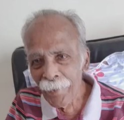
Late Mr.P.V. Alexander
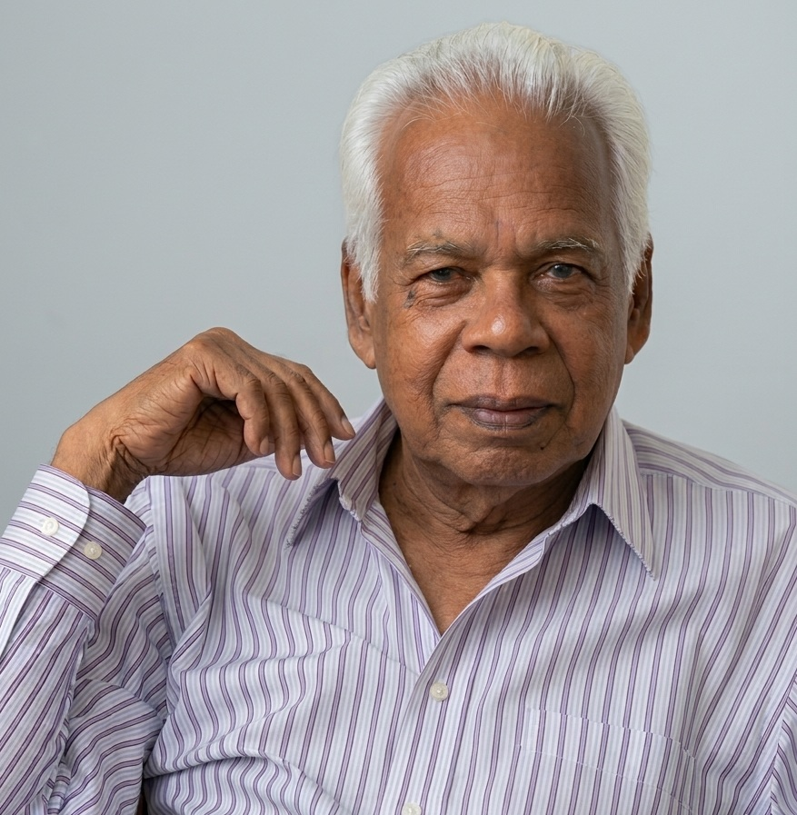
Late Mr. M.J. Thomas
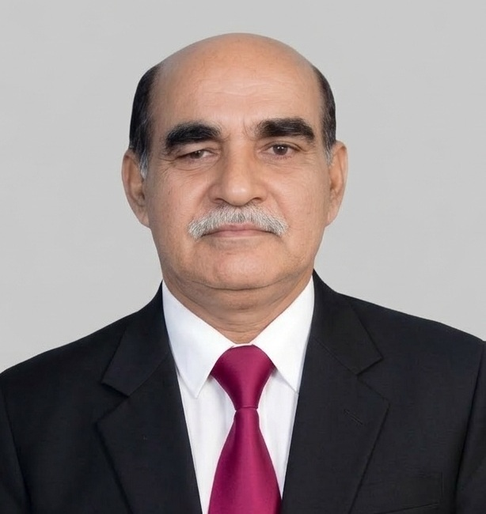
Late Mr. P.D. Varghese
Late Mr. M.J. Mathai
For fifteen years, worship was nomadic, moving from the India Crusade Workers Hostel under Mr. P.K. Koruth’s leadership, to the Hindustan Congregation Parish Hall at Infantry Road (Vishranthi Nilayam Campus), and even to the homes of faithful members such as Mr. V.M. Mammen and Dr. M.M. Ninan. In 1975, land was purchased at Lingarajapuram, laying the foundation for a permanent sanctuary.
The First Church Building (1980–2004)
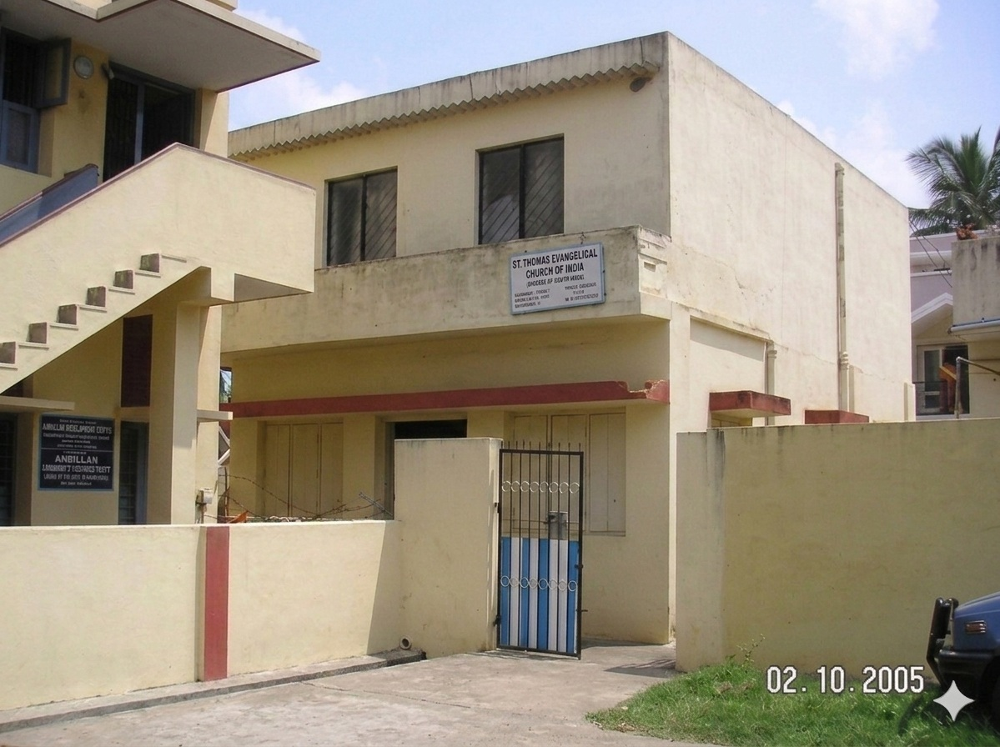
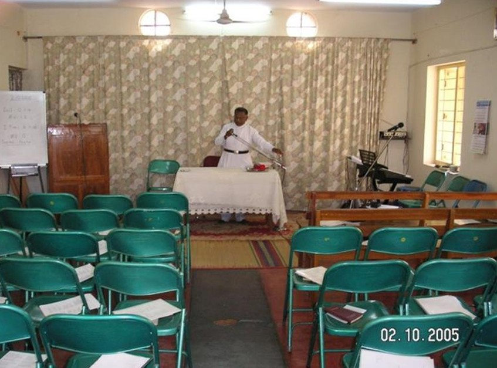
The parish matured into a hub of faith: in 1981, under Rev. T. C. George, it hosted the Bahya Kerala Diocese Conference for the first time. In 1984, under Rev. Thomas Abraham, it hosted the Bahya Kerala Diocese Conference for the Second time. Rev. Thomas Varghese emphasized nurturing the young, establishing the Sunday School. The parish hosted the conference again in 1992 under Rev. Thomas Varghese, and continuing the passion to bring the believers from Bahya Kerala Diocese, parish hosted the conference on fourth time in 2004 lead by Rev. K. S. James. This era cemented Bangalore Parish as a spiritual anchor for diaspora believers
Expansion and New Foundations (2005–2007)
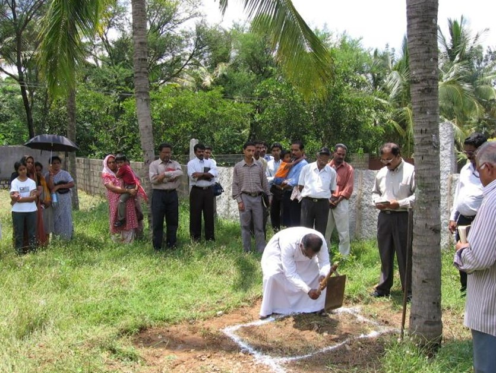
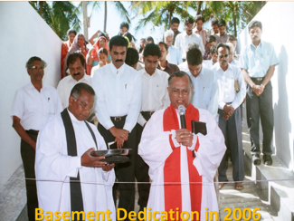
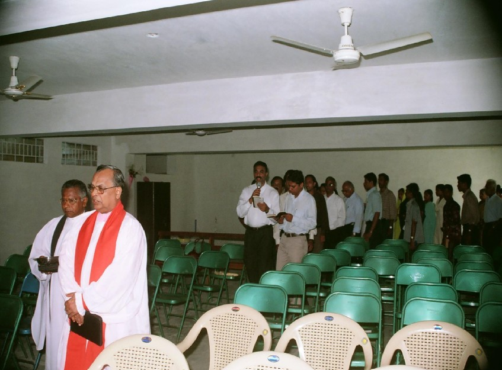
In 2006, Bishop Dr. M.K. Koshy dedicated the basement, which served as the worship space until completion of parish building. On March 24, 2007, the church building construction was completed under the supervision of Rev. Biju Thomas, and the new church was consecrated by Presiding Bishop Most Rev. T.C. Cherian. Bishop Dr. M.K. Koshy, Rev. Dr. Thomas Varghese, Rev. John V. John, Rev. Titus, Rev. David P. Varghese, and Rev. K.S. James were present on this historic day.
Mission initiatives flourished: Karnataka Jyothi (2006), initiated by Rev. Biju Thomas, expanded worship groups in Ambedkar Nagar, Adur, Pagathi Nagar, and Bannerghatta. Rev. Puttaswamy coordinated the mission, later succeeded by Br. Radhakrishnan.
In 2007, a parsonage was constructed under Rev. Thomas Tottathil, located next to the church, providing a dignified and convenient residence for the Vicar and family. This ensured pastoral care could be offered with greater stability and presence.
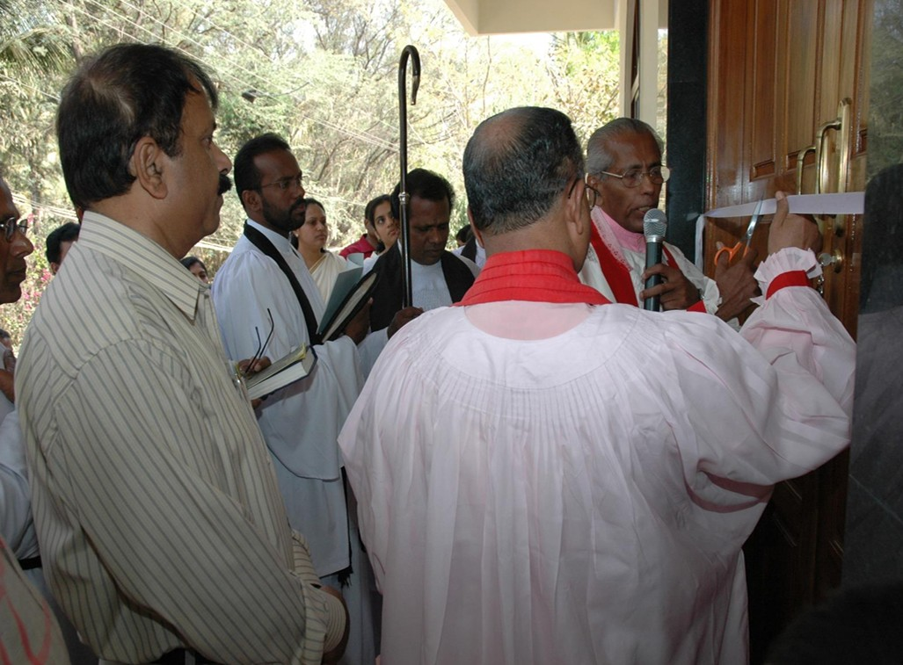
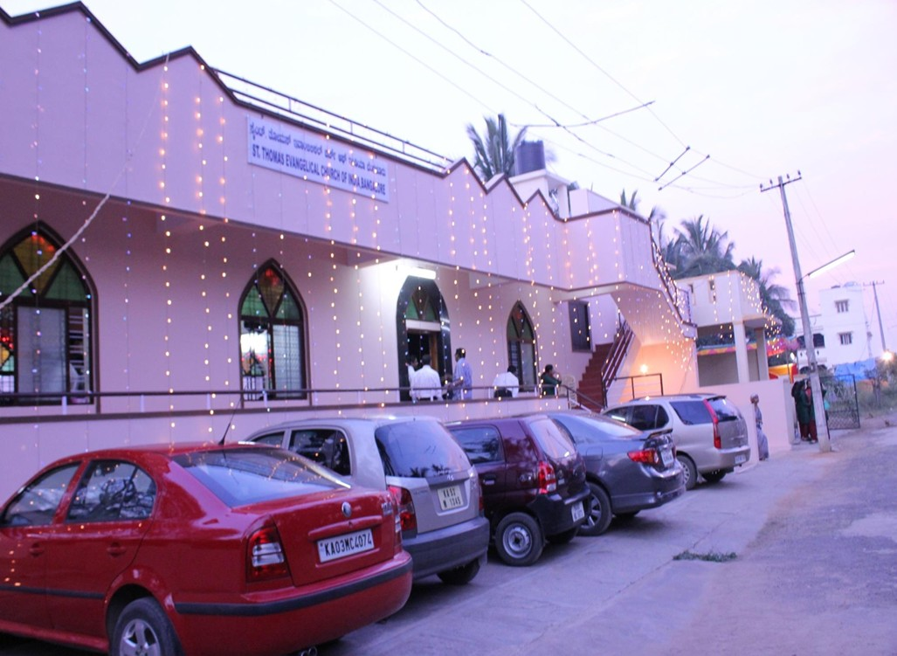
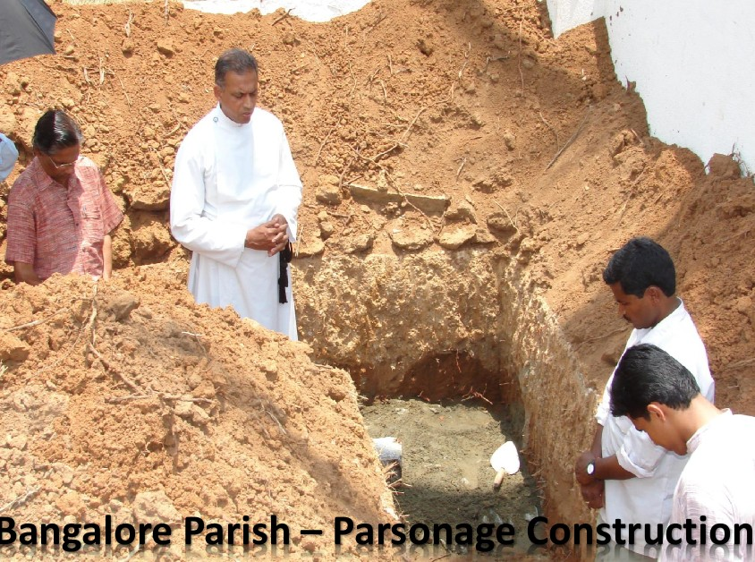
Growth and New Initiatives (2008–2025)
The parish continued to evolve with vision and compassion.
Parish members continued to attend worship services faithfully, even though many had to travel long distances. Their perseverance was driven not by convenience, but by their love for Christ and their steadfast support of the St. Thomas Evangelical Church of India. Over time, however, the parish recognized that building churches closer to the homes of families would allow for easier access to worship and greater participation. Thus, in 2008, a group of families branched out to form the Koramangala Parish, ensuring that the growing community could worship with less burden of travel while remaining united in faith.
In the initial days, worship services were attended primarily by believers who had migrated from Kerala to Bangalore. As the years passed, many of these families began to settle permanently in this beautiful city. A new generation was born and raised here, and unlike their parents, their fluency in the Malayalam language was limited. Educated in English-medium schools, English naturally became their first language.Recognizing this shift, and with a vision to serve the younger generation more effectively, the parish introduced an English worship service in 2009 under Rev. P.M. Joseph. This initiative ensured that the spiritual life of the community remained vibrant and accessible, bridging tradition with the evolving linguistic and cultural identity of its members.
The 33rd Bahya Kerala Diocese (BKD) Conference of the St. Thomas Evangelical Church of India was held from October 23–26, 2014, at Claret Nivas, Bangalore, hosted by the Bangalore Parish under the leadership of Rev. Shaji Alexander. Sabha leaders and prominent servants of God led various sessions, offering deep spiritual insights and guidance to the gathered faithful.
As the parish continued to emphasize mission-oriented work, an evangelistic Christmas Carol Service was held on 9th December 2018 under the leadership of Rev. Moncy Varghese. The special purpose of this gathering was to create a platform through which the message of salvation could be introduced into the lives of unbelievers. This event not only reflected the parish’s commitment to outreach but also demonstrated its heartfelt desire to share the hope of Christ with the wider community.
On September 3, 2021, it was officially registered as a Public Religious and Charitable Trust.
On 14 July 2024, a new prayer hall was dedicated in Bellary mission field under Rev. Laji Varughese. And on 4 August 2024, a utility complex with parking facilities was inaugurated.
Participation in the Sabha’s Urban Mission, leading to the formation of STECI City Serve Fellowship (CSF). On February 21, 2025, CSF officially recognized by the Church Council under Rev. Varghese John.
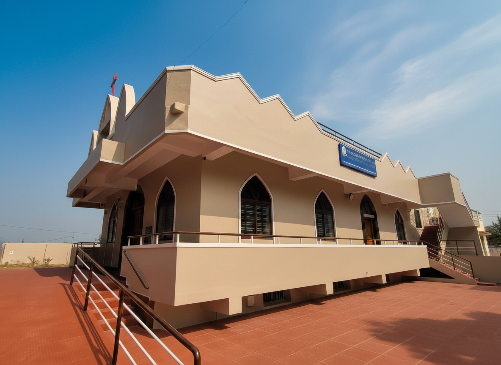
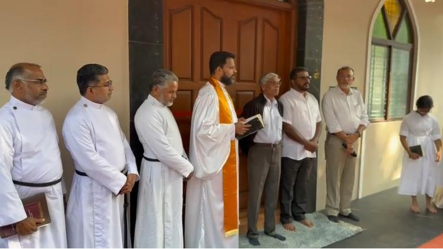
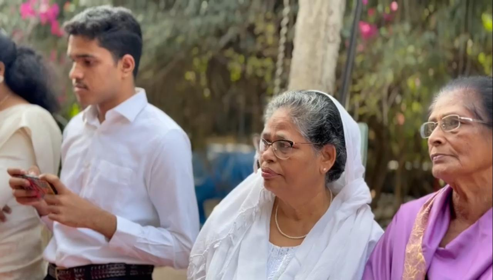
Later that year, under the leadership of Rev. Laji Varughese, the church underwent a significant renovation—the first major interior transformation since the construction of the new building in 2007. For nearly two decades, the sanctuary had remained unchanged, faithfully serving the parish. Yet, the elders discerned the need for renewal, voicing their desire to replace the plastic chairs with traditional wooden benches. This change not only honored the heritage of historic churches but also provided greater convenience and capacity for the growing congregation.
Alongside this, the pulpit and altar were carefully redesigned and beautified, reflecting both reverence and aesthetic grace. The interiors were reimagined to embody the sanctity of worship, blending heritage with modern sensibilities. On December 21, 2025, thanks giving prayer offered by Rev. Laji Varughese and resumed the worship in the renovated santury. The occasion symbolized a bridge between past and future—preserving tradition while embracing renewal—so that the church might continue to inspire generations in the beauty and presence of God.
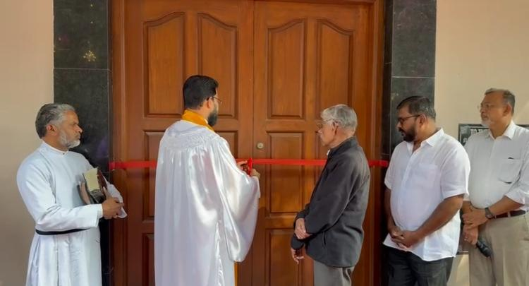
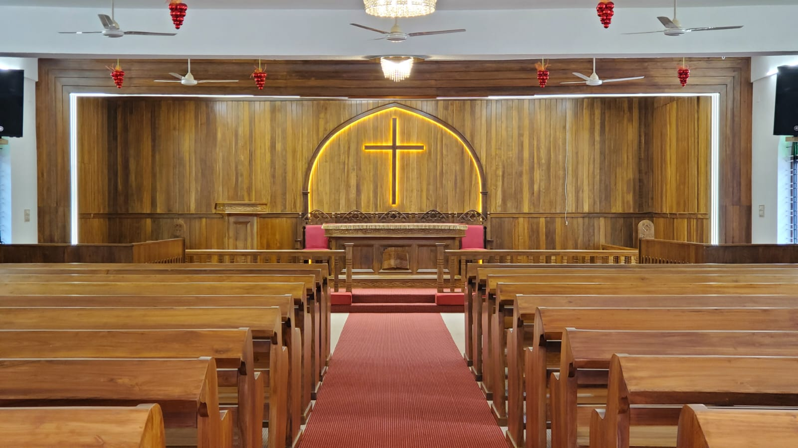
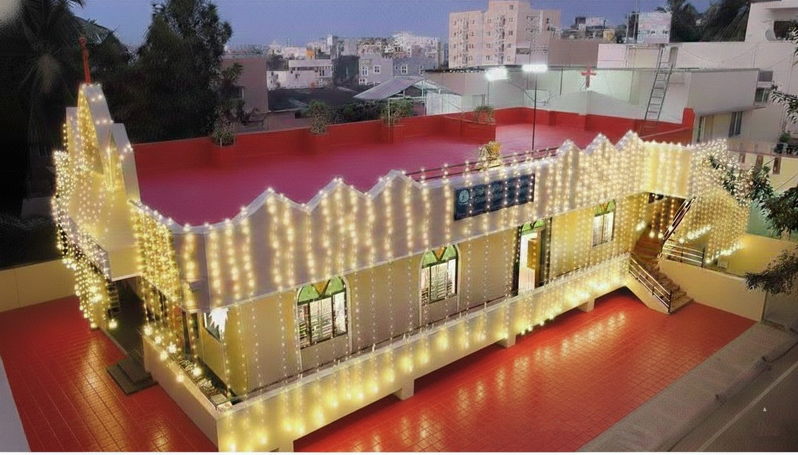
✨ Legacy and Vision
From six believers in a Bible college room to a thriving, multi-lingual parish with missions in Bellary and beyond, the Bangalore Parish stands as a living testimony to faith, fellowship, and perseverance.
It is not merely a record of land and buildings, but a spiritual epic—proof that “The Lord has done great things for us, and we are filled with joy” (Psalm 126:3). Today, the parish shines as a beacon of hope, carrying forward the legacy of its pioneers into a purposeful future.